2. entities JPA
2.1. Example 1 - Object representation of a single table
2.1.1. The table [personne]
Consider a database with a single table, [personne], whose purpose is to store some information about individuals:
 |
primary key of the table | |
version of the row in the table. Each time the person is modified, their version number is incremented. | |
person's last name | |
first name | |
their date of birth | |
integer 0 (unmarried) or 1 (married) | |
number of children |
2.1.2. The entity [Personne]
We are in the following runtime environment:
 |
The layer JPA [5] must bridge the relational world of the database [7] and the object world [4] manipulated by the Java programs [3]. This bridge is established through configuration, and there are two ways to do this:
- using XML files. This was virtually the only way to do it until the advent of JDK 1.5
- using Java annotations since JDK 1.5
In this document, we will use almost exclusively the second method.
The [Personne] object representing the [personne] table presented earlier could be as follows:
...
@SuppressWarnings("unused")
@Entity
@Table(name="Personne")
public class Personne implements Serializable{
@Id
@Column(name = "ID", nullable = false)
@GeneratedValue(strategy = GenerationType.AUTO)
private Integer id;
@Column(name = "VERSION", nullable = false)
@Version
private int version;
@Column(name = "NOM", length = 30, nullable = false, unique = true)
private String nom;
@Column(name = "PRENOM", length = 30, nullable = false)
private String prenom;
@Column(name = "DATENAISSANCE", nullable = false)
@Temporal(TemporalType.DATE)
private Date datenaissance;
@Column(name = "MARIE", nullable = false)
private boolean marie;
@Column(name = "NBENFANTS", nullable = false)
private int nbenfants;
// manufacturers
public Personne() {
}
public Personne(String nom, String prenom, Date datenaissance, boolean marie,
int nbenfants) {
setNom(nom);
setPrenom(prenom);
setDatenaissance(datenaissance);
setMarie(marie);
setNbenfants(nbenfants);
}
// toString
public String toString() {
...
}
// getters and setters
...
}
Configuration is done using Java @Annotation annotations. Java annotations are either processed by the compiler or by specialized tools at runtime. Aside from the annotation on line 3 intended for the compiler, all annotations here are intended for the JPA implementation being used, such as Hibernate or Toplink. They will therefore be processed at runtime. In the absence of tools capable of interpreting them, these annotations are ignored. Thus, the [Personne] class above could be used in a non-JPA context.
There are two distinct cases for using JPA annotations in a C class associated with a table T:
- the table T already exists: the JPA annotations must then replicate the existing structure (column names and definitions, integrity constraints, foreign keys, primary keys, etc.)
- Table T does not exist and will be created based on the annotations found in class C.
Case 2 is the easiest to handle. Using the annotations JPA, we specify the structure of the table T we want. Case 1 is often more complex. The table T may have been created a long time ago, outside of any JPA context. Its structure may therefore be ill-suited to the relational/object bridge of JPA. To simplify matters, we will consider case 2, where the table T associated with class C will be created based on the annotations JPA of class C.
Let’s comment on the annotations of class [Personne]:
- line 4: the @Entity annotation is the first required annotation. It is placed before the line that declares the class and indicates that the class in question must be managed by the persistence layer JPA. In the absence of this annotation, all other annotations JPA would be ignored.
- Line 5: The @Table annotation designates the database table that the class represents. Its main argument is name, which specifies the table name. If this argument is omitted, the table will be named after the class, in this case [Personne]. In our example, the @Table annotation is therefore redundant.
- Line 8: The @Id annotation is used to designate the field in the class that maps to the table’s primary key. This annotation is required. Here, it indicates that the id field on line 11 maps to the table’s primary key.
- Line 9: The @Column annotation is used to link a class field to the table column that the field represents. The name attribute specifies the name of the column in the table. If this attribute is omitted, the column has the same name as the field. In our example, the name argument was therefore not required. The nullable=false argument indicates that the column associated with the field cannot have the value NULL and that the field must therefore have a value.
- Line 10: The annotation @GeneratedValue specifies how the primary key is generated when it is automatically generated by SGBD. This will be the case in all our examples. This is not mandatory. Thus, our person could have a student ID that serves as the primary key and is not generated by SGBD but is set by the application. In this case, the annotation @GeneratedValue would be absent. The strategy argument specifies how the primary key is generated when generated by the SGBD. Not all SGBDs use the same technique for generating primary key values. For example:
uses a value generator called before each insertion | |
the primary key field is defined as having the Identity type. The result is similar to Firebird’s value generator, except that the key value is not known until after the row is inserted. | |
uses an object called SEQUENCE, which again acts as a value generator |
The JPA layer must generate different SQL commands depending on the SGBD to create the value generator. It is configured to specify the type of SGBD it must handle. As a result, it can determine the standard strategy for generating primary key values for this SGBD. The argument strategy = GenerationType.AUTO tells the JPA layer that it must use this standard strategy. This technique worked in all the examples in this document for the seven SGBD instances used.
- Line 14: The @Version annotation designates the field used to manage concurrent access to the same row in the table.
To understand this issue of concurrent access to the same row in the [personne] table, let’s assume that a web application allows a person’s information to be updated and examine the following scenario:
At time T1, user U1 begins editing a person P. At this moment, the number of children is 0. He changes this number to 1, but before he saves his changes, user U2 begins editing the same person P. Since U1 has not yet saved his changes, U2 sees the number of children as 0 on his screen. U2 changes the name of person P to uppercase. Then U1 and U2 save their changes in that order. U2’s change will take precedence: in the database, the name will be in uppercase and the number of children will remain at zero, even though U1 believes they changed it to 1.
The concept of a person helps us solve this problem. Let’s revisit the same use case:
At time T1, user U1 enters edit mode for a person P. At this point, the number of children is 0 and the version is V1. They change the number of children to 1, but before they save their changes, a user U2 enters to edit the same person P. Since U1 has not yet saved their changes, U2 sees the number of children as 0 and the version as V1. U2 changes the name of person P to uppercase. Then U1 and U2 save their changes in that order. Before saving a change, the system verifies that the user modifying person P holds the same version as the currently registered person P. This will be the case for user U1. Their modification is therefore accepted, and we then change the version of the modified person from V1 to V2 to indicate that the person has undergone a change. When validating U2’s modification, we will notice that U2 holds a version V1 for person P, whereas person P’s current version is V2. We can then inform user U2 that someone else has acted before them and that they must start over with person P’s new version. They will do so, retrieve a person P with version V2 who now has a child, convert the name to uppercase, and validate. Their modification will be accepted if the registered person P still has version V2. Ultimately, the modifications made by U1 and U2 will be taken into account, whereas in the use case without version, one of the modifications was lost.
The [dao] layer of the client application can manage the version of the [Personne] class itself. Whenever there is a modification to an object P, the version for that object is incremented by 1 in the table. The @Version annotation allows this management to be transferred to the JPA layer. The field in question does not need to be named version as in the example. It can have any name.
The fields corresponding to the annotations @Id and @Version are present because of persistence. They would not be needed if the class [Personne] did not need to be persisted. We can see, therefore, that an object is represented differently depending on whether or not it needs to be persisted.
- Line 17: Once again, the @Column annotation provides information about the column in the [personne] table associated with the name field of the Person class. Here we find two new arguments:
- unique=true indicates that a person’s name must be unique. This will result in the addition of a uniqueness constraint on the NOM column of the [personne] table in the database.
- length=30 sets the number of characters in the NOM column to 30. This means that the type of this column will be VARCHAR(30).
- Line 24: The @Temporal annotation is used to specify the SQL type for a column or field of the date/time type. The TemporalType.DATE type denotes a date alone without an associated time. The other possible types are TemporalType.TIME for encoding a time and TemporalType.TIMESTAMP for encoding a date with a time.
Let’s now comment on the rest of the code in the [Personne] class:
- Line 6: The class implements the Serializable interface. Serialization of an object involves converting it into a sequence of bits. Deserialization is the reverse operation. Serialization/deserialization is used in particular in client/server applications where objects are exchanged over the network. Client or server applications are unaware of this operation, which is performed transparently by the JVM. For this to be possible, however, the classes of the exchanged objects must be "tagged" with the Serializable keyword.
- Line 37: a constructor for the class. Note that the fields id and version are not included in the parameters. In fact, these two fields are managed by the JPA layer and not by the application.
- Lines 51 and beyond: the get and set methods for each of the class’s fields. Note that JPA annotations can be placed on the get methods of the fields instead of on the fields themselves. The placement of the annotations indicates the mode that JPA must use to access the fields:
- if the annotations are placed at the field level, JPA will access the fields directly to read or write them
- if the annotations are placed at the get level, JPA will access the fields via the get / set methods to read or write them
It is the position of the @Id annotation that determines the position of the JPA annotations in a class. When placed at the field level, it indicates direct access to the fields; when placed at the get level, it indicates access to the fields via the get and set methods. The other annotations must then be placed in the same way as the @Id annotation.
2.1.3. The Eclipse Test Project
We will conduct our initial experiments with the previous [Personne] entity. We will carry them out using the following architecture:
 |
- in [7]: the database that will be generated from the annotations of the [Personne] entity as well as additional configurations made in a file named [persistence.xml]
- in [5, 6]: a JPA layer implemented by Hibernate
- in [4]: the [Personne] entity
- to [3]: a console-based test program
We will conduct various experiments:
- generate the schema for BD using an Ant script and the Hibernate Tools
- generate BD and populate it with some data
- Execute the BD schema and perform the four basic operations on the [personne] table (insert, update, delete, query)
The necessary tools are as follows:
- Eclipse and its plugins described in section 5.2.
- the [hibernate-personnes-entites] project, which can be found in the <examples>/hibernate/direct/people-entities folder
- the various SGBD files described in the appendices (Section 5 and beyond).
The Eclipse project is as follows:
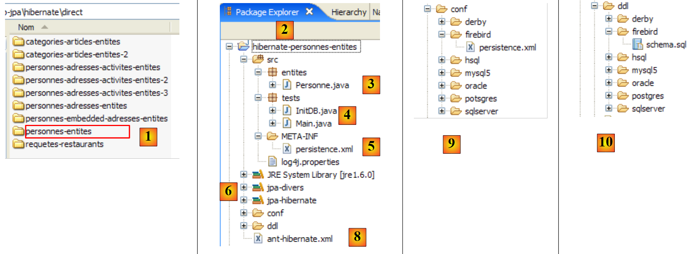 |
- in [1]: the Eclipse project folder
- in [2]: the project imported into Eclipse (File / Import)
- in [3]: the [Personne] entity being tested
- in [4]: the test programs
- in [5]: [persistence.xml] is the configuration file for the layer JPA
- in [6]: the libraries used. They were described in section 1.5.
- in [8]: an Ant script that will be used to generate the table associated with the entity [Personne]
- in [9]: the [persistence.xml] files for each of the SGBD used
- in [10]: the schemas of the generated database for each of the SGBD files used
We will describe these elements one by one.
2.1.4. The [Personne] entity (2)
We are making a slight modification to the previous description of the [Personne] entity, as well as providing additional information:
package entites;
...
@SuppressWarnings({ "unused", "serial" })
@Entity
@Table(name="jpa01_personne")
public class Personne implements Serializable{
@Id
@Column(name = "ID", nullable = false)
@GeneratedValue(strategy = GenerationType.AUTO)
private Integer id;
@Column(name = "VERSION", nullable = false)
@Version
private int version;
@Column(name = "NOM", length = 30, nullable = false, unique = true)
private String nom;
@Column(name = "PRENOM", length = 30, nullable = false)
private String prenom;
@Column(name = "DATENAISSANCE", nullable = false)
@Temporal(TemporalType.DATE)
private Date datenaissance;
@Column(name = "MARIE", nullable = false)
private boolean marie;
@Column(name = "NBENFANTS", nullable = false)
private int nbenfants;
// manufacturers
public Personne() {
}
public Personne(String nom, String prenom, Date datenaissance, boolean marie,
int nbenfants) {
....
}
// toString
public String toString() {
return String.format("[%d,%d,%s,%s,%s,%s,%d]", getId(), getVersion(),
getNom(), getPrenom(), new SimpleDateFormat("dd/MM/yyyy")
.format(getDatenaissance()), isMarie(), getNbenfants());
}
// getters and setters
...
}
- line 7: we give the name [jpa01_personne] to the table associated with the entity [Personne]. In this document, various tables will be created in a schema always named jpa. By the end of this tutorial, the jpa schema will contain numerous tables. To help the reader keep track of them, tables that are related to one another will have the same prefix: jpaxx_.
- Line 45: a method named [toString] to display an object named [Personne] on the console.
2.1.5. Configuring the data access layer
In the Eclipse project above, the configuration of the JPA layer is handled by the [META-INF/persistence.xml] file:
 |
At runtime, the file [META-INF/persistence.xml] is searched for in the application’s classpath. In our Eclipse project, everything in the [/src] and [1] folders is copied to a [/bin] and [2] folder. This folder is part of the project’s classpath. This is why [META-INF/persistence.xml] will be found when the JPA layer is configured.
By default, Eclipse does not place the source code in the project’s [/src] folder but directly under the project folder itself. All our Eclipse projects will be configured so that the sources are in [/src] and the compiled classes in [/bin], as shown in section 5.2.1.
Let’s examine the configuration of the JPA layer defined in the [persistence.xml] file of our project:
<?xml version="1.0" encoding="UTF-8"?>
<persistence version="1.0" xmlns="http://java.sun.com/xml/ns/persistence">
<persistence-unit name="jpa" transaction-type="RESOURCE_LOCAL">
<!-- provider -->
<provider>org.hibernate.ejb.HibernatePersistence</provider>
<properties>
<!-- Persistent classes -->
<property name="hibernate.archive.autodetection" value="class, hbm" />
<!-- logs SQL
<property name="hibernate.show_sql" value="true"/>
<property name="hibernate.format_sql" value="true"/>
<property name="use_sql_comments" value="true"/>
-->
<!-- connection JDBC -->
<property name="hibernate.connection.driver_class" value="com.mysql.jdbc.Driver" />
<property name="hibernate.connection.url" value="jdbc:mysql://localhost:3306/jpa" />
<property name="hibernate.connection.username" value="jpa" />
<property name="hibernate.connection.password" value="jpa" />
<!-- automatic schematic creation -->
<property name="hibernate.hbm2ddl.auto" value="create" />
<!-- Dialect -->
<property name="hibernate.dialect" value="org.hibernate.dialect.MySQL5InnoDBDialect" />
<!-- properties DataSource c3p0 -->
<property name="hibernate.c3p0.min_size" value="5" />
<property name="hibernate.c3p0.max_size" value="20" />
<property name="hibernate.c3p0.timeout" value="300" />
<property name="hibernate.c3p0.max_statements" value="50" />
<property name="hibernate.c3p0.idle_test_period" value="3000" />
</properties>
</persistence-unit>
</persistence>
To understand this configuration, we need to review the data access architecture of our application:
 |
- The file [persistence.xml] will configure the layers [4, 5, 6]
- [4]: Hibernate implementation of JPA
- [5]: Hibernate accesses the database via a connection pool. A connection pool is a pool of open connections to SGBD. A SGBD is accessed by multiple users, even though, for performance reasons, it cannot exceed a limit N of open connections simultaneously. Well-written code opens a connection to the SGBD for a minimum amount of time: it issues SQL commands and closes the connection. It will do this repeatedly, every time it needs to work with the database. The cost of opening and closing a connection is not negligible, and this is where the connection pool comes into play. Upon application startup, the connection pool opens N1 connections with the SGBD. The application will request an open connection from the pool whenever it needs one. The connection will be returned to the pool as soon as the application no longer needs it, preferably as quickly as possible. The connection is not closed and remains available for the next user. A connection pool is therefore a system for sharing open connections.
- [6]: the JDBC driver for the SGBD used
Now let’s see how the [persistence.xml] file configures the [4, 5, 6] layers above:
- Line 2: The root tag of the XML file is <persistence>.
- line 3: <persistence-unit> is used to define a persistence unit. There can be multiple persistence units. Each of them has a name (name attribute) and a transaction type (transaction-type attribute). The application will access the persistence unit via its name, in this case jpa. The transaction type RESOURCE_LOCAL indicates that the application manages transactions itself using SGBD. This will be the case here. When the application runs in a EJB3 container, it can use that container’s transaction service. In this case, we will set transaction-type=JTA (Java Transaction Api). JTA is the default value when the transaction-type attribute is absent.
- Line 5: The <provider> tag is used to define a class that implements the [javax.persistence.spi.PersistenceProvider] interface, which allows the application to initialize the persistence layer. Because we are using a JPA / Hibernate implementation, the class used here is a Hibernate class.
- Line 6: The <properties> tag introduces properties specific to the chosen provider. Thus, depending on whether you have chosen Hibernate, Toplink, Kodo, etc., you will have different properties. The following are specific to Hibernate.
- Line 8: Instructs Hibernate to scan the project’s classpath to find classes annotated with @Entity in order to manage them. @Entity classes can also be declared using <class>nom_de_la_classe</class> tags, directly under the <persistence-unit> tag. This is what we will do with the JPA / Toplink provider.
- Lines 10–12, which are commented out here, configure Hibernate’s console logs:
- Line 10: to display or suppress the SQL commands issued by Hibernate on the SGBD. This is very useful during the learning phase. Because of the relational/object bridge, the application works on persistent objects to which it applies operations of the type [persist, merge, remove]. It is very useful to know which SQL commands are actually issued for these operations. By studying them, you gradually begin to guess the SQL commands that Hibernate will generate when performing such an operation on persistent objects, and the relational/object bridge begins to take shape in your mind.
- Line 11: The SQL commands displayed on the console can be formatted neatly to make them easier to read
- line 12: the displayed SQL commands will also be commented
- Lines 15–19 define the JDBC layer ([6] layer in the architecture):
- line 15: the driver class JDBC of SGBD, here MySQL5
- line 16: the url of the database used
- lines 17, 18: the connection user and their password
- We are using elements explained in the appendices to section 5.5. The reader is encouraged to review this section on MySQL5.
- line 22: Hibernate needs to know the SGBD it is dealing with. In fact, SGBDs all have proprietary SQL extensions, a specific way of managing the automatic generation of primary key values, ... which means that Hibernate needs to know the SGBD it is working with in order to send it the SQL commands that it will understand. [MySQL5InnoDBDialect] refers to the SGBD MySQL5 with InnoDB-type tables that support transactions.
- Lines 24–28 configure the c3p0 connection pool ([5] layer in the architecture):
- lines 24, 25: the minimum (default 3) and maximum number of connections (default 15) in the pool. The default initial number of connections is 3.
- line 26: maximum wait time in milliseconds for a connection request from the client. After this time, c3p0 will return an exception.
- line 27: to access BD, Hibernate uses prepared SQL commands (PreparedStatement) that c3p0 can cache. This means that if the application requests a prepared SQL command that is already in the cache a second time, it will not need to be prepared (preparing a SQL command incurs a cost), and the one in the cache will be used. Here, we specify the maximum number of prepared SQL orders that the cache can hold, across all connections (a prepared SQL order belongs to a single connection).
- Line 28: The interval, in milliseconds, for checking the validity of connections. A connection in the pool may become invalid for various reasons (the JDBC driver invalidates the connection because it has been open too long, the JDBC driver has "bugs," etc.).
- Line 20: Here, we specify that when the persistence unit is initialized, the database schema for @Entity objects should be generated. Hibernate now has all the tools to issue the commands for generating the database tables:
- the configuration of the @Entity objects allows it to determine which tables to generate
- lines 15–18 and 24–28 allow it to establish a connection with the SGBD
- line 22 tells it which SQL dialect to use to generate the tables
Thus, the [persistence.xml] file used here recreates a new database each time the application is run. The tables are recreated (create table) after being dropped (drop table) if they existed. Note that this is obviously not something to do with a production database...
Tests have shown that the drop/create phase for tables can fail. This was particularly the case when, for the same test, we switched from a JPA/Hibernate layer to a JPA/Toplink layer or vice versa. Starting from the same @Entity objects, the two implementations do not generate exactly the same tables, generators, sequences, etc., and it has sometimes happened that the drop/create phase fails, forcing us to delete the tables manually. The "Appendices" section, paragraph 5 and beyond, describes the tools that can be used to perform this task manually. It should be noted that the JPA/Hibernate implementation proved to be the most efficient during this initial phase of database content creation: crashes were rare.
The tools used by the JPA / Hibernate layer are in the [jpa-hibernate] library, presented in section 1.5, page 8. The JDBC drivers required to access the SGBD files are in the [jpa-divers] library. These two libraries were added to the classpath of the project studied here. Their contents are summarized below:
 |
2.1.6. Generating the database with an Ant script
As we have just seen, Hibernate provides tools to generate the database schema for the application’s @Entity objects. Hibernate can:
- generate the text file containing the commands SQL that create the database. Only the dialect in [persistence.xml] is then used.
- create the tables representing the @Entity objects in the target database defined in [persistence.xml]. In this case, the entire [persistence.xml] file is used.
We will present an Ant script capable of generating the database schema, which is a representation of the @Entity objects. This script is not my own: it is based on a similar script from [ref1]. Ant (Another Neat Tool) is a Java batch task tool. Ant scripts are not easy for beginners to understand. We will use only one, the one we are discussing now:
 |
- in [1]: the directory structure of the examples in this tutorial.
- in [2]: the [personnes-entites] folder of the Eclipse project currently being studied
- in [3]: the <lib> folder containing the five JAR libraries defined in Section 1.5.
- in [4]: the archive [hibernate-tools.jar] required for one of the tasks in the script [ant-hibernate.xml] that we will examine.
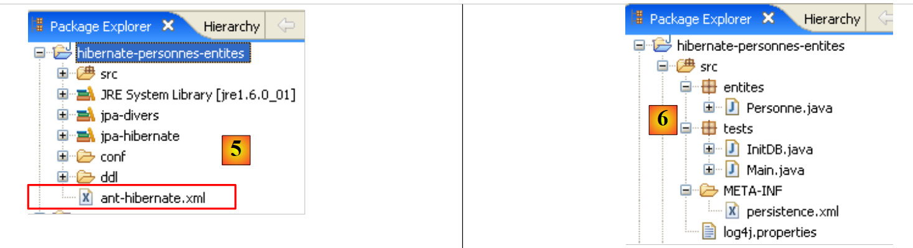 |
- in [5]: the Eclipse project and the [ant-hibernate.xml] script
- in [6]: the [src] folder of the project
The script [ant-hibernate.xml] [5] will use the JAR archives in the <lib> folder [3], specifically the [hibernate-tools.jar] and [4] archives in the [lib/hibernate] folder. We have reproduced the folder structure so that the reader can see that to find the [lib] folder from the [personnes-entites] [2] folder in the [ant-hibernate.xml] script, you must follow the path: ../../../lib.
Let’s examine the [ant-hibernate.xml] script:
<project name="jpa-hibernate" default="compile" basedir=".">
<!-- project name and version -->
<property name="proj.name" value="jpa-hibernate" />
<property name="proj.shortname" value="jpa-hibernate" />
<property name="version" value="1.0" />
<!-- Global properties -->
<property name="src.java.dir" value="src" />
<property name="lib.dir" value="../../../lib" />
<property name="build.dir" value="bin" />
<!-- project Classpath -->
<path id="project.classpath">
<fileset dir="${lib.dir}">
<include name="**/*.jar" />
</fileset>
</path>
<!-- configuration files that must be in the classpath-->
<patternset id="conf">
<include name="**/*.xml" />
<include name="**/*.properties" />
</patternset>
<!-- Cleaning project -->
<target name="clean" description="Nettoyer le projet">
<delete dir="${build.dir}" />
<mkdir dir="${build.dir}" />
</target>
<!-- Project compilation -->
<target name="compile" depends="clean">
<javac srcdir="${src.java.dir}" destdir="${build.dir}" classpathref="project.classpath" />
</target>
<!-- Copy configuration files to classpath -->
<target name="copyconf">
<mkdir dir="${build.dir}" />
<copy todir="${build.dir}">
<fileset dir="${src.java.dir}">
<patternset refid="conf" />
</fileset>
</copy>
</target>
<!-- Hibernate Tools -->
<taskdef name="hibernatetool" classname="org.hibernate.tool.ant.HibernateToolTask" classpathref="project.classpath" />
<!-- Generate DDL for the database -->
<target name="DDL" depends="compile, copyconf" description="Génération DDL base">
<hibernatetool destdir="${basedir}">
<classpath path="${build.dir}" />
<!-- Use META-INF/persistence.xml -->
<jpaconfiguration />
<!-- export -->
<hbm2ddl drop="true" create="true" export="false" outputfilename="ddl/schema.sql" delimiter=";" format="true" />
</hibernatetool>
</target>
<!-- Generate database -->
<target name="BD" depends="compile, copyconf" description="Génération BD">
<hibernatetool destdir="${basedir}">
<classpath path="${build.dir}" />
<!-- Use META-INF/persistence.xml -->
<jpaconfiguration />
<!-- export -->
<hbm2ddl drop="true" create="true" export="true" outputfilename="ddl/schema.sql" delimiter=";" format="true" />
</hibernatetool>
</target>
</project>
- Line 1: The [ant] project is named "jpa-hibernate". It contains a set of tasks, one of which is the default task: in this case, the task named "compile". An Ant script is called to execute a task T. If no task is specified, the default task is executed. basedir="." indicates that for all relative paths found in the script, the starting point is the folder containing the Ant script, in this case the <examples>/hibernate/direct/people-entities folder.
- Lines 3–11: define script variables using the tag <property name="nomVariable" value="valeurVariable"/>. The variable can then be used in the script with the notation ${nomVariable}. The names can be anything. Let’s take a closer look at the variables defined on lines 9–11:
- line 9: defines a variable named "src.java.dir" (the name is arbitrary) which, later in the script, will refer to the folder containing the Java source code. Its value is "src", a path relative to the folder specified by the basedir attribute (line 1). This is therefore the path "./src", where . here refers to the <exemples>/hibernate/direct/personnes-entites folder. The Java source code is indeed located in the <personnes-entites>/src folder (see [6] above).
- Line 10: defines a variable named "lib.dir" which, later in the script, will refer to the folder containing the JAR files required by the script's Java tasks. Its value is ../../../lib refers to the <examples>/lib folder (see [3] above).
- Line 11: defines a variable named "build.dir" which, later in the script, will refer to the folder where the .class files generated from compiling the .java source files should be placed. Its value "bin" refers to the <personnes-entites>/bin folder. We have already explained that in the Eclipse project we examined, the <bin> folder was where the .class files were generated. Ant will do the same.
- Lines 14–18: The <path> tag is used to define elements of the classpath that the Ant tasks will need to use. Here, the path "project.classpath" (the name is arbitrary) groups all the .jar archives in the <examples>/lib directory tree.
- Lines 21–24: The <patternset> tag is used to designate a set of files using naming patterns. Here, the patternset named conf refers to all files with the suffix .xml or .properties. This patternset will be used to refer to the .xml and .properties files in the <src> folder (persistence.xml, log4j.properties) (see [6]), which are application configuration files. When certain tasks are executed, these files must be copied to the <bin> folder so that they are in the project’s classpath. We will then use the conf patternset to reference them.
- Lines 27–30: The <target> tag denotes a task in the script. This is the first one we encounter. Everything that preceded this pertains to configuring the Ant script’s execution environment. The task is called clean. It runs in two steps: the <bin> folder is deleted (line 28) and then recreated (line 29).
- Lines 33–35: The `compile` task, which is the script’s default task (line 1). It depends (via the `depends` attribute) on the `clean` task. This means that before executing the compile task, Ant must first execute the clean task to clear the <bin> folder. The purpose of the compile task here is to compile the Java source files in the <src> folder.
- Line 34: Call the Java compiler with three parameters:
- srcdir: the folder containing the Java source files, here the <src> folder
- destdir: the folder where the generated .class files should be stored, here the <bin> folder
- classpathref: the classpath to use for compilation, here all jar archives in the <lib> folder tree
- (continued)
- lines 38–45: the copyconf task, whose purpose is to copy all .xml and .properties files from the <src> directory to the <bin> directory.
- line 48: definition of a task using the <taskdef> tag. Such a task is intended to be reused elsewhere in the script. This is a coding convenience. Because the task is used in various places in the script, it is defined once with the <taskdef> tag and then reused by its name when needed.
- The task is called hibernatetool (attribute name).
- Its class is defined by the classname attribute. Here, the specified class will be found in the [hibernate-tools.jar] archive we mentioned earlier.
- The classpathref attribute tells Ant where to look for the previous class
- (continued)
- Lines 51–60 pertain to the task of interest here: generating the database schema for the @Entity objects in our Eclipse project.
- Line 51: The task is named DDL (similar to Data Definition Language, and SQL, which is associated with creating database objects). It depends on the tasks "compile" and "copyconf" in that order. The task DDL will therefore trigger, in order, the execution of the clean, compile, and copyconf tasks. When the DDL task starts, the <bin> folder contains the .class files generated from the .java sources, notably the @Entity objects, as well as the [META-INF/persistence.xml] file that configures the JPA / Hibernate layer.
- Lines 53–59: The task [hibernatetool] defined on line 48 is called. It is passed numerous parameters, in addition to those already defined on line 48:
- Line 53: The output directory for the results produced by the task will be the current directory.
- Line 54: The task’s classpath will be the <bin> folder.
- Line 56: tells the [hibernatetool] task how to determine its execution environment: the <jpaconfiguration/> tag tells it that it is in a JPA environment and that it must therefore use the [META-INF/persistence.xml] file, which it will find here in its classpath.
- Line 58 sets the conditions for generating the database: drop=true indicates that SQL drop table commands must be issued before the tables are created; create=true indicates that the text file containing the SQL database creation commands must be created; outputfilename specifies the name of this file, SQL — here schema.sql in the <ddl> folder of the Eclipse project; export=false indicates that the generated SQL commands should not be executed in a connection to the SGBD database. This point is important: it implies that to execute the task, the target SGBD does not need to be launched. delimiter sets the character that separates two SQL commands in the generated schema; format=true requests that basic formatting be applied to the generated text.
- Lines 51–60 pertain to the task of interest here: generating the database schema for the @Entity objects in our Eclipse project.
- (continued)
- Lines 63–72 define the task named BD. It is identical to the previous DDL task, except that this time it generates the database (export="true" on line 70). The task opens a connection to SGBD using the information found in [persistence.xml], to run the schema SQL and generate the database. To execute the BD task, the SGBD task must therefore be running.
2.1.7. Running the task before DDL
To run the [ant-hibernate.xml] script, we first need to make a few configurations within Eclipse.
 |
- In [1]: select [External Tools]
- In [2]: create a new Ant configuration
 |
- In [3]: Name the Ant configuration
- in [5]: select the Ant script using the button in [4]
- in [6]: apply the changes
- in [7]: the Ant configuration has been created DDL
 |
 |
- in [8]: in the JRE tab, define the JRE to use. The [10] field is normally pre-filled with the JRE used by Eclipse. Therefore, there is normally nothing to do on this panel. However, I encountered a case where the Ant script could not find the <javac> compiler. This compiler is not located in a JRE (Java Runtime Environment) but in a JDK (Java Development Kit). Eclipse’s Ant tool locates this compiler via the environment variable JAVA_HOME (Start / Control Panel / Performance and Maintenance / System / Advanced tab / Environment Variables button) [A]. If this variable has not been defined, you can allow Ant to find the <javac> compiler by setting [10] to JDK instead of JRE. This is available in the same folder as JRE and [B]. We will use the [9] button to declare the JDK among the available JRE and [C] so that we can then select it in [10].
- In [12]: in the [Targets] tab, select the task DDL. Thus, the Ant configuration we named DDL [7] will correspond to the execution of the task named DDL [12], which, as we know, generates the schema DDL for the database schema of the application’s @Entity objects.
 |
- in [13]: the configuration is validated
- in [14]: we run it
In the [console] view, we see logs from the execution of the Ant task DDL:
Buildfile: C:\data\2006-2007\eclipse\dvp-jpa\hibernate\direct\personnes-entites\ant-hibernate.xml
clean:
[delete] Deleting directory C:\data\2006-2007\eclipse\dvp-jpa\hibernate\direct\personnes-entites\bin
[mkdir] Created dir: C:\data\2006-2007\eclipse\dvp-jpa\hibernate\direct\personnes-entites\bin
compile:
[javac] Compiling 3 source files to C:\data\2006-2007\eclipse\dvp-jpa\hibernate\direct\personnes-entites\bin
copyconf:
[copy] Copying 2 files to C:\data\2006-2007\eclipse\dvp-jpa\hibernate\direct\personnes-entites\bin
DDL:
[hibernatetool] Executing Hibernate Tool with a JPA Configuration
[hibernatetool] 1. task: hbm2ddl (Generates database schema)
[hibernatetool] drop table if exists jpa01_personne;
[hibernatetool] create table jpa01_personne (
[hibernatetool] ID integer not null auto_increment,
[hibernatetool] VERSION integer not null,
[hibernatetool] NOM varchar(30) not null unique,
[hibernatetool] PRENOM varchar(30) not null,
[hibernatetool] DATENAISSANCE date not null,
[hibernatetool] MARIE bit not null,
[hibernatetool] NBENFANTS integer not null,
[hibernatetool] primary key (ID)
[hibernatetool] ) ENGINE=InnoDB;
BUILD SUCCESSFUL
Total time: 5 seconds
- Recall that task DDL is named [hibernatetool] (line 10) and depends on the tasks clean (line 2), compile (line 5), and copyconf (line 7).
- line 10: the task [hibernatetool] uses the file [persistence.xml] from a configuration JPA
- line 11: the task [hbm2ddl] will generate the database schema DDL
- Lines 12–22: the DDL schema from the database
Recall that we instructed task [hbm2ddl] to generate schema DDL in a specific location:
<hbm2ddl drop="true" create="true" export="true" outputfilename="ddl/schema.sql" delimiter=";" format="true" />
- line 74: the schema must be generated in the file ddl/schema.sql. Let’s check:
 |
- in [1]: the file ddl/schema.sql is indeed present (press F5 to refresh the tree view)
- in [2]: its contents. This is the schema for a MySQL5 database. The [persistence.xml] configuration file for the JPA layer did indeed specify a SGBD MySQL5 (line 8 below):
<!-- connection JDBC -->
<property name="hibernate.connection.driver_class" value="com.mysql.jdbc.Driver" />
...
<!-- automatic schematic creation -->
<property name="hibernate.hbm2ddl.auto" value="create" />
<!-- Dialect -->
<property name="hibernate.dialect" value="org.hibernate.dialect.MySQL5InnoDBDialect" />
<!-- properties DataSource c3p0 -->
...
Let’s examine the object-relational mapping implemented here by looking at the configuration of the @Entity Person object and the generated schema DDL:
 |
 |
A few points are worth noting:
- A1-B1: The table name specified in A1 is indeed the one used in B1. Note the `DROP` statement preceding the `CREATE` in B1.
- A2-B2: show how the primary key is generated. The AUTO mode specified in A2 resulted in the autoincrement attribute specific to MySQL5. The primary key generation mode is most often specific to SGBD.
- A3-B3: show the SQL bit type specific to MySQL5 to represent a Java boolean type.
Let’s repeat this test with another SGBD:
 |
- The [conf] [1] folder contains the [persistence.xml] files for various SGBD files. Take the Oracle [2] file, for example, and place it in the [META-INF] [3] folder in place of the previous one. Its contents are as follows:
<?xml version="1.0" encoding="UTF-8"?>
<persistence version="1.0" xmlns="http://java.sun.com/xml/ns/persistence">
<persistence-unit name="jpa" transaction-type="RESOURCE_LOCAL">
<!-- provider -->
<provider>org.hibernate.ejb.HibernatePersistence</provider>
<properties>
<!-- Persistent classes -->
<property name="hibernate.archive.autodetection" value="class, hbm" />
<!-- logs SQL
<property name="hibernate.show_sql" value="true"/>
<property name="hibernate.format_sql" value="true"/>
<property name="use_sql_comments" value="true"/>
-->
<!-- connection JDBC -->
<property name="hibernate.connection.driver_class" value="oracle.jdbc.OracleDriver" />
<property name="hibernate.connection.url" value="jdbc:oracle:thin:@localhost:1521:xe" />
<property name="hibernate.connection.username" value="jpa" />
<property name="hibernate.connection.password" value="jpa" />
<!-- automatic schematic creation -->
<property name="hibernate.hbm2ddl.auto" value="create" />
<!-- Dialect -->
<property name="hibernate.dialect" value="org.hibernate.dialect.OracleDialect" />
<!-- properties DataSource c3p0 -->
<property name="hibernate.c3p0.min_size" value="5" />
<property name="hibernate.c3p0.max_size" value="20" />
<property name="hibernate.c3p0.timeout" value="300" />
<property name="hibernate.c3p0.max_statements" value="50" />
<property name="hibernate.c3p0.idle_test_period" value="3000" />
</properties>
</persistence-unit>
</persistence>
Readers are encouraged to consult the appendix, specifically the section on Oracle (Section 5.7), to better understand the configuration JDBC.
Only line 25 is truly important here: we are telling Hibernate that SGBD is now an Oracle SGBD. Running the Ant task DDL yields the result [4] shown above. Note that the Oracle schema is different from the MySQL5 schema. This is a key strength of JPA: the developer does not need to worry about these details, which significantly increases the portability of their code.
2.1.8. Executing the ant task ** ** BD
You may recall that the Ant task named BD does the same thing as the Ant task DDL but also generates the database. Therefore, SGBD must be run. We will focus on the case of SGBD and MySQL5, and we invite the reader to copy the [conf/mysql5/persistence.xml] file into the [src/META-INF] folder. To verify the task’s operation, we will use the SQL Explorer plugin (see section 5.2.6) to check the status of the BD JPA before and after executing the BD Ant task.
First, we need to create a new Ant configuration to run the BD task. The reader is invited to follow the procedure outlined for the DDL Ant configuration in section 2.1.7. The new Ant configuration will be named BD:
 |
- in [1]: we duplicate the previous configuration named DDL
- to [2]: the new configuration is named BD. It executes the ant task BD [3], which physically generates the database.
- Once this is done, run SGBD and MySQL5 (section 5.5).
We now use the SQL Explorer plugin to explore the databases managed by SGBD. The reader should familiarize themselves with this plugin beforehand if necessary (see section 5.2.6).
 |
- [1]: Open the SQL Explorer view [Window / Open Perspective / Other]
- [2]: If necessary, create a [mysql5-jpa] connection (see section 5.5.5, page 252) and open it
- [3]: log in as jpa / jpa
- [4]: we are connected to MySQL5.
 |
- in [5]: the BD jpa has only one table: [articles]
- In [6]: we start executing the Ant task BD. Because we are in the [SQL Explorer] perspective, we do not see the [Console] view, which shows us the task logs. You can display this view [Window / Show View / ...] or return to the Java perspective [Window / Open Perspective / ...].
- In [7]: once the Ant task BD is complete, you may return to the [SQL Explorer] perspective and refresh the BD JPA tree.
- In [8]: you can see the table [jpa01_personne] that was created.
The reader is invited to regenerate BD using other SGBD files. The procedure is as follows:
- Copy the [conf/<sgbd>/persistence.xml] file to the [src/META-INF] folder, where <sgbd> is the tested SGBD
- launch <sgbd> by following the instructions in the appendices regarding it
- in the SQL Explorer view, create a connection to <sgbd>. This is also explained in the appendices for each of the SGBD files
- Repeat the previous tests
At this point, we have gained some insights:
- we have a better understanding of the object-relational bridge concept. Here, it was implemented using Hibernate. We will use Toplink later.
- we know that this object-relational bridge is configured in two places:
- in the @Entity objects, where the relationships between the objects' fields and the columns in the tables of BD
- in [META-INF/persistence.xml], where we provide the JPA implementation with information about the two components of the object-relational bridge: the @Entity objects (object) and the database (relational).
- We have created two Ant tasks, named DDL and BD, which allow us to create the database based on the previous configuration, even before writing any Java code.
Now that the JPA layer of our application is properly configured, we can begin exploring the API and JPA layers with Java code.
2.1.9. The persistence context of an application
Let’s clarify the runtime environment of a JPA client:
 |
We know that the JPA [2] layer creates an object-relational bridge. The set of objects managed by the JPA layer within the context of this object-relational bridge is called the "persistence context." To access data in the persistence context, a JPA [1] client must go through the JPA [2] layer:
- it can create an object and ask the JPA layer to make it persistent. The object then becomes part of the persistence context.
- it can request a reference to an existing persistent object from the [JPA] layer.
- it can modify a persistent object obtained from the JPA layer.
- it can ask the JPA layer to delete an object from the persistence context.
The JPA layer provides the client with an interface called [EntityManager] which, as its name suggests, allows for the management of @Entity objects in the persistence context. Below are the main methods of this interface:
adds entity to the persistence context | |
removes entity from the persistence context | |
merges an entity object from the client that is not managed by the persistence context with the entity object in the persistence context that has the same primary key. The result returned is the entity object from the persistence context. | |
places an object retrieved from the database via its primary key. The type T of the object allows the JPA layer to know which table to query. The persistent object thus created is returned to the client. | |
creates a Query object from a JPQL query (Java Persistence Query Language). A JPQL query is analogous to a SQL query, except that it queries objects rather than tables. | |
method analogous to the previous one, except that queryText is, a SQL command rather than JPQL. | |
A method identical to createQuery, except that the order JPQL queryText has been externalized into a configuration file and associated with a name. This name is the method’s parameter. |
A EntityManager object has a lifecycle that is not necessarily the same as that of the application. It has a beginning and an end. Thus, a JPA client can work successively with different EntityManager objects. The persistence context associated with a EntityManager has the same lifecycle as it does. They are inseparable from one another. When a EntityManager object is closed, its persistence context is synchronized with the database if necessary, and then it no longer exists. A new EntityManager must be created to obtain a new persistence context.
The client JPA can create a EntityManager and thus a persistence context with the following statement:
EntityManagerFactory emf = Persistence.createEntityManagerFactory("jpa");
- javax.persistence.Persistence is a static class used to obtain a factory for EntityManager objects. This factory is linked to a specific persistence unit. Recall that the configuration file [META-INF/persistence.xml] allows you to define persistence units, and that these units have a name:
<persistence-unit name="jpa" transaction-type="RESOURCE_LOCAL">
In the example above, the persistence unit is named jpa. It comes with its own specific configuration, including the SGBD with which it works. The [Persistence.createEntityManagerFactory("jpa")] statement creates an object factory of type EntityManagerFactory capable of providing EntityManager objects intended to manage persistence contexts associated with the persistence unit named jpa. Obtaining a EntityManager object, and thus a persistence context, is done from the EntityManagerFactory object as follows:
The following methods of the [EntityManager] interface allow you to manage the lifecycle of the persistence context:
The persistence context is closed. Forces synchronization of the persistence context with the database:
| |
The persistence context is cleared of all its objects but not closed. | |
The persistence context is synchronized with the database as described for close() |
The client JPA can force the synchronization of the persistence context with the database using the previous [EntityManager].flush method. Synchronization can be explicit or implicit. In the first case, it is up to the client to perform flush operations when it wants to synchronize; otherwise, synchronization occurs at specific times that we will specify. The synchronization mode is managed by the following methods of the [EntityManager] interface:
There are two possible values for flushMode: FlushModeType.AUTO (default): synchronization occurs before each SELECT query made on the database. FlushModeType.COMMIT: synchronization occurs only at the end of database transactions. | |
returns the current synchronization mode |
Let’s summarize. In FlushModeType.AUTO mode, which is the default mode, the persistence context will be synchronized with the database at the following times:
- before each SELECT operation on the database
- at the end of a transaction on the database
- following a flush or close operation on the persistence context
In FlushModeType.COMMIT mode, the same applies except for operation 1, which does not occur. The normal mode of interaction with the JPA layer is transactional mode. The client performs various operations on the persistence context within a transaction. In this case, the synchronization points between the persistence context and the database are cases 1 and 2 above in AUTO mode, and case 2 only in COMMIT mode.
Let’s conclude with API from the Query interface, which allows you to issue JPQL commands on the persistence context or SQL commands directly on the database to retrieve data. The Query interface is as follows:
 |
We will need to use methods 1 through 4 above:
- 1 - The getResultList method executes a SELECT that returns multiple objects. These will be obtained in a List object. This object is an interface. It provides an Iterator object that allows you to iterate through the elements of the list L in the following form:
Iterator iterator = L.iterator();
while (iterator.hasNext()) {
// use the iterator.next() object, which represents the current element in the list
...
}
The list L can also be iterated over using a for loop:
for (Object o : L) {
// exploit object o
}
- 2 - The method getSingleResult executes a command JPQL / SQL / SELECT that returns a single object.
- 3 - The executeUpdate method executes a SQL update or delete command and returns the number of rows affected by the operation.
- 4 - The method setParameter(String, Object) allows you to assign a value to a named parameter of a configured JPQL command
- 5 - The method setParameter(int, Object) uses the parameter not by name but by its position in the JPQL order.
2.1.10. A first client JPA
Let’s return to a Java perspective of the project:
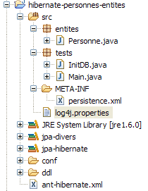 |
We now know almost everything about this project except for the contents of the [src/tests] folder, which we are now examining. The folder contains two test programs for the JPA layer:
- [InitDB.java] is a program that inserts a few rows into the [jpa01_personne] table in the database. Its code will provide us with the first elements of the JPA layer.
- [Main.java] is a program that performs the operations defined in CRUD on the table [jpa01_personne]. Analyzing its code will allow us to explore the fundamental concepts of the persistence context and the lifecycle of objects within that context.
2.1.10.1. The code
The code for the [InitDB.java] program is as follows:
package tests;
import java.text.ParseException;
import java.text.SimpleDateFormat;
import javax.persistence.EntityManager;
import javax.persistence.EntityManagerFactory;
import javax.persistence.EntityTransaction;
import javax.persistence.Persistence;
import entites.Personne;
public class InitDB {
// constants
private final static String TABLE_NAME = "jpa01_personne";
public static void main(String[] args) throws ParseException {
// Persistence unit
EntityManagerFactory emf = Persistence.createEntityManagerFactory("jpa");
// retrieve a EntityManagerFactory from the persistence unit
EntityManager em = emf.createEntityManager();
// start of transaction
EntityTransaction tx = em.getTransaction();
tx.begin();
// delete items from the people table
em.createNativeQuery("delete from " + TABLE_NAME).executeUpdate();
// create two people
Personne p1 = new Personne("Martin", "Paul", new SimpleDateFormat("dd/MM/yy").parse("31/01/2000"), true, 2);
Personne p2 = new Personne("Durant", "Sylvie", new SimpleDateFormat("dd/MM/yy").parse("05/07/2001"), false, 0);
// persistence of people
em.persist(p1);
em.persist(p2);
// people display
System.out.println("[personnes]");
for (Object p : em.createQuery("select p from Personne p order by p.nom asc").getResultList()) {
System.out.println(p);
}
// end transaction
tx.commit();
// end EntityManager
em.close();
// end EntityManagerFactory
emf.close();
// log
System.out.println("terminé ...");
}
}
This code should be read in light of what was explained in section 2.1.9.
- line 19: an emf object EntityManagerFactory is requested for the jpa persistence unit (defined in persistence.xml). This operation is normally performed only once during the lifetime of an application.
- Line 21: An em object EntityManager is requested to manage a persistence context.
- Line 23: A Transaction object is requested to manage a transaction. Note that operations on the persistence context are performed within a transaction. We will see that this is not mandatory, but that problems may arise if it is not done. If the application runs in a EJB3 container, then operations on the persistence context are always performed within a transaction.
- Line 24: the transaction begins
- line 26: executes a SQL DELETE statement on the table "jpa01_personne" (nativeQuery). This is done to clear the table of all content and thus better see the result of the execution of the [InitDB] application
- Lines 28–29: Two Person objects, p1 and p2, are created. These are ordinary objects and, for now, have nothing to do with the persistence context. From the perspective of the persistence context, Hibernate classifies these objects as transient, as opposed to persistent objects, which are managed by the persistence context. We will instead refer to non-persistent objects (a non-standard term) to indicate that they are not yet managed by the persistence context, and to persistent objects for those that are managed by it. We will encounter a third category of objects: detached objects, which are objects that were previously persistent but whose persistence context has been closed. The client may hold references to such objects, which explains why they are not necessarily destroyed when the persistence context is closed. They are then said to be in a detached state. The operation [EntityManager].merge allows them to be reattached to a newly created persistence context.
- Lines 31–32: Persons p1 and p2 are added to the persistence context by the operation [EntityManager].persist. They then become persistent objects.
- Lines 35–37: A JPQL query is executed: "select p from Person p order by p.nom asc". Person is not the table (the table is named jpa01_personne) but the @Entity object associated with the table. Here we have a JPQL query (Java Persistence Query Language) on the persistence context, not a SQL command on the database. That said, apart from the Person object that replaced the jpa01_personne table, the syntaxes are identical. A for loop iterates through the list (of people) resulting from the SELECT statement to display each element on the console. Here, we are verifying that the elements placed in the persistence context on lines 31–32 are indeed present in the table. Transparent synchronization of the persistence context with the database will occur. In fact, a SELECT query will be issued, and we noted that this is one of the cases where synchronization takes place. It is therefore at this moment that, in the background, JPA / Hibernate will issue the two SQL insert statements that will insert the two people into the jpa01_personne table. The persist operation did not do this. This operation adds objects to the persistence context without affecting the database. The actual work happens during synchronization, here just before the database select.
- Line 39: We end the transaction started on line 24. A synchronization will take place again. Nothing will happen here since the persistence context has not changed since the last synchronization.
- Line 41: We close the persistence context.
- Line 43: We close the EntityManager factory.
2.1.10.2. The execution of the code
- run SGBD MySQL5
- Place conf/mysql5/persistence.xml in META-INF/persistence.xml if necessary
- run the [InitDB] application
The following results are obtained:
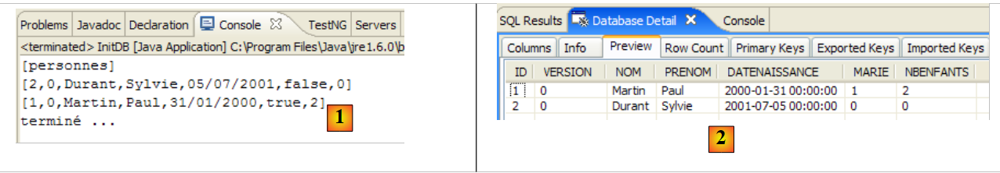 |
- in [1]: the console output in the Java perspective. The expected results are obtained.
- in [2]: verify the contents of the [jpa01_personne] table using the SQL Explorer perspective, as explained in section 2.1.8. Two points are worth noting:
- the primary key ID was generated automatically
- the same applies to the ID version. We observe that the first record, version, has the ID 0..
Here we have the first elements of the JPA model. We have successfully inserted data into a table. We will build on these achievements to write the second test, but first let’s discuss logs.
2.1.11. Implementing Hibernate logs
It is possible to see the SQL commands issued to the database by the JPA / Hibernate layer. It is useful to know this to see if the JPA layer is as efficient as a developer who would have written the SQL commands themselves.
With JPA / Hibernate, the SQL logs can be checked in the [persistence.xml] file:
<!-- Persistent classes -->
<property name="hibernate.archive.autodetection" value="class, hbm" />
<!-- logs SQL
<property name="hibernate.show_sql" value="true"/>
<property name="hibernate.format_sql" value="true"/>
<property name="use_sql_comments" value="true"/>
-->
<!-- connection JDBC -->
<property name="hibernate.connection.driver_class" value="com.mysql.jdbc.Driver" />
- Lines 4-6: The SQL logs were not enabled at this time. We now enable them by removing the comment tags from lines 3 and 7.
We rerun the [InitDB] application. The console output then becomes as follows:
- lines 2-4: the SQL delete order resulting from the statement:
// delete items from the people table
em.createNativeQuery("delete from " + TABLE_NAME).executeUpdate();
- lines 5-18: the SQL insert commands resulting from the statements:
// persistence of people
em.persist(p1);
em.persist(p2);
- lines 21-32: the SQL SELECT statement resulting from the instruction:
for (Object p : em.createQuery("select p from Personne p order by p.nom asc").getResultList())
If we perform intermediate console outputs, we will see that the SQL logs for a Java code statement I are written when statement I is executed. This does not mean that the displayed SQL query is executed on the database at that moment. It is actually cached for execution during the next synchronization of the persistence context with the database.
Additional logs can be obtained via the [src/log4j.properties] file:
 |
- In [1], the file [log4j.properties] is processed by the archive [log4j-1.2.13.jar] [2] of the tool named LOG4j (Logs for Java) available at url [http://logging.apache.org/log4j/docs/index.html]. Placed in the [src] folder of the Eclipse project, we know that [log4j.properties] will be automatically copied to the [bin] folder of the [3] project. Once this is done, it is now in the project’s classpath, and that is where the [2] archive will retrieve it.
The [log4j.properties] file allows us to control certain Hibernate logs. In previous runs, its contents were as follows:
# Direct log messages to stdout
log4j.appender.stdout=org.apache.log4j.ConsoleAppender
log4j.appender.stdout.Target=System.out
log4j.appender.stdout.layout=org.apache.log4j.PatternLayout
log4j.appender.stdout.layout.ConversionPattern=%d{ABSOLUTE} %5p %c{1}:%L - %m%n
# Root logger option
log4j.rootLogger=ERROR, stdout
# Hibernate logging options (INFO only shows startup messages)
#log4j.logger.org.hibernate=INFO
# Log JDBC bind parameter runtime arguments
#log4j.logger.org.hibernate.type=DEBUG
I won’t comment much on this configuration since I’ve never taken the time to seriously research LOG4j.
- Lines 1–8 are found in all log4j.properties files I have encountered
- Lines 10–14 are present in the log4j.properties files from the Hibernate examples.
- Line 11: controls Hibernate’s general logs. Since the line is commented out, these logs are disabled here. There are several log levels: INFO (general information about what Hibernate is doing), WARN (Hibernate alerts us to a potential issue), DEBUG (detailed logs). The INFO level is the least verbose, while the DEBUG mode is the most verbose. Enabling line 11 allows you to see what Hibernate is doing, particularly when the application starts up. This is often useful.
- Line 12, if enabled, reveals the actual arguments used when executing the configured SQL queries.
Let’s start by uncommenting line 14
# Log JDBC bind parameter runtime arguments
log4j.logger.org.hibernate.type=DEBUG
and re-execute [InitDB]. The new logs generated by this change are as follows (partial view):
- Lines 8–10 are new logs generated by the activation of line 14 of [log4j.properties]. They indicate the 5 values assigned to the formal parameters ? of the parameterized query in lines 2–7. Thus, we see that the VERSION column will receive the value 0 (line 8).
Now let’s enable line 11 of [log4j.properties]:
and rerun [InitDB]:
Reading these logs provides a lot of interesting information:
- line 7: Hibernate indicates the name of an @Entity class it found
- line 8: indicates that the [Personne] class will be mapped to the [jpa01_personne] table
- line 9: indicates the C3P0 connection pool that will be used, the name of the JDBC driver, and the url database to be managed
- Line 10: provides other characteristics of the JDBC connection: owner, commit type, etc.
- line 14: the dialect used to communicate with the SGBD
- line 15: the type of transaction used. JDBCTransactionFactory indicates that the application manages its own transactions. It does not run in a EJB3 container that would provide its own transaction service.
- The following lines refer to Hibernate configuration options that we have not encountered. Interested readers are encouraged to consult the Hibernate documentation.
- Line 37: SQL commands will be displayed on the console. This was requested in [persistence.xml]:
<property name="hibernate.show_sql" value="true" />
<property name="hibernate.format_sql" value="true" />
<property name="use_sql_comments" value="true" />
- Lines 43–45: The database schema is exported to SGBD and c.a.d. The database is then emptied and recreated. This mechanism stems from the configuration in [persistence.xml] (line 4 below):
...
<property name="hibernate.connection.password" value="jpa" />
<!-- automatic schematic creation -->
<property name="hibernate.hbm2ddl.auto" value="create" />
<!-- Dialect -->
...
When an application "crashes" with a Hibernate exception that you don't understand, start by enabling Hibernate logging in DEBUG mode in [log4j.properties] to get a clearer picture:
# Root logger option
log4j.rootLogger=ERROR, stdout
# Hibernate logging options (INFO only shows startup messages)
log4j.logger.org.hibernate=DEBUG
In the rest of this document, logs are disabled by default to ensure a more readable console display.
2.1.12. Exploring the JPQL / HQL language with the Hibernate console
Note: This section requires the Hibernate Tools plugin (section 5.2.5).
In the code of the [InitDB] application, we used a JPQL query. JPQL (Java Persistence Query Language) is a language for querying the persistence context. The query encountered was as follows:
It selected all elements from the table associated with the @Entity [Personne] and returned them in ascending order by name. In the query above, p.nom is the name field of an instance p of the class [Personne]. A JPQL query therefore operates on the @Entity objects in the persistence context and not directly on the database tables. The JPA layer will translate this JPQL query into a SQL query appropriate for the SGBD with which it is working. Thus, in the case of a JPA / Hibernate implementation connected to a SGBD MySQL5, the previous query JPQL is translated into the following query SQL:
select
personne0_.ID as ID0_,
personne0_.VERSION as VERSION0_,
personne0_.NOM as NOM0_,
personne0_.PRENOM as PRENOM0_,
personne0_.DATENAISSANCE as DATENAIS5_0_,
personne0_.MARIE as MARIE0_,
personne0_.NBENFANTS as NBENFANTS0_
from
jpa01_personne personne0_
order by
personne0_.NOM asc
The JPA layer used the configuration of the @Entity object [Personne] to generate the correct SQL order. This is the object-relational bridge that was implemented here.
The [Hibernate Tools] plugin (section 5.2.5) provides a tool called "Hibernate Console" that allows
- issuing JPQL commands or the superset HQL (Hibernate Query Language) on the persistence context
- to retrieve the results
- to see the SQL equivalent that was executed against the database
The Hibernate console is an invaluable tool for learning the JPQL language and becoming familiar with the JPQL / SQL bridge. It is known that JPA was heavily inspired by ORM tools such as Hibernate or Toplink. JPQL is very similar to Hibernate’s HQL language but does not include all of its features. In the Hibernate console, you can issue HQL commands that will execute normally in the console but are not part of the JPQL language and therefore cannot be used in a JPA client. When this is the case, we will indicate it.
Let’s create a Hibernate console for our current Eclipse project:
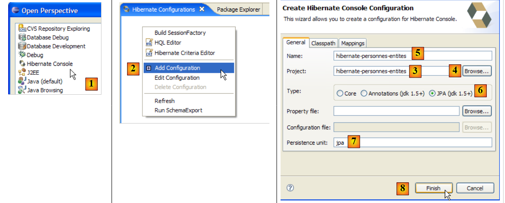 |
- [1]: We switch to a [Hibernate Console] perspective (Window / Open Perspective / Other)
- [2]: We create a new configuration in the [Hibernate Configuration] window
- using the [4] button, we select the Java project for which the Hibernate configuration is being created. Its name appears in [3].
- In [5], we give this configuration the name we want. Here, we used [3].
- In [6], we specify that we are using a configuration named JPA so that the tool knows it must process the file [META-INF/persistence.xml]
- In [7]: we specify that in this file, [META-INF/persistence.xml], the persistence unit named jpa must be used.
- In [8], we validate the configuration.
Next, SGBD must be run. Here, it is MySQL5.
 |
- In [1]: the created configuration displays a three-branch tree
- In [2]: the [Configuration] branch lists the objects the console used to configure itself: here, the @Entity Person.
- in [3]: the Session Factory is a Hibernate concept similar to EntityManager from JPA. It bridges the object-relational gap using the objects in the [Configuration] branch. In [3], the objects of the persistence context are presented, here again the @Entity Person.
- In [4]: the database accessed using the configuration found in [persistence.xml]. The table [jpa01_personne] is found there.
 |
- In [1], we create an editor HQL
- In the editor HQL,
- in [2], select the Hibernate configuration to use if there are multiple
- In [3], type the JPQL command you want to execute
- In [4], execute it
- In [5], the query results are displayed in the [Hibernate Query Result] window. You may encounter two issues here:
- you get nothing (no rows). The Hibernate console used the contents of [persistence.xml] to create a connection with SGBD. However, this configuration has a property that instructs the database to be emptied:
<property name="hibernate.hbm2ddl.auto" value="create" />
You must therefore rerun the [InitDB] application before re-executing the JPQL command above.
- (continued)
- The [Hibernate Query Result] window is not displayed. It is requested via [Window / Show View / ...]
The [Hibernate Dynamic SQL preview] window ([1] below) allows you to view the SQL query that will be executed to run the JPQL command you are currently writing. As soon as the syntax of the JPQL command is correct, the corresponding SQL command appears in this window:
 |
- When running [2], the previous command HQL is cleared
- In [3], a new one is executed
- In [4], the result
- In [5], the command SQL that was executed based on
The HQL editor offers HQL command completion:
 |
- in [1]: once the editor knows that p is a Person object, it can suggest the fields of p as you type.
- in [2]: an incorrect HQL command. You must write where p.marie=true.
- In [3]: the error is reported in the [SQL Preview] window
We invite the reader to issue other HQL / JPQL commands on the database.
2.1.13. A second client JPA
Let’s return to the project from a Java perspective:
- [InitDB.java] is a program that inserted a few rows into the [jpa01_personne] table in the database. Analyzing its code allowed us to acquire the first elements of API and JPA.
- [Main.java] is a program that performs the operations CRUD on the table [jpa01_personne]. Analyzing its code will allow us to revisit the fundamental concepts of the persistence context and the lifecycle of objects within that context.
2.1.13.1. The code structure
[Main.java] will run a series of tests, each designed to demonstrate a specific aspect of JPA:
 |
The method [main]
- successively calls the methods test1 through test11. We will present the code for each of these methods separately.
- It also uses private utility methods: clean, dump, log, getEntityManager, getNewEntityManager.
We present the main method and the so-called utility methods:
package tests;
...
import entites.Personne;
@SuppressWarnings("unchecked")
public class Main {
// constants
private final static String TABLE_NAME = "jpa01_personne";
// Persistence context
private static EntityManagerFactory emf = Persistence.createEntityManagerFactory("jpa");
private static EntityManager em = null;
// shared objects
private static Personne p1, p2, newp1;
public static void main(String[] args) throws Exception {
// base cleaning
log("clean");clean();
// dump table
dump();
// test1
log("test1");test1();
...
// test11
log("test11");test11();
// fine persistence context
if (em.isOpen())
em.close();
// closure EntityManagerFactory
emf.close();
}
// retrieve the current EntityManager
private static EntityManager getEntityManager() {
if (em == null || !em.isOpen()) {
em = emf.createEntityManager();
}
return em;
}
// pick up a new EntityManager
private static EntityManager getNewEntityManager() {
if (em != null && em.isOpen()) {
em.close();
}
em = emf.createEntityManager();
return em;
}
// table content display
private static void dump() {
// current persistence context
EntityManager em = getEntityManager();
// start of transaction
EntityTransaction tx = em.getTransaction();
tx.begin();
// people display
System.out.println("[personnes]");
for (Object p : em.createQuery("select p from Personne p order by p.nom asc").getResultList()) {
System.out.println(p);
}
// end transaction
tx.commit();
}
// raz BD
private static void clean() {
// persistence context
EntityManager em = getEntityManager();
// start of transaction
EntityTransaction tx = em.getTransaction();
tx.begin();
// delete elements from the PERSONNES table
em.createNativeQuery("delete from " + TABLE_NAME).executeUpdate();
// end transaction
tx.commit();
}
// logs
private static void log(String message) {
System.out.println("main : ----------- " + message);
}
// object creation
public static void test1() throws ParseException {
...
}
// modify a context object
public static void test2() {
...
}
// request items
public static void test3() {
...
}
// delete an object belonging to the persistence context
public static void test4() {
....
}
// detach, reattach and modify
public static void test5() {
...
}
// delete an object not belonging to the persistence context
public static void test6() {
...
}
// modify an object not belonging to the persistence context
public static void test7() {
...
}
// reattach an object to the persistence context
public static void test8() {
...
}
// a select request causes synchronization
// with the persistence context
public static void test9() {
....
}
// version control (optimistic locking)
public static void test10() {
...
}
// transaction rollback
public static void test11() throws ParseException {
...
}
}
- line 13: the EntityManagerFactory EMF object constructed from the JPA persistence unit defined in [persistence.xml]. It will allow us to create various persistence contexts throughout the application.
- line 14: a EntityManager persistence context that has not yet been initialized
- Line 17: Three [Personne] objects shared by the tests
- line 21: the table jpa01_personne is cleared and then displayed on line 24 to ensure we are starting with an empty table.
- lines 27-31: sequence of tests
- lines 34-35: closing the persistence context if it was open.
- line 38: closes the EntityManagerFactory emf object.
- Lines 42–47: The [getEntityManager] method sets the EntityManager (or persistence context) to current or new if it does not exist (lines 43–44).
- lines 50–56: The [getNewEntityManager] method creates a new persistence context. If one existed previously, it is closed (lines 51–52)
- lines 59-72: the method [dump] displays the contents of the table [jpa01_personne]. This code has already been encountered in [InitDB].
- lines 75-85: The method [clean] clears the table [jpa01_personne]. This code has already been encountered in [InitDB].
- Lines 88–90: The [log] method displays the message passed to it as a parameter on the console so that it is noticed.
We can now move on to studying the tests.
2.1.13.2. Test 1
The code for test1 is as follows:
// object creation
public static void test1() throws ParseException {
// persistence context
EntityManager em = getEntityManager();
// creating people
p1 = new Personne("Martin", "Paul", new SimpleDateFormat("dd/MM/yy").parse("31/01/2000"), true, 2);
p2 = new Personne("Durant", "Sylvie", new SimpleDateFormat("dd/MM/yy").parse("05/07/2001"), false, 0);
// start of transaction
EntityTransaction tx = em.getTransaction();
tx.begin();
// persistence of people
em.persist(p1);
em.persist(p2);
// end transaction
tx.commit();
// table is displayed
dump();
}
This code has already been encountered in [InitDB]: it creates two people and places them in the persistence context.
- line 4: we retrieve the current persistence context
- lines 6-7: create the two people
- lines 9-15: the two people are placed in the persistence context within a transaction.
- line 15: because the transaction is committed, the persistence context is synchronized with the database. The two people will be added to the [jpa01_personne] table.
- Line 17: The table is displayed
The console output for this first test is as follows:
main : ----------- test1
[personnes]
[2,0,Durant,Sylvie,05/07/2001,false,0]
[1,0,Martin,Paul,31/01/2000,true,2]
2.1.13.3. Test 2
The code for test2 is as follows:
// modify a context object
public static void test2() {
// persistence context
EntityManager em = getEntityManager();
// start of transaction
EntityTransaction tx = em.getTransaction();
tx.begin();
// increment the number of children in p1
p1.setNbenfants(p1.getNbenfants() + 1);
// change your marital status
p1.setMarie(false);
// object p1 is automatically saved (dirty checking)
// at next synchronization (commit or select)
// end transaction
tx.commit();
// the new table is displayed
dump();
}
- Test 2 aims to modify an object in the persistence context and then display the table contents to see if the modification took place
- Line 4: Retrieve the current persistence context
- lines 6-7: operations will be performed within a transaction
- Lines 9, 11: The number of children for person p1 is changed, as is their marital status
- Line 15: End of the transaction, so the persistence context is synchronized with the database
- line 17: display table
The console output for Test 2 is as follows:
- line 4: person p1 before modification
- line 8: person p1 after modification. Note that their version number has changed to 1. This number is incremented by 1 each time the line is updated.
2.1.13.4. Test 3
The code for test3 is as follows:
// request items
public static void test3() {
// persistence context
EntityManager em = getEntityManager();
// start of transaction
EntityTransaction tx = em.getTransaction();
tx.begin();
// we ask for person p1
Personne p1b = em.find(Personne.class, p1.getId());
// because p1 is already in the persistence context, there has been no access to the database
// p1b and p1 are the same references
System.out.format("p1==p1b ? %s%n", p1 == p1b);
// request a non-existent object returns 1 null pointer
Personne px = em.find(Personne.class, -4);
System.out.format("px==null ? %s%n", px == null);
// end transaction
tx.commit();
}
- Test 3 focuses on the [EntityManager.find] method, which retrieves an object from the database and places it in the persistence context. We will no longer explain the transaction that occurs in all tests unless it is used in an unusual way.
- Line 9: We ask the persistence context for the person with the same primary key as person p1. There are two cases:
- p1 is already in the persistence context. This is the case here. In this case, no database access is performed. The find method simply returns a reference to the persisted object.
- p1 is not in the persistence context. In this case, a database query is performed using the provided primary key. The retrieved record is added to the persistence context, and find returns a reference to this new persisted object.
- Line 12: We verify that `find` has returned the reference to the `p1` object, which is already in the context
- Line 14: We request an object that exists neither in the persistence context nor in the database. The find method then returns a null pointer. This is verified on line 15.
The console output for Test 3 is as follows:
2.1.13.5. Test 4
The code for test4 is as follows:
// delete an object belonging to the persistence context
public static void test4() {
// persistence context
EntityManager em = getEntityManager();
// start of transaction
EntityTransaction tx = em.getTransaction();
tx.begin();
// delete persisted object p2
em.remove(p2);
// end transaction
tx.commit();
// the new table is displayed
dump();
}
- Test 4 focuses on method [EntityManager.remove], which allows an element to be removed from the persistence context and thus from the database.
- line 9: person p2 is removed from the persistence context
- line 11: synchronize the context with the database
- Line 13: Display of the table. Normally, person p2 should no longer be there.
The console output for Test 4 is as follows:
- line 3: person p2 in test1
- lines 12-14: no longer exists after test4.
2.1.13.6. Test 5
The code for test5 is as follows:
// detach, reattach and modify
public static void test5() {
// new persistence context
EntityManager em = getNewEntityManager();
// start of transaction
EntityTransaction tx = em.getTransaction();
tx.begin();
// p1 detached
Personne oldp1=p1;
// reattach p1 to the new context
p1 = em.find(Personne.class, p1.getId());
// check
System.out.format("p1==oldp1 ? %s%n", p1 == oldp1);
// end transaction
tx.commit();
// increment the number of children in p1
p1.setNbenfants(p1.getNbenfants() + 1);
// the new table is displayed
dump();
}
- Test 5 examines the lifecycle of persisted objects across several successive persistence contexts. Until now, we had always used the same persistence context across the various tests.
- Line 4: A new persistence context is requested. The [getNewEntityManager] method closes the previous one and opens a new one. As a result, the objects p1 and p2 held by the application are no longer in a persistent state. They belonged to a context that has been closed. They are said to be in a detached state. They do not belong to the new persistence context.
- Lines 6–7: Start of the transaction. Here, it will be used in an unusual way.
- Line 9: We note the address of the now detached object p1.
- line 11: we ask the persistence context for the person p1 (using the primary key of p1). Since the context is new, the person p1 is not found there. A database query will therefore take place. The returned object will be placed in the new context.
- Line 13: We verify that the persistent object p1 in the context is different from the object oldp1, which was the old detached object p1.
- Line 15: The transaction is completed
- Line 17: We modify the new persisted object p1 outside the transaction. What happens in this case? We want to know.
- Line 19: We request a display of the table. Recall that because of the SELECT statement issued by the dump method, the persistence context is automatically synchronized with the database.
The console output for test 5 is as follows:
- line 5: the find method did indeed access the database; otherwise, the two pointers would be equal
- Lines 7 and 3: The number of children of p1 has indeed increased by 1. The modification, made outside a transaction, was therefore taken into account. This actually depends on the SGBD used. In a SGBD, a SQL command always executes within a transaction. If the JPA client does not start an explicit transaction itself, the SGBD will then start an implicit transaction. There are two common cases:
- 1 - Each individual SQL command is part of a transaction, opened before the command and closed after. This is referred to as autocommit mode. Everything therefore proceeds as if the JPA client were performing transactions for each SQL command.
- 2 - SGBD is not in autocommit mode and begins an implicit transaction with the first order SQL, which client JPA issues outside of a transaction, and it allows the client to close it. All SQL commands issued by the client JPA are then part of the implicit transaction. This transaction can end due to various events: the client closes the connection, starts a new transaction, etc.
This situation depends on the configuration of SGBD. Therefore, the code is not portable. We will show a transaction-free code later on and see that not all SGBD instances behave the same way with respect to this code. We will therefore consider working outside of transactions to be a programming error.
- Line 7: Note that the version number has changed to 2.
2.1.13.7. Test 6
The code for Test 6 is as follows:
// delete an object not belonging to the persistence context
public static void test6() {
// new persistence context
EntityManager em = getNewEntityManager();
// start of transaction
EntityTransaction tx = em.getTransaction();
tx.begin();
// delete p1 which does not belong to the new context
try {
em.remove(p1);
// end transaction
tx.commit();
} catch (RuntimeException e1) {
System.out.format("Erreur à la suppression de p1 : [%s,%s]%n", e1.getClass().getName(), e1.getMessage());
// we rollback the transaction
try {
if (tx.isActive())
tx.rollback();
} catch (RuntimeException e2) {
System.out.format("Erreur au rollback [%s,%s]%n", e2.getClass().getName(), e2.getMessage());
}
}
// the new table is displayed
dump();
}
- Test 6 attempts to delete an object that does not belong to the persistence context.
- Line 4: A new persistence context is requested. The old one is therefore closed, and the objects it contained become detached. This is the case for the p1 object from the previous Test 5.
- Lines 6–7: Start of the transaction.
- line 10: the detached object p1 is deleted. We know this will cause an exception, so we have wrapped the operation in a try/catch block.
- Line 12: The commit will not take place.
- lines 16-21: a transaction must end with a commit (all operations in the transaction are validated) or a rollback (all operations in the transaction are rolled back). We encountered an exception, so we roll back the transaction. There is nothing to undo since the single operation in the transaction failed, but the rollback terminates the transaction. This is the first time we’ve used the [EntityTransaction].rollback operation. We should have done this from the very first examples. We didn’t do it to keep the code simple. The reader should nevertheless keep in mind that the case of a transaction rollback must always be accounted for in the code.
- Line 24: We display the table. Normally, it should not have changed.
The console output for Test 6 is as follows:
- line 6: the deletion of p1 failed. The exception message explains that an attempt was made to delete a detached object, which is not part of the context. This is not possible.
- line 8: the person p1 is still there.
2.1.13.8. Test 7
The code for Test 7 is as follows:
// modify an object not belonging to the persistence context
public static void test7() {
// new persistence context
EntityManager em = getNewEntityManager();
// start of transaction
EntityTransaction tx = em.getTransaction();
tx.begin();
// increment the number of children of p1 that do not belong to the new context
p1.setNbenfants(p1.getNbenfants() + 1);
// end transaction
tx.commit();
// the new table is displayed - it must not have changed
dump();
}
- Test 7 attempts to modify an object that does not belong to the persistence context and observes the impact this has on the database. One might expect that there is none. This is what the test results show.
- Line 4: A new persistence context is requested. We therefore have a new context with no persisted objects in it.
- lines 6-7: start of the transaction.
- Line 9: The detached object p1 is modified. This is an operation that does not involve the persistence context em. Therefore, we should not expect an exception or anything of the sort. It is a basic operation on a POJO.
- Line 11: The commit causes the context to synchronize with the database. This context is empty. Therefore, the database is not modified.
- Line 24: The table is displayed. Normally, it should not have changed.
The console output for test 7 is as follows:
- Line 7: Person p1 has not changed in the database. For the next test, however, we should keep in mind that in memory, the number of their children is now 5.
2.1.13.9. Test 8
The code for test8 is as follows:
// reattach an object to the persistence context
public static void test8() {
// new persistence context
EntityManager em = getNewEntityManager();
// start of transaction
EntityTransaction tx = em.getTransaction();
tx.begin();
// reattach detached object p1 to new context
newp1 = em.merge(p1);
// newp1 is now part of the context, not p1
// end transaction
tx.commit();
// the new table is displayed - the number of children in p1 must have changed
dump();
}
- Test 8 reattaches a detached object to the persistence context.
- line 4: a new persistence context is requested. We therefore have a new context with no persistent objects in it.
- lines 6-7: start of the transaction.
- Line 9: The detached object p1 is reattached to the persistence context. The merge operation can involve several scenarios:
- Case 1: There is a persistent object ps1 in the persistence context with the same primary key as the detached object p1. The contents of p1 are copied into ps1, and merge returns a reference to ps1.
- Case 2: There is no persistent object ps1 in the persistence context with the same primary key as the detached object p1. The database is then queried to determine if the sought-after object exists in the database. If so, this object is brought into the persistence context, becomes the persistent object ps1, and we return to the previous Case 1.
- Case 3: There is no object with the same primary key as the detached object p1, neither in the persistence context nor in the database. A new object [Personne] (new) is then created and placed in the persistence context. We then return to Case 1.
- In the end: the detached object p1 remains detached. The merge operation returns a reference (here newp1) to the persistent object ps1 resulting from the merge. The client application must now work with the persistent object ps1 and not with the detached object p1.
- Note a difference between cases 1 and 3 regarding the SQL order scheduled for the merge: in cases 1 and 2, it is the UPDATE order, whereas in case 3, it is the INSERT order.
- Line 12: The commit causes the context to be synchronized with the database. This context is no longer empty. It contains the object newp1. This object will be persisted in the database.
- Line 24: We display the table to verify it.
The console output for test 8 is as follows:
- The number of children for p1 was 4 in test 6 (line 4), then changed to 5 in test 7 but was not persisted in the database (line 7). After the merge, newp1 was persisted in the database: line 10 shows that there are indeed 5 children.
- Line 10: The version number for newp1 has changed to 3.
2.1.13.10. Test 9
The code for Test 9 is as follows:
// a select request causes synchronization
// with the persistence context
public static void test9() {
// persistence context
EntityManager em = getEntityManager();
// start of transaction
EntityTransaction tx = em.getTransaction();
tx.begin();
// increment the number of children of newp1
newp1.setNbenfants(newp1.getNbenfants() + 1);
// people display - the number of children in newp1 must have changed
System.out.println("[personnes]");
for (Object p : em.createQuery("select p from Personne p order by p.nom asc").getResultList()) {
System.out.println(p);
}
// end transaction
tx.commit();
}
- Test 9 demonstrates the context synchronization mechanism that occurs automatically before a SELECT statement.
- Line 5: We do not change the persistence context. newp1 is therefore inside it.
- Lines 7–8: Start of the transaction.
- Line 10: The number of children of the persistent object newp1 is increased by 1 (5 -> 6).
- Lines 12–15: The table is displayed using a SELECT statement. The context will be synchronized with the database before the SELECT statement is executed.
- Line 17: End of the transaction
To view the synchronization, enable Hibernate log output in DEBUG (log4j.properties) mode:
# Root logger option
log4j.rootLogger=ERROR, stdout
# Hibernate logging options (INFO only shows startup messages)
log4j.logger.org.hibernate=DEBUG
The console output for test 9 is as follows:
- line 1: test 9 starts
- lines 2-6: the JDBC transaction starts. The autocommit mode of SGBD is disabled (line 5)
- line 7: display triggered by line 12 of the Java code. The following lines of Java code will trigger a SELECT and thus synchronize the persistence context with the database.
- line 8: the JPQL query we want to execute has already been executed. Hibernate finds it in its "prepared queries" cache.
- Line 9: Hibernate announces that it will flush the persistence context
- Lines 11–12: Hibernate (Hb) detects that the Person#1 entity (with primary key 1) has been modified (dirty).
- Lines 12-13: Hb announces that it is updating this element and increments its version number from 3 to 4.
- line 15: context synchronization will result in 0 inserts, 1 update, 0 deletes
- Lines 17–34: Context synchronization (flush). Note: the increment of version (line 19), the prepared SQL update statement (line 21), the values of the update statement’s parameters (lines 24–31).
- line 35: the SELECT statement begins
- line 38: the SQL command that will be executed
- line 40: the SELECT returns only one row
- line 42: Hb discovers that it already has, in its persistence context, the Person#1 entity that the SELECT returned from the database. It therefore does not copy the row obtained from the database into the context, an operation it calls "hydration."
- line 43: it checks whether the objects returned by the SELECT statement have dependencies (usually foreign keys) that would also need to be loaded (non-lazy collections). In this case, there are none.
- Line 44: Display triggered by the Java code
- line 45: end of the JDBC transaction requested by the Java code
- Line 46: Automatic context synchronization, which occurs during commits, begins.
- Line 48: Hb detects that the context has not changed since the previous synchronization.
- Line 50: End of commit.
Once again, the Hibernate logs in DEBUG mode prove very useful for understanding exactly what Hibernate is doing.
2.1.13.11. Test 10
The code for test10 is as follows:
// version control (optimistic locking)
public static void test10() {
// persistence context
EntityManager em = getEntityManager();
// start of transaction
EntityTransaction tx = em.getTransaction();
tx.begin();
// increment newp1's version directly in the database (native query)
em.createNativeQuery(String.format("update %s set VERSION=VERSION+1 WHERE ID=%d", TABLE_NAME, newp1.getId())).executeUpdate();
// end transaction
tx.commit();
// start new transaction
tx = em.getTransaction();
tx.begin();
// increment the number of children of newp1
newp1.setNbenfants(newp1.getNbenfants() + 1);
// end transaction - it must fail because newp1 no longer has the correct version
try {
tx.commit();
} catch (RuntimeException e1) {
System.out.format("Erreur lors de la mise à jour de newp1 [%s,%s,%s,%s]%n", e1.getClass().getName(), e1.getMessage(), e1.getCause().getClass().getName(), e1.getCause().getMessage());
// we rollback the transaction
try {
if (tx.isActive())
tx.rollback();
} catch (RuntimeException e2) {
System.out.format("Erreur au rollback [%s,%s]%n", e2.getClass().getName(), e2.getMessage());
}
}
// close the out-of-date context
em.close();
// table dump - the version of p1 must have changed
dump();
}
- Test 10 demonstrates the mechanism introduced by the version field of the @Entity Person, which has the attribute JPA @Version. We explained that this annotation causes the value of the column associated with the @Version annotation to be incremented in the database with every update made to the row to which it belongs. This mechanism, also known as optimistic locking, requires that a client wishing to modify an object O in the database must have the latest version of that object. If it does not, it means the object has been modified since it was obtained, and the client must be notified.
- Line 4: The persistence context is not changed. newp1 is therefore still within it.
- Lines 6–7: Start of a transaction.
- Line 9: The version of the newp1 object is incremented by 1 (4 -> 5) directly in the database. Queries of the type nativeQuery bypass the persistence context and write directly to the database. The result is that the persistent object newp1 and its representation in the database no longer have the same version.
- Line 10: end of the first transaction
- lines 13–14: start of a second transaction
- line 16: the number of children of the persistent object newp1 is increased by 1 (6 -> 7).
- line 19: end of the transaction. A synchronization therefore takes place. This will cause the number of children of newp1 in the database to be updated. This update will fail because the persistent object newp1 has version 4, whereas in the database the object to be updated has version 5. An exception will be thrown, which justifies the try/catch block in the code.
- Line 21: The exception and its cause are displayed.
- Line 25: Rollback the transaction
- Line 33: Display the table: we should see that the version for newp1 is 5 in the database.
The console output for test 10 is as follows:
- Line 5: The commit does indeed throw an exception. It is of type [javax.persistence.RollbackException]. The associated message is vague. If we look at the cause of this exception (Exception.getCause), we see that we have a Hibernate exception due to the fact that we are trying to modify a row in the database without having the correct version.
- Line 7: We can see that the version for newp1 in the database has indeed been set to 5 by the nativeQuery.
2.1.13.12. Test 11
The code for test11 is as follows:
// transaction rollback
public static void test11() throws ParseException {
// persistence context
EntityManager em = getEntityManager();
// start of transaction
EntityTransaction tx = null;
try {
tx = em.getTransaction();
tx.begin();
// reattach p1 to the context by fetching it from the base
p1 = em.find(Personne.class, p1.getId());
// increment the number of children in p1
p1.setNbenfants(p1.getNbenfants() + 1);
// people displayed - the number of children in p1 must have changed
System.out.println("[personnes]");
for (Object p : em.createQuery("select p from Personne p order by p.nom asc").getResultList()) {
System.out.println(p);
}
// creation of 2 persons with identical names, which is forbidden by the DDL
Personne p3 = new Personne("X", "Paul", new SimpleDateFormat("dd/MM/yy").parse("31/01/2000"), true, 2);
Personne p4 = new Personne("X", "Paul", new SimpleDateFormat("dd/MM/yy").parse("31/01/2000"), true, 2);
// persistence of people
em.persist(p3);
em.persist(p4);
// end transaction
tx.commit();
} catch (RuntimeException e1) {
// we had a problem
System.out.format("Erreur dans transaction [%s,%s,%s,%s,%s,%s]%n", e1.getClass().getName(), e1.getMessage(),
e1.getCause().getClass().getName(), e1.getCause().getMessage(), e1.getCause().getCause().getClass().getName(), e1.getCause().getCause()
.getMessage());
try {
if (tx.isActive())
tx.rollback();
} catch (RuntimeException e2) {
System.out.format("Erreur au rollback [%s]%n", e2.getMessage());
}
// we abandon the current context
em.clear();
}
// dump - table must not have changed due to rollback
dump();
}
- Test 11 focuses on the transaction rollback mechanism. A transaction operates on an all-or-nothing basis: the SQL operations it contains are either all successfully executed (commit) or all rolled back if any of them fail (rollback).
- Line 4: We continue with the same persistence context. The reader may recall that the context was closed following the crash in the previous test. In this case, [getEntityManager] returns a brand-new, and therefore empty, context.
- lines 7–27: a single try/catch block to handle any issues that may arise
- Lines 8–9: Start of a transaction that will contain several SQL operations
- Line 11: p1 is retrieved from the database and placed in the context
- Line 13: The number of children of p1 is increased (6 → 7)
- lines 15-18: we display the database contents, which will force a context synchronization. In the database, the number of children of p1 will change to 7, which should be confirmed by the console output.
- Lines 20–21: creation of two people, p3 and p4, with the same name. However, the name field of the @Entity Person has the attribute unique=true, which results in a uniqueness constraint on the NOM column of the [jpa01_personne] table.
- Lines 23–24: Persons p3 and p4 are added to the persistence context.
- Line 26: The transaction is committed. This is followed by a second synchronization of the context, the first having occurred during the SELECT statement. JPA will issue two SQL INSERT statements for persons p3 and p4. p3 will be inserted. For p4, SGBD will throw an exception, because p4 has the same name as p3. p4 is therefore not inserted, and the JDBC driver raises an exception to the client.
- Line 27: We handle the exception
- Lines 29–31: We display the exception and its two preceding causes in the exception chain that led us to this point.
- Line 34: We roll back the currently active transaction. This transaction began on line 9 of the Java code. Since then, an update operation was performed to change the number of children for p1, followed by an insert operation for person p3. All of this will be undone by the rollback.
- line 39: the persistence context is cleared
- Line 42: The table [jpa01_personne] is displayed. We must verify that p1 still has 6 children and that neither p3 nor p4 are in the table.
The console output for test 11 is as follows:
- line 3: the number of children for p1 has changed from 6 to 7 in the database; p1's version has changed to 6.
- Line 4: The exception caught during the transaction commit. If you look closely, you can see that the cause is a duplicate key X (the name). It is the insertion of p4 that causes this error, even though p3, which has already been inserted, also has the name X.
- Line 7: The table after the rollback. p1 has regained its version 5 and its number of children 6; p3 and p4 were not inserted.
2.1.13.13. Test 12
The code for test12 is as follows:
// we do the same thing again but without the transactions
// we obtain the same result as before with SGBD : FIREBIRD, ORACLE XE, POSTGRES, MYSQL5
// with SQLSERVER we have an empty table. The connection is left in a state that prevents reexecution
// of the program. The server must then be restarted.
// idem with SGBD Derby
// HSQL inserts 1st person - there is no rollback
public static void test12() throws ParseException {
// reconnect p1
p1 = em.find(Personne.class, p1.getId());
// increment the number of children in p1
p1.setNbenfants(p1.getNbenfants() + 1);
// display people - the number of children in p1 must have changed
System.out.println("[personnes]");
for (Object p : em.createQuery("select p from Personne p order by p.nom asc").getResultList()) {
System.out.println(p);
}
// creation of 2 persons with identical names, which is forbidden by the DDL
Personne p3 = new Personne("X", "Paul", new SimpleDateFormat("dd/MM/yy").parse("31/01/2000"), true, 2);
Personne p4 = new Personne("X", "Paul", new SimpleDateFormat("dd/MM/yy").parse("31/01/2000"), true, 2);
// persistence of people
em.persist(p3);
em.persist(p4);
// dump, which will sync the em context with the BD
try {
dump();
} catch (RuntimeException e3) {
System.out.format("Erreur dans dump [%s,%s,%s,%s]%n", e3.getClass().getName(), e3.getMessage(), e3.getCause().getClass().getName(), e3
.getCause().getMessage());
}
// we close the current context
em.close();
// dump
dump();
}
- Test 12 does the same thing as Test 11 but outside a transaction. We want to see what happens in this case.
- Lines 1–6: show the test results with various SGBD:
- with a number of SGBD (Firebird, Oracle, MySQL5, Postgres), we get the same result as with test 11. This suggests that these SGBD instances initiated a transaction on their own covering all SQL commands received up to the one that caused the error, and that they themselves initiated a rollback.
- With other SGBD (SQL Server, Apache Derby), the application crashes and/or the SGBD crashes.
- With SGBD and HSQLDB, it appears that the transaction opened by SGBD is in autocommit mode: the modification of the number of children of p1 and the insertion of p3 are made permanent. Only the insertion of p4 fails.
We therefore have a result that depends on SGBD, which makes the application non-portable. Note that operations on the persistence context must always be performed within a transaction.
2.1.14. Changing SGBD
Let’s revisit the test architecture of our current project:
 |
The client application [3] only sees the interface JPA [5]. It does not see either its actual implementation or the target SGBD. We must therefore be able to change these two elements in the chain without making changes to the [3] client. This is what we are now trying to determine by starting with a change to SGBD. Until now, we had been using MySQL5. We present six others described in the appendices (paragraph 5), hoping that among them is the reader’s favorite, SGBD.
In any case, the modification to be made in the Eclipse project is simple (see below): replace the persistence.xml [1] configuration file for the JPA layer with one of those in the project’s conf [2] folder. The drivers for these are already present in the [jpa-divers], [3], and [4] libraries.
 |
2.1.14.1. Oracle 10g Express
Oracle 10g Express is presented in the Appendices in section 5.7. The persistence.xml file for Oracle is as follows:
<?xml version="1.0" encoding="UTF-8"?>
<persistence version="1.0" xmlns="http://java.sun.com/xml/ns/persistence">
<persistence-unit name="jpa" transaction-type="RESOURCE_LOCAL">
<!-- provider -->
<provider>org.hibernate.ejb.HibernatePersistence</provider>
<properties>
<!-- Persistent classes -->
<property name="hibernate.archive.autodetection" value="class, hbm" />
<!-- logs SQL
<property name="hibernate.show_sql" value="true"/>
<property name="hibernate.format_sql" value="true"/>
<property name="use_sql_comments" value="true"/>
-->
<!-- connection JDBC -->
<property name="hibernate.connection.driver_class" value="oracle.jdbc.OracleDriver" />
<property name="hibernate.connection.url" value="jdbc:oracle:thin:@localhost:1521:xe" />
<property name="hibernate.connection.username" value="jpa" />
<property name="hibernate.connection.password" value="jpa" />
<!-- automatic schematic creation -->
<property name="hibernate.hbm2ddl.auto" value="create" />
<!-- Dialect -->
<property name="hibernate.dialect" value="org.hibernate.dialect.OracleDialect" />
<!-- properties DataSource c3p0 -->
<property name="hibernate.c3p0.min_size" value="5" />
<property name="hibernate.c3p0.max_size" value="20" />
<property name="hibernate.c3p0.timeout" value="300" />
<property name="hibernate.c3p0.max_statements" value="50" />
<property name="hibernate.c3p0.idle_test_period" value="3000" />
</properties>
</persistence-unit>
</persistence>
This configuration is identical to that for SGBD and MySQL5, with the following minor differences:
- lines 15–18, which configure the JDBC connection to the database
- line 22: which sets the SQL dialect to be used
For the examples to follow, we will only specify the lines that change. For an explanation of the configuration, refer to the appendix dedicated to the SGBD used. An example of using the JDBC connection is provided there each time, in the context of the [SQL Explorer] plugin. Using the information in the appendix, the reader can repeat the process of verifying the result of the [InitDB] application performed in section 2.1.10.2.
We proceed as indicated in the aforementioned section:
- run the SGBD Oracle
- place conf/oracle/persistence.xml in META-INF/persistence.xml
- run the [InitDB] application
The following results appear on the console:
 |
We will not show this screenshot again, as it remains the same. More interesting is the SQL Explorer view of the JDBC link with SGBD. We will follow the procedure explained in section 2.1.8.
 |
- in [1]: the connection to Oracle
- in [2]: the connection tree after executing [InitDB]
- in [3]: the structure of table [jpa01_personne]
- in [4]: its contents.
Once this is done, the reader is prompted to run the [Main] application and then stop SGBD.
2.1.14.2. PostgreSQL 8.2
PostgreSQL 8.2 is presented in the Appendices in section 5.6. Its persistence.xml file is as follows:
<?xml version="1.0" encoding="UTF-8"?>
<persistence version="1.0" xmlns="http://java.sun.com/xml/ns/persistence">
<persistence-unit name="jpa" transaction-type="RESOURCE_LOCAL">
...
<!-- connection JDBC -->
<property name="hibernate.connection.driver_class" value="org.postgresql.Driver" />
<property name="hibernate.connection.url" value="jdbc:postgresql:jpa" />
<property name="hibernate.connection.username" value="jpa" />
<property name="hibernate.connection.password" value="jpa" />
...
<!-- Dialect -->
<property name="hibernate.dialect" value="org.hibernate.dialect.PostgreSQLDialect" />
...
</persistence-unit>
</persistence>
To run [InitDB]:
- run SGBD PostgreSQL
- place conf/postgres/persistence.xml in META-INF/persistence.xml
- Run the [InitDB] application
The SQL Explorer view of the link between JDBC and SGBD is as follows:
 |
- in [1]: the connection with PostgreSQL
- in [2]: the connection tree after executing [InitDB]
- in [3]: the structure of table [jpa01_personne]
- to [4]: its contents.
Once this is done, the reader is prompted to run the [Main] application and then stop SGBD
2.1.14.3. SQL Server Express 2005
SQL Server Express 2005 is presented in the Appendices in section 5.8, page 270. Its persistence.xml file is as follows:
<?xml version="1.0" encoding="UTF-8"?>
<persistence version="1.0" xmlns="http://java.sun.com/xml/ns/persistence">
<persistence-unit name="jpa" transaction-type="RESOURCE_LOCAL">
...
<!-- connection JDBC -->
<property name="hibernate.connection.driver_class" value="com.microsoft.sqlserver.jdbc.SQLServerDriver" />
<property name="hibernate.connection.url" value="jdbc:sqlserver://localhost\\SQLEXPRESS:1433;databaseName=jpa" />
<property name="hibernate.connection.username" value="jpa" />
<property name="hibernate.connection.password" value="jpa" />
...
<!-- Dialect -->
<property name="hibernate.dialect" value="org.hibernate.dialect.SQLServerDialect" />
...
</persistence-unit>
</persistence>
To run [InitDB]:
- run SGBD SQL Server
- place conf/sqlserver/persistence.xml in META-INF/persistence.xml
- Run the [InitDB] application
The SQL Explorer view of the JDBC link with SGBD is as follows:
 |
- in [1]: the connection with SQL Server
- in [2]: the connection tree after executing [InitDB]
- in [3]: the structure of table [jpa01_personne]
- in [4]: its contents.
Once this is done, the reader is invited to run the [Main] application and then stop SGBD
2.1.14.4. Firebird 2.0
Firebird 2.0 is presented in the Appendices in section 5.4. Its persistence.xml file is as follows:
<?xml version="1.0" encoding="UTF-8"?>
<persistence version="1.0" xmlns="http://java.sun.com/xml/ns/persistence">
<persistence-unit name="jpa" transaction-type="RESOURCE_LOCAL">
...
<!-- connection JDBC -->
<property name="hibernate.connection.driver_class" value="org.firebirdsql.jdbc.FBDriver" />
<property name="hibernate.connection.url" value="jdbc:firebirdsql:localhost/3050:C:\data\2006-2007\eclipse\dvp-jpa\annexes\firebird\jpa.fdb" />
<property name="hibernate.connection.username" value="sysdba" />
<property name="hibernate.connection.password" value="masterkey" />
...
<!-- Dialect -->
<property name="hibernate.dialect" value="org.hibernate.dialect.FirebirdDialect" />
...
</persistence-unit>
</persistence>
To run [InitDB]:
- run SGBD Firebird
- place conf/firebird/persistence.xml in META-INF/persistence.xml
- run the [InitDB] application
The SQL Explorer view of the JDBC link with SGBD is as follows:
 |
- in [1]: the connection to Firebird
- in [2]: the connection tree after executing [InitDB]
- in [3]: the structure of table [jpa01_personne]
- in [4]: its contents.
Once this is done, the reader is invited to run the [Main] application and then stop SGBD.
2.1.14.5. Apache Derby
Apache Derby is described in the Appendices in section 5.10. Its persistence.xml file is as follows:
<?xml version="1.0" encoding="UTF-8"?>
<persistence version="1.0" xmlns="http://java.sun.com/xml/ns/persistence">
<persistence-unit name="jpa" transaction-type="RESOURCE_LOCAL">
...
<!-- connection JDBC -->
<property name="hibernate.connection.driver_class" value="org.apache.derby.jdbc.ClientDriver" />
<property name="hibernate.connection.url" value="jdbc:derby://localhost:1527//data/2006-2007/eclipse/dvp-jpa/annexes/derby/jpa;create=true" />
<property name="hibernate.connection.username" value="jpa" />
<property name="hibernate.connection.password" value="jpa" />
...
<!-- Dialect -->
...
</persistence-unit>
</persistence>
To run [InitDB]:
- run SGBD Apache Derby
- place conf/derby/persistence.xml in META-INF/persistence.xml
- run the [InitDB] application
The SQL Explorer view of the JDBC connection to SGBD is as follows:
 |
- in [1]: the connection to Apache Derby
- in [2]: the connection tree after executing [InitDB]. Note the table [HIBERNATE_UNIQUE_KEY] created by JPA / Hibernate to automatically generate successive values for the primary key ID. We have already noted that this mechanism is often proprietary. This is clearly evident here. Thanks to JPA, the developer does not have to delve into these details of SGBD.
- in [3]: the structure of the table [jpa01_personne]
- in [4]: its contents.
Once this is done, the reader is prompted to run the [Main] application and then stop SGBD.
2.1.14.6. HSQLDB
HSQLDB is presented in the Appendices in section 5.9. Its persistence.xml file is as follows:
<?xml version="1.0" encoding="UTF-8"?>
<persistence version="1.0" xmlns="http://java.sun.com/xml/ns/persistence">
<persistence-unit name="jpa" transaction-type="RESOURCE_LOCAL">
...
<!-- connection JDBC -->
<property name="hibernate.connection.driver_class" value="org.hsqldb.jdbcDriver" />
<property name="hibernate.connection.url" value="jdbc:hsqldb:hsql://localhost" />
<property name="hibernate.connection.username" value="sa" />
<!--
<property name="hibernate.connection.password" value="" />
-->
...
<!-- Dialect -->
<property name="hibernate.dialect" value="org.hibernate.dialect.HSQLDialect" />
...
</properties>
</persistence-unit>
</persistence>
To run [InitDB]:
- run SGBD HSQL
- place conf/hsql/persistence.xml in META-INF/persistence.xml
- Run the [InitDB] application
The SQL Explorer view of the JDBC link with SGBD is as follows:
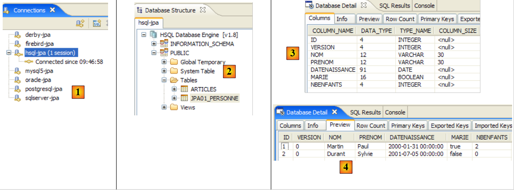 |
- in [1]: the connection with HSQL
- in [2]: the connection tree after executing [InitDB].
- in [3]: the structure of table [jpa01_personne]
- in [4]: its contents.
Once this is done, the reader is prompted to run the [Main] application and then stop SGBD.
2.1.15. Changing the implementation JPA
Let’s revisit the test architecture of our current project:
 |
The previous study showed that we were able to change SGBD to [7] without changing anything in the client code [3]. We are now changing the implementation JPA [6] and demonstrating once again that this is done transparently for the client code [3]. We take an implementation TopLink [http://www.oracle.com/technology/products/ias/toplink/jpa/index.html]:
 |
2.1.15.1. The Eclipse Project
When changing the implementation to JPA, we create a new Eclipse project so as not to clutter the existing project. This is because the new project uses persistence libraries that may conflict with those of Hibernate:
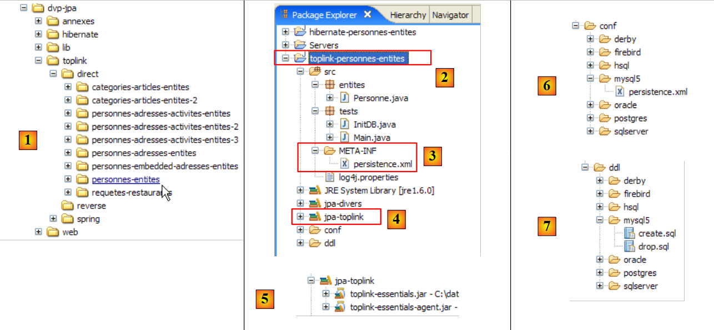 |
- in [1]: the [<exemples>/toplink/direct/personnes-entites] folder contains the Eclipse project. Import it.
- In [2]: the imported [toplink-personnes-entites] project. It is identical (it was created by copying) to the [hibernate-personne-entites] project, with two minor differences:
- the file [META-INF/persistence.xml] [3] now configures a JPA / Toplink layer
- the [jpa-hibernate] library has been replaced by the [jpa-toplink], [4], and [5] libraries (see paragraph 1.5).
- In [6]: The [conf] folder contains a version file for each [persistence.xml] file.
- In [7]: the [ddl] folder, which will contain the SQL scripts for generating the database schema.
2.1.15.2. Configuration of the JPA / Toplink layer ( )
We know that the JPA layer is configured by the [META-INF/persistence.xml] file. This file now configures a JPA / Toplink implementation. Its content for a JPA layer interfaced with SGBD and MySQL5 is as follows:
<?xml version="1.0" encoding="UTF-8"?>
<persistence version="1.0" xmlns="http://java.sun.com/xml/ns/persistence">
<persistence-unit name="jpa" transaction-type="RESOURCE_LOCAL">
<!-- provider -->
<provider>oracle.toplink.essentials.PersistenceProvider</provider>
<!-- persistent classes -->
<class>entites.Personne</class>
<!-- persistence unit properties -->
<properties>
<!-- connection JDBC -->
<property name="toplink.jdbc.driver" value="com.mysql.jdbc.Driver" />
<property name="toplink.jdbc.url" value="jdbc:mysql://localhost:3306/jpa" />
<property name="toplink.jdbc.user" value="jpa" />
<property name="toplink.jdbc.password" value="jpa" />
<property name="toplink.jdbc.read-connections.max" value="3" />
<property name="toplink.jdbc.read-connections.min" value="1" />
<property name="toplink.jdbc.write-connections.max" value="5" />
<property name="toplink.jdbc.write-connections.min" value="2" />
<!-- SGBD -->
<property name="toplink.target-database" value="MySQL4" />
<!-- application server -->
<property name="toplink.target-server" value="None" />
<!-- generation diagram -->
<property name="toplink.ddl-generation" value="drop-and-create-tables" />
<property name="toplink.application-location" value="ddl/mysql5" />
<property name="toplink.create-ddl-jdbc-file-name" value="create.sql" />
<property name="toplink.drop-ddl-jdbc-file-name" value="drop.sql" />
<property name="toplink.ddl-generation.output-mode" value="both" />
<!-- logs -->
<property name="toplink.logging.level" value="OFF" />
</properties>
</persistence-unit>
</persistence>
- line 3: unchanged
- line 5: the provider is now Toplink. The class named here will be found in the [jpa-toplink] library ([1] below):
 |
- line 7: the <class> tag is used to list all @Entity classes in the project; here, only the Person class. Hibernate had a option configuration file that allowed us to avoid listing these classes. It scanned the project’s classpath to find the @Entity classes.
- line 9: the <properties> tag introduces properties specific to the JPA implementation used, in this case Toplink.
- Lines 11–14: Configuration of the JDBC connection with SGBD MySQL5
- Lines 15–18: Configuration of the JDBC connection pool natively managed by Toplink:
- lines 15, 16: maximum and minimum number of connections in the read connection pool. Default (2,2)
- lines 17, 18: maximum and minimum number of connections in the write connection pool. Default (10,2)
- line 20: the target SGBD. The list of usable SGBDs is available in the [oracle.toplink.essentials.platform.database] package (see [2] above). The SGBD MySQL5 is not present in the [2] list, so we chose MySQL4. Toplink supports slightly fewer SGBD than Hibernate. Thus, of the seven SGBD used in our examples, Firebird is not supported. Oracle is also not found in the list. It is actually in another package ([3] above). If, in these two packages, the target SGBD is designated by the <Sgbd>Platform.class class, the tag will be written as:
<property name="toplink.target-database" value="<Sgbd>" />
- Line 22: Sets the application server if the application runs on such a server. Current possible values (None, OC4J_10_1_3, SunAS9). Default (None).
- Lines 24–28: When the JPA layer initializes, it is instructed to clear the database defined by the JDBC connection in lines 11–14. This ensures we start with an empty database.
- Line 24: TopLink is instructed to drop and then create the tables in the database schema
- Line 25: We instruct Toplink to generate the SQL scripts for the drop and create operations. application-location specifies the folder where these scripts will be generated. Default: (current folder).
- Line 26: Name of the SQL script for the create operations. Default: createDDL.jdbc.
- Line 27: Name of the SQL script for drop operations. Default: dropDDL.jdbc.
- Line 28: schema generation mode (Default: both):
- both: scripts and database
- database: database only
- sql-script: scripts only
- line 30: Toplink logs are disabled (OFF). The different login levels available are as follows: OFF, SEVERE, WARNING, INFO, CONFIG, FINE, FINER, FINEST. Default: INFO.
See url and [http://www.oracle.com/technology/products/ias/toplink/JPA/essentials/toplink-jpa-extensions.html] for a comprehensive definition of the <property> tags that can be used with Toplink.
2.1.15.3. Test [InitDB]
There is nothing else to do. We are ready to run the first test [InitDB]:
- run SGBD, here MySQL5
- run [InitDB]
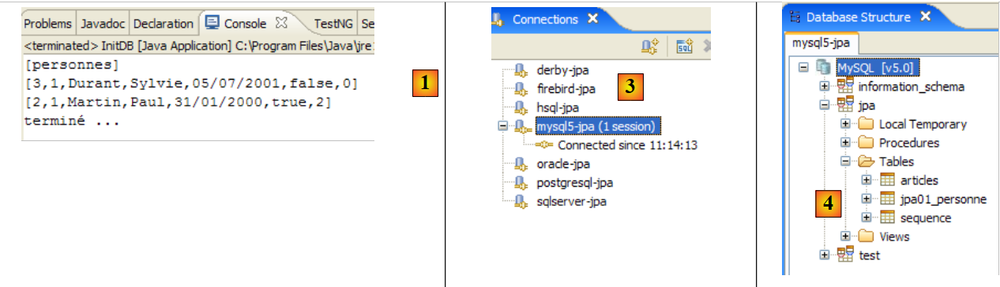 |
- in [1]: the console output. We see the results already obtained with JPA / Hibernate.
- In [3]: Open the view [SQL Explorer], then open the connection [mysql5-jpa]
- In [4]: the jpa database tree. We find that running [InitDB] created two tables: [jpa01_personne], which was expected, and the table [sequence], which was less expected.
 |
- in [5]: the structure of the table [jpa01_personne] and in [6] its contents
- in [7]: the structure of table [sequence] and in [8] its contents.
The configuration file [persistence.xml] requested the generation of scripts from DDL:
<!-- generation diagram -->
<property name="toplink.ddl-generation" value="drop-and-create-tables" />
<property name="toplink.application-location" value="ddl/mysql5" />
<property name="toplink.create-ddl-jdbc-file-name" value="create.sql" />
<property name="toplink.drop-ddl-jdbc-file-name" value="drop.sql" />
<property name="toplink.ddl-generation.output-mode" value="both" />
Let's take a look at what was generated in the [ddl/mysql5] folder:
 |
create.sql
CREATE TABLE jpa01_personne (ID INTEGER NOT NULL, PRENOM VARCHAR(30) NOT NULL, DATENAISSANCE DATE NOT NULL, NOM VARCHAR(30) UNIQUE NOT NULL, MARIE TINYINT(1) default 0 NOT NULL, VERSION INTEGER NOT NULL, NBENFANTS INTEGER NOT NULL, PRIMARY KEY (ID))
CREATE TABLE SEQUENCE (SEQ_NAME VARCHAR(50) NOT NULL, SEQ_COUNT DECIMAL(38), PRIMARY KEY (SEQ_NAME))
INSERT INTO SEQUENCE(SEQ_NAME, SEQ_COUNT) values ('SEQ_GEN', 1)
- Line 1: DDL from the [jpa01_personne] table. We note that Toplink did not use the autoincrement attribute for the primary key ID. As a result, it does not increment automatically when rows are inserted.
- Line 2: DDL from table [sequence]. Its name suggests that Toplink uses this table to generate values for the primary key ID.
- Line 3: Insertion of a single row into [SEQUENCE]
drop.sql
DROP TABLE jpa01_personne
DELETE FROM SEQUENCE WHERE SEQ_NAME = 'SEQ_GEN'
- Line 1: Delete the table [jpa01_personne]
- Line 2: Deletes a specific row from the table [SEQUENCE]. The table itself is not deleted, nor are any other rows it may contain.
To learn more about the role of table [SEQUENCE], enable Toplink logs in [persistence.xml] at level FINE, a level that tracks SQL commands issued by Toplink:
<!-- logs -->
<property name="toplink.logging.level" value="FINE" />
We rerun InitDB. Below, we have included only a partial view of the console output:
...
[TopLink Config]: 2007.05.28 12:07:52.796--ServerSession(12910198)--Connection(30708295)--Thread(Thread[main,5,main])--Connected: jdbc:mysql://localhost:3306/jpa
User: jpa@localhost
Database: MySQL Version: 5.0.37-community-nt
Driver: MySQL-AB JDBC Driver Version: mysql-connector-java-3.1.9 ( $Date: 2005/05/19 15:52:23 $, $Revision: 1.1.2.2 $ )
...
[TopLink Fine]: 2007.05.28 12:07:53.093--ServerSession(12910198)--Connection(19255406)--Thread(Thread[main,5,main])--DROP TABLE jpa01_personne
[TopLink Fine]: 2007.05.28 12:07:53.265--ServerSession(12910198)--Connection(30708295)--Thread(Thread[main,5,main])--CREATE TABLE jpa01_personne (ID INTEGER NOT NULL, PRENOM VARCHAR(30) NOT NULL, DATENAISSANCE DATE NOT NULL, NOM VARCHAR(30) UNIQUE NOT NULL, MARIE TINYINT(1) default 0 NOT NULL, VERSION INTEGER NOT NULL, NBENFANTS INTEGER NOT NULL, PRIMARY KEY (ID))
[TopLink Fine]: 2007.05.28 12:07:53.468--ServerSession(12910198)--Connection(19255406)--Thread(Thread[main,5,main])--CREATE TABLE SEQUENCE (SEQ_NAME VARCHAR(50) NOT NULL, SEQ_COUNT DECIMAL(38), PRIMARY KEY (SEQ_NAME))
[TopLink Warning]: 2007.05.28 12:07:53.468--ServerSession(12910198)--Thread(Thread[main,5,main])--Exception [TOPLINK-4002] (Oracle TopLink Essentials - 2.0 (Build b41-beta2 (03/30/2007))): oracle.toplink.essentials.exceptions.DatabaseException
Internal Exception: java.sql.SQLException: Table 'sequence' already exists
Error Code: 1050
Call: CREATE TABLE SEQUENCE (SEQ_NAME VARCHAR(50) NOT NULL, SEQ_COUNT DECIMAL(38), PRIMARY KEY (SEQ_NAME))
Query: DataModifyQuery()
[TopLink Fine]: 2007.05.28 12:07:53.468--ServerSession(12910198)--Connection(30708295)--Thread(Thread[main,5,main])--DELETE FROM SEQUENCE WHERE SEQ_NAME = 'SEQ_GEN'
[TopLink Fine]: 2007.05.28 12:07:53.609--ServerSession(12910198)--Connection(19255406)--Thread(Thread[main,5,main])--SELECT * FROM SEQUENCE WHERE SEQ_NAME = 'SEQ_GEN'
[TopLink Fine]: 2007.05.28 12:07:53.609--ServerSession(12910198)--Connection(30708295)--Thread(Thread[main,5,main])--INSERT INTO SEQUENCE(SEQ_NAME, SEQ_COUNT) values ('SEQ_GEN', 1)
[TopLink Fine]: 2007.05.28 12:07:53.734--ClientSession(15308417)--Connection(14069849)--Thread(Thread[main,5,main])--delete from jpa01_personne
[TopLink Fine]: 2007.05.28 12:07:53.750--ClientSession(15308417)--Connection(14069849)--Thread(Thread[main,5,main])--UPDATE SEQUENCE SET SEQ_COUNT = SEQ_COUNT + ? WHERE SEQ_NAME = ?
bind => [50, SEQ_GEN]
[TopLink Fine]: 2007.05.28 12:07:53.750--ClientSession(15308417)--Connection(14069849)--Thread(Thread[main,5,main])--SELECT SEQ_COUNT FROM SEQUENCE WHERE SEQ_NAME = ?
bind => [SEQ_GEN]
[personnes]
[TopLink Fine]: 2007.05.28 12:07:53.906--ClientSession(15308417)--Connection(14069849)--Thread(Thread[main,5,main])--INSERT INTO jpa01_personne (ID, PRENOM, DATENAISSANCE, NOM, MARIE, VERSION, NBENFANTS) VALUES (?, ?, ?, ?, ?, ?, ?)
bind => [3, Sylvie, 2001-07-05, Durant, false, 1, 0]
[TopLink Fine]: 2007.05.28 12:07:53.921--ClientSession(15308417)--Connection(14069849)--Thread(Thread[main,5,main])--INSERT INTO jpa01_personne (ID, PRENOM, DATENAISSANCE, NOM, MARIE, VERSION, NBENFANTS) VALUES (?, ?, ?, ?, ?, ?, ?)
bind => [2, Paul, 2000-01-31, Martin, true, 1, 2]
[TopLink Fine]: 2007.05.28 12:07:53.937--ClientSession(15308417)--Connection(14069849)--Thread(Thread[main,5,main])--SELECT ID, PRENOM, DATENAISSANCE, NOM, MARIE, VERSION, NBENFANTS FROM jpa01_personne ORDER BY NOM ASC
[3,1,Durant,Sylvie,05/07/2001,false,0]
[2,1,Martin,Paul,31/01/2000,true,2]
[TopLink Config]: 2007.05.28 12:07:54.062--ServerSession(12910198)--Connection(30708295)--Thread(Thread[main,5,main])--disconnect
[TopLink Info]: 2007.05.28 12:07:54.062--ServerSession(12910198)--Thread(Thread[main,5,main])--file:/C:/data/2006-2007/eclipse/dvp-jpa/toplink/direct/personnes-entites/bin/-jpa logout successful
...
terminé ...
- lines 2-5: a connection to SGBD with its parameters. In fact, the logs show that Toplink actually creates 3 connections to SGBD. We need to check if this number is related to one of the configuration values used for the JDBC connection pool:
<property name="toplink.jdbc.read-connections.max" value="3" />
<property name="toplink.jdbc.read-connections.min" value="1" />
<property name="toplink.jdbc.write-connections.max" value="5" />
<property name="toplink.jdbc.write-connections.min" value="2" />
- Line 7: Deletion of the table [jpa01_personne]. This is normal, since the file [persistence.xml] requests the cleanup of the JPA database.
- line 8: creation of the table [jpa01_personne]. Note that the primary key ID does not have the autoincrement attribute.
- Line 9: Creation of the table [SEQUENCE], which already exists, having been created during the previous run.
- Lines 10–13: Toplink reports an error creating the table [SEQUENCE].
- Lines 15–18: Toplink cleans up the table [SEQUENCE]. After this cleanup, the table [SEQUENCE] has one row (SEQ_NAME, SEQ_COUNT) with the values ('SEQ_GEN', 1).
- Line 18: The table [jpa01_personne] is cleared.
- Lines 19–20: Toplink passes the single row where SEQ_NAME = 'SEQ_GEN' from table [SEQUENCE], from the value ('SEQ_GEN', 1) to the value ('SEQ_GEN', 51)
- line 21: Toplink retrieves the value 51 from the row ('SEQ_GEN', 51) in the table [SEQUENCE].
- lines 24–27: Toplink inserts the two people 'Martin' and 'Durant' into the table [jpa01_personne]. There is a mystery here: the primary keys of these two rows are assigned the values 2 and 3, without any indication of how these values were obtained. It is unclear whether the value SEQ_COUNT (51) obtained in line 21 served any purpose. Note that the value of version for the rows is 1, whereas Hibernate started at 0.
- Line 28: TopLink generates SELECT to retrieve all rows from the [jpa01_personne] table
- Lines 29–30: Rows displayed by the Java client
- Lines 31-32: TopLink closes a connection. It will repeat the operation for each of the connections initially opened.
Ultimately, we do not know exactly what the role of the [SEQUENCE] table is, but it still appears to play a role in generating the values of the ID primary key. By examining the most detailed log level, FINEST, we learn a little more about the role of the [SEQUENCE] table.
<!-- logs -->
<property name="toplink.logging.level" value="FINEST" />
Below, we have included only the logs related to the insertion of the two people into the table. This is where we see the mechanism for generating the primary key values:
- line 4: we see that the number 51 retrieved from table [SEQUENCE] on line 2 is used to delimit a range of values for the primary key: [2,51]
- line 5: the first person is assigned the value 2 for the primary key
- line 8: the second person is assigned the value 3 for the primary key
- line 12: shows the handling of version for the first person
- line 17: same for the second person
The [FINEST] log level also shows the limits of transactions issued by Toplink. Analyzing these logs reveals what Toplink does and is a great way to understand the object-relational bridge.
Key takeaways from the above:
- that different JPA implementations will generate different database schemas. In this example, Hibernate and Toplink did not generate the same schemas.
- that Toplink’s log levels FINE, FINER, and FINEST should be used whenever you want clarification on exactly what Toplink is doing.
2.1.15.4. Test [Main]
We are now running test [Main]:
 |
- in [1]: all tests pass except test 11 [2]
- in [3]: line 376, the line of code where the exception occurred
The code that throws the exception is as follows:
} catch (RuntimeException e1) {
// we had a problem
System.out.format("Erreur dans transaction [%s,%s,%s,%s,%s,%s]%n", e1.getClass().getName(), e1.getMessage(),
e1.getCause().getClass().getName(), e1.getCause().getMessage(), e1.getCause().getCause().getClass().getName(), e1.getCause().getCause()
.getMessage());
try {
...
- line [3]: the line of the exception. We have a NullPointerException, which suggests that one of the getCause methods on lines 4 and 5 returned a null pointer. An expression such as [e1.getCause().getCause()] assumes that the exception chain has 3 elements [e1.getCause().getCause(), e1.getCause(), e1]. If it has only two, the first expression will cause an exception.
We change the previous code so that it displays only the last two exceptions in the exception chain:
} catch (RuntimeException e1) {
// we had a problem
System.out.format("Erreur dans transaction [%s,%s,%s,%s,]%n", e1.getClass().getName(), e1.getMessage(),
e1.getCause().getClass().getName(), e1.getCause().getMessage());
try {
...
Upon execution, we then get the following result:
...
[personnes]
[2,5,Martin,Paul,31/01/2000,false,6]
main : ----------- test11
[personnes]
Erreur dans transaction [javax.persistence.OptimisticLockException,Exception [TOPLINK-5006] (Oracle TopLink Essentials - 2.0 (Build b41-beta2 (03/30/2007))): oracle.toplink.essentials.exceptions.OptimisticLockException
Exception Description: The object [[2,6,Martin,Paul,31/01/2000,false,7]] cannot be updated because it has changed or been deleted since it was last read.
Class> entites.Personne Primary Key> [2],oracle.toplink.essentials.exceptions.OptimisticLockException,
Exception Description: The object [[2,6,Martin,Paul,31/01/2000,false,7]] cannot be updated because it has changed or been deleted since it was last read.
Class> entites.Personne Primary Key> [2],]
[personnes]
[2,5,Martin,Paul,31/01/2000,false,6]
This time, test 11 passes. The exception logs (lines 6–10) were generated by the Java code (line 3 of the code above). Recall that test 11 chained together, within a single transaction, several SQL operations, one of which failed and was expected to trigger a transaction rollback. The states of the [jpa01_personne] table before (line 3) and after the test (line 12) are identical, showing that the rollback occurred.
It is important to note here that the JPA / Hibernate and JPA / Toplink implementations are not 100% interchangeable. In this example, we need to change the code for the JPA client to avoid a NullPointerException. We will encounter this issue again later in the context of an exception.
2.1.16. Change from SGBD to JPA / Toplink
Let’s revisit the test architecture of our current project:
 |
Previously, the SGBD used in [7] was MySQL5. We’ll show you how to change from SGBD using Oracle. In any case, the change to be made in the Eclipse project is simple (see below): replace the persistence.xml [1] configuration file for the JPA layer with one of those in the conf ([2] and [3]) in the project.
 |
2.1.16.1. Oracle 10g Express
Oracle 10g Express is presented in the Appendices in section 5.7. The Oracle persistence.xml file for Toplink is as follows:
<?xml version="1.0" encoding="UTF-8"?>
<persistence version="1.0" xmlns="http://java.sun.com/xml/ns/persistence">
<persistence-unit name="jpa" transaction-type="RESOURCE_LOCAL">
<!-- provider -->
<provider>oracle.toplink.essentials.PersistenceProvider</provider>
<!-- persistent classes -->
<class>entites.Personne</class>
<!-- persistence unit properties -->
<properties>
<!-- connection JDBC -->
<property name="toplink.jdbc.driver" value="oracle.jdbc.OracleDriver" />
<property name="toplink.jdbc.url" value="jdbc:oracle:thin:@localhost:1521:xe" />
<property name="toplink.jdbc.user" value="jpa" />
<property name="toplink.jdbc.password" value="jpa" />
<property name="toplink.jdbc.read-connections.max" value="3" />
<property name="toplink.jdbc.read-connections.min" value="1" />
<property name="toplink.jdbc.write-connections.max" value="5" />
<property name="toplink.jdbc.write-connections.min" value="2" />
<!-- SGBD -->
<property name="toplink.target-database" value="Oracle" />
<!-- application server -->
<property name="toplink.target-server" value="None" />
<!-- generation diagram -->
<property name="toplink.ddl-generation" value="drop-and-create-tables" />
<property name="toplink.application-location" value="ddl/oracle" />
<property name="toplink.create-ddl-jdbc-file-name" value="create.sql" />
<property name="toplink.drop-ddl-jdbc-file-name" value="drop.sql" />
<property name="toplink.ddl-generation.output-mode" value="both" />
<!-- logs -->
<property name="toplink.logging.level" value="OFF" />
</properties>
</persistence-unit>
</persistence>
This configuration is identical to that for SGBD and MySQL5, with the following minor differences:
- lines 11–14, which configure the JDBC connection to the database
- line 20: which sets the target SGBD
- line 25: which sets the script generation folder for SQL from DDL
To run the [InitDB] test:
- run the Oracle SGBD
- place conf/oracle/persistence.xml in META-INF/persistence.xml
- run the [InitDB] application
The following results are displayed on the console and in the [SQL Explorer] perspective:
 |
- [1]: the console display
- [2]: the [oracle-jpa] connection in SQL Explorer
- [3]: the jpa database
- [4]: InitDB created two tables: JPA01_PERSONNE and SEQUENCE, as with MySQL5. Sometimes in [4], [BIN*] tables appear. These correspond to deleted tables. To observe this phenomenon, simply re-run [InitDB]. The initialization phase of the JPA layer includes a cleanup of the jpa database during which the [JPA01_PERSONNE] table is deleted:
 |
In [A], a table named [BIN] appears. Oracle does not permanently delete a table that has been dropped but places it in a recycle bin ([Recycle Bin]). This recycle bin is visible ([B]) using the SQL Developer tool described in section 5.7.4. In [B], you can purge the table [JPA01_PERSONNE] that is in the recycle bin. This empties the recycle bin [C]. If you refresh the tables in SQL Explorer (right-click / Refresh), you will see that the table BIN is no longer there ([D]).
- [5, 6]: the structure and content of table [JPA01_PERSONNE]
- [7, 8]: the structure and content of table [SEQUENCE]
There you go! The reader is now invited to run the [Main] application on Oracle.
2.1.16.2. The other SGBD
We will not go into much detail about the other SGBD files. Simply follow the same procedure used for Oracle. Note the following points:
- Regardless of the SGBD, Toplink always uses the same technique to generate the primary key values ID for the table [JPA01_PERSONNE]: it uses the table [SEQUENCE] described above.
- Toplink does not recognize the Firebird SGBD. There is a generic database for such cases:
With this generic base table named [Auto], tests with Firebird fail due to SQL syntax errors. Toplink uses a ID primary key, a SQL Number(10) type that Firebird does not recognize. You must therefore choose a SGBD with the same types as Firebird (for this example). This is the case with Apache Derby:
<!-- connection JDBC -->
<property name="toplink.jdbc.driver" value="org.firebirdsql.jdbc.FBDriver" />
...
<!-- SGBD -->
<!--
TopLink ne reconnaît pas Firebird pour l'instant (05/07). Derby is a suitable replacement.
-->
<property name="toplink.target-database" value="Derby" />
...
- TopLink cannot generate the original database schema for SGBD and HSQLDB. That is, the directive:
<!-- generation diagram -->
<property name="toplink.ddl-generation" value="drop-and-create-tables" />
fails for HSQLDB. The cause is a syntax error when creating the table [jpa01_personne]:
[TopLink Fine]: 2007.05.29 09:44:18.515--ServerSession(12910198)--Connection(29775659)--Thread(Thread[main,5,main])--DROP TABLE jpa01_personne
[TopLink Fine]: 2007.05.29 09:44:18.531--ServerSession(12910198)--Connection(29775659)--Thread(Thread[main,5,main])--CREATE TABLE jpa01_personne (ID INTEGER NOT NULL, PRENOM VARCHAR(30) NOT NULL, DATENAISSANCE DATE NOT NULL, NOM VARCHAR(30) UNIQUE NOT NULL, MARIE TINYINT NOT NULL, VERSION INTEGER NOT NULL, NBENFANTS INTEGER NOT NULL, PRIMARY KEY (ID))
[TopLink Warning]: 2007.05.29 09:44:18.531--ServerSession(12910198)--Thread(Thread[main,5,main])--Exception [TOPLINK-4002] (Oracle TopLink Essentials - 2.0 (Build b41-beta2 (03/30/2007))): oracle.toplink.essentials.exceptions.DatabaseException
Internal Exception: java.sql.SQLException: Unexpected token: UNIQUE in statement [CREATE TABLE jpa01_personne (ID INTEGER NOT NULL, PRENOM VARCHAR(30) NOT NULL, DATENAISSANCE DATE NOT NULL, NOM VARCHAR(30) UNIQUE]
Line 4, syntax NOM VARCHAR(30) UNIQUE NOT NULL is not accepted by HSQL. Hibernate had used the syntax: NOM VARCHAR(30) NOT NULL, UNIQUE(NOM).
In general, Hibernate was more effective than Toplink at recognizing the SGBD used in the tests in this document.
2.1.17. Conclusion
The study of the @Entity [Personne] ends here. From a conceptual standpoint, not much has been done: we have examined the object-relational bridge in its simplest form: an @Entity object <--> a table. However, this examination has allowed us to introduce the tools we will use throughout the document. This will enable us to proceed a bit more quickly from here on in as we examine the other cases of the object-relational bridge:
- to the previous @Entity [Personne], we will add an address field modeled by a class [Adresse]. On the database side, we will look at two possible implementations. The [Personne] and [Adresse] objects result in
- a single table [personne] containing the address
- two tables, [personne] and [adresse], linked by a one-to-one foreign key relationship.
- an example of a one-to-many relationship where a table [article] is linked to a table [categorie] via a foreign key
- An example of a many-to-many relationship where two tables, [personne] and [activite], are linked by a join table [personne_activite].
2.2. Example 2: One-to-one relationship via an inclusion
2.2.1. The database schema
1  | 2 |
- in [1]: the database (Azurri Clay plugin)
- in [2]: the DDL generated by Hibernate for MySQL5
The [jpa02_personne] table is the [jpa01_personne] table examined previously, to which an address has been added (lines 12–18 of DDL).
2.2.2. The @Entity objects representing the database
A person's address will be represented by the following [Adresse] class:
package entites;
...
@SuppressWarnings("serial")
@Embeddable
public class Adresse implements Serializable {
// fields
@Column(length = 30, nullable = false)
private String adr1;
@Column(length = 30)
private String adr2;
@Column(length = 30)
private String adr3;
@Column(length = 5, nullable = false)
private String codePostal;
@Column(length = 20, nullable = false)
private String ville;
@Column(length = 3)
private String cedex;
@Column(length = 20, nullable = false)
private String pays;
// manufacturers
public Adresse() {
}
public Adresse(String adr1, String adr2, String adr3, String codePostal, String ville, String cedex, String pays) {
...
}
// getters and setters
...
// toString
public String toString() {
return String.format("A[%s,%s,%s,%s,%s,%s,%s]", getAdr1(), getAdr2(), getAdr3(), getCodePostal(), getVille(), getCedex(), getPays());
}
}
- The main innovation lies in the @Embeddable annotation on line 5. The [Adresse] class is not intended to create a table, so it does not have the @Entity annotation. The @Embeddable annotation indicates that the class is intended to be embedded within an @Entity object and thus within the table associated with it. This is why, in the database schema, the [Adresse] class does not appear as a separate table, but as part of the table associated with the @Entity [Personne].
The @Entity [Personne] has changed little from its predecessor, version: an address field has simply been added:
package entites;
...
@Entity
@Table(name = "jpa02_hb_personne")
public class Personne implements Serializable{
@Id
@Column(nullable = false)
@GeneratedValue(strategy = GenerationType.AUTO)
private Long id;
@Column(nullable = false)
@Version
private int version;
@Column(length = 30, nullable = false, unique = true)
private String nom;
@Column(length = 30, nullable = false)
private String prenom;
@Column(nullable = false)
@Temporal(TemporalType.DATE)
private Date datenaissance;
@Column(nullable = false)
private boolean marie;
@Column(nullable = false)
private int nbenfants;
@Embedded
private Adresse adresse;
// manufacturers
public Personne() {
}
...
}
- The change occurs on lines 33–34. The [Personne] object now has an address field of type Address. That’s for the POJO. The @Embedded annotation is intended for the object-relational bridge. It indicates that the [Adresse adresse] field must be encapsulated in the same table as the [Personne] object.
2.2.3. The Test Environment
We will perform tests very similar to those discussed previously. They will be conducted in the following context:
 |
The implementation used is JPA / Hibernate [6]. The Eclipse test project is as follows:
 |
The Eclipse project [1] differs from the previous one only in its Java code [2]. The environment (libraries – persistence.xml – DBMS – conf and DDL folders – Ant script) is the one already discussed previously, particularly in Section 2.1.5. This will remain the case for future Hibernate projects, and, barring exceptions, we will not revisit this environment. In particular, the persistence.xml files that configure the JPA/Hibernate layer for various SGBD files are the ones already discussed and are located in the <conf> folder.
If the reader has any doubts about the procedures to follow, they are encouraged to review those covered in the previous study.
The Eclipse project is located in the [3] folder within the [4] examples folder. We will import it.
2.2.4. Generating the DDL from the database
Following the instructions in section 2.1.7, the DDL obtained for the SGBD MySQL5 is as follows:
drop table if exists jpa02_hb_personne;
create table jpa02_hb_personne (
id bigint not null auto_increment,
version integer not null,
nom varchar(30) not null unique,
prenom varchar(30) not null,
datenaissance date not null,
marie bit not null,
nbenfants integer not null,
adr1 varchar(30) not null,
adr2 varchar(30),
adr3 varchar(30),
codePostal varchar(5) not null,
ville varchar(20) not null,
cedex varchar(3),
pays varchar(20) not null,
primary key (id)
) ENGINE=InnoDB;
Hibernate correctly recognized that the person's address needed to be included in the table associated with the @Entity Person (lines 11–17).
2.2.5. InitDB
The code for [InitDB] is as follows:
package tests;
...
public class InitDB {
// constants
private final static String TABLE_NAME = "jpa02_hb_personne";
public static void main(String[] args) throws ParseException {
// Persistence context
EntityManagerFactory emf = Persistence.createEntityManagerFactory("jpa");
EntityManager em = null;
// a EntityManager is retrieved from the previous EntityManagerFactory
em = emf.createEntityManager();
// start of transaction
EntityTransaction tx = em.getTransaction();
tx.begin();
// request
Query sql1;
// delete elements from the PERSONNE table
sql1 = em.createNativeQuery("delete from " + TABLE_NAME);
sql1.executeUpdate();
// creating people
Personne p1 = new Personne("Martin", "Paul", new SimpleDateFormat("dd/MM/yy").parse("31/01/2000"), true, 2);
Personne p2 = new Personne("Durant", "Sylvie", new SimpleDateFormat("dd/MM/yy").parse("05/07/2001"), false, 0);
// address creation
Adresse a1 = new Adresse("8 rue Boileau", null, null, "49000", "Angers", null, "France");
Adresse a2 = new Adresse("Apt 100", "Les Mimosas", "15 av Foch", "49002", "Angers", "03", "France");
// associations person <--> address
p1.setAdresse(a1);
p2.setAdresse(a2);
// persistence of people
em.persist(p1);
em.persist(p2);
// people display
System.out.println("[personnes]");
for (Object p : em.createQuery("select p from Personne p order by p.nom asc").getResultList()) {
System.out.println(p);
}
// end transaction
tx.commit();
// end EntityManager
em.close();
// end EntityManagerFactory
emf.close();
// log
System.out.println("terminé...");
}
}
There is nothing new in this code. Everything has already been covered. Running [InitDB] with MySQL5 yields the following results:
 |
 |
- [1]: console output
- [2]: the [jpa02_hb_personne] table in the SQL Explorer view
- [3] and [4]: its structure and content.
2.2.6. Main
The [Main] class is as follows:
package tests;
...
import entites.Adresse;
import entites.Personne;
@SuppressWarnings( { "unused", "unchecked" })
public class Main {
// constants
private final static String TABLE_NAME = "jpa02_hb_personne";
// Persistence context
private static EntityManagerFactory emf = Persistence.createEntityManagerFactory("jpa");
private static EntityManager em = null;
// shared objects
private static Personne p1, p2, newp1;
private static Adresse a1, a2, a3, a4, newa1, newa4;
public static void main(String[] args) throws Exception {
// we retrieve a EntityManager from the EntityManagerFactory
em = emf.createEntityManager();
// base cleaning
log("clean");clean();
// dump table
dumpPersonne();
// test1
log("test1"); test1();
// test2
log("test2"); test2();
// test3
log("test3"); test3();
// test4
log("test4"); test4();
// test5
log("test5");test5();
// fine persistence context
if (em != null && em.isOpen())
em.close();
// closure EntityManagerFactory
emf.close();
}
// retrieve the current EntityManager
private static EntityManager getEntityManager() {
...
}
// pick up a new EntityManager
private static EntityManager getNewEntityManager() {
...
}
// display table content Person
private static void dumpPersonne() {
...
}
// raz BD
private static void clean() {
...
}
// logs
private static void log(String message) {
...
}
// object creation
public static void test1() throws ParseException {
// persistence context
EntityManager em = getEntityManager();
// creating people
p1 = new Personne("Martin", "Paul", new SimpleDateFormat("dd/MM/yy").parse("31/01/2000"), true, 2);
p2 = new Personne("Durant", "Sylvie", new SimpleDateFormat("dd/MM/yy").parse("05/07/2001"), false, 0);
// address creation
a1 = new Adresse("8 rue Boileau", null, null, "49000", "Angers", null, "France");
a2 = new Adresse("Apt 100", "Les Mimosas", "15 av Foch", "49002", "Angers", "03", "France");
// associations person <--> address
p1.setAdresse(a1);
p2.setAdresse(a2);
// start of transaction
EntityTransaction tx = em.getTransaction();
tx.begin();
// persistence of people
em.persist(p1);
em.persist(p2);
// end transaction
tx.commit();
// dump
dumpPersonne();
}
// modify a context object
public static void test2() {
// persistence context
EntityManager em = getEntityManager();
// start of transaction
EntityTransaction tx = em.getTransaction();
tx.begin();
// increment the number of children in p1
p1.setNbenfants(p1.getNbenfants() + 1);
// change your marital status
p1.setMarie(false);
// object p1 is automatically saved (dirty checking)
// at next synchronization (commit or select)
// end transaction
tx.commit();
// the new table is displayed
dumpPersonne();
}
// delete an object belonging to the persistence context
public static void test4() {
// persistence context
EntityManager em = getEntityManager();
// start of transaction
EntityTransaction tx = em.getTransaction();
tx.begin();
// delete attached object p2
em.remove(p2);
// end transaction
tx.commit();
// the new table is displayed
dumpPersonne();
}
// detach, reattach and modify
public static void test5() {
// new persistence context
EntityManager em = getNewEntityManager();
// start of transaction
EntityTransaction tx = em.getTransaction();
tx.begin();
// reattach p1 to the new context
p1 = em.find(Personne.class, p1.getId());
// end transaction
tx.commit();
// change p1's address
p1.getAdresse().setVille("Paris");
// the new table is displayed
dumpPersonne();
}
}
Again, nothing we haven't seen before. The console output is as follows:
The reader is invited to make the connection between the results and the code.
2.2.7. Implementation JPA / Toplink
We are now using a JPA / Toplink implementation:
 |
The new Eclipse test project is as follows:
 |
The Java code is identical to that of the previous Hibernate project. The environment (libraries – persistence.xml – DBMS – conf and ddl folders – Ant script) is the one already discussed in Section 2.1.15.2. This will remain the case for future Toplink projects, and, barring exceptions, we will not revisit this environment. In particular, the persistence.xml files that configure the JPA/Toplink layer for different SGBD instances are the ones already discussed and are located in the <conf> folder.
If the reader has any doubts about the procedures to follow, they are invited to review those covered in the previous study.
The Eclipse project is located in the [3] folder within the [4] examples folder. We will import it.
Running [InitDB] with SGBD and MySQL5 yields the following results:
 |
 |
- [1]: console output
- [2]: Tables [jpa02_tl_personne] and [SEQENCE] in the SQL Explorer view
- [3] and [4]: the structure and content of [jpa02_tl_personne].
The SQL scripts generated in ddl/mysql5 [5] are as follows:
create.sql
CREATE TABLE jpa02_tl_personne (ID BIGINT NOT NULL, PRENOM VARCHAR(30) NOT NULL, DATENAISSANCE DATE NOT NULL, VERSION INTEGER NOT NULL, MARIE TINYINT(1) default 0 NOT NULL, NBENFANTS INTEGER NOT NULL, NOM VARCHAR(30) UNIQUE NOT NULL, CODEPOSTAL VARCHAR(5) NOT NULL, ADR1 VARCHAR(30) NOT NULL, VILLE VARCHAR(20) NOT NULL, ADR3 VARCHAR(30), CEDEX VARCHAR(3), ADR2 VARCHAR(30), PAYS VARCHAR(20) NOT NULL, PRIMARY KEY (ID))
CREATE TABLE SEQUENCE (SEQ_NAME VARCHAR(50) NOT NULL, SEQ_COUNT DECIMAL(38), PRIMARY KEY (SEQ_NAME))
INSERT INTO SEQUENCE(SEQ_NAME, SEQ_COUNT) values ('SEQ_GEN', 1)
drop.sql
DROP TABLE jpa02_tl_personne
DELETE FROM SEQUENCE WHERE SEQ_NAME = 'SEQ_GEN'
2.3. Example 3: One-to-one relationship via a foreign key
2.3.1. The database schema
1 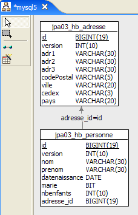 | 2 |
- in [1]: the database. This time, the person's address is stored in a dedicated table, [adresse]. The table [personne] is linked to this table via a foreign key.
- in [2]: the DDL generated by Hibernate for MySQL5:
- lines 9–20: the table [adresse], which will be linked to the class [Adresse], now an @Entity object.
- line 10: the primary key of the [adresse] table
- line 30: instead of a full address, the table [personne] now contains the identifier [adresse_id] for that address.
- Lines 34–38: person (adresse_id) is a foreign key on address (id).
2.3.2. The @Entity objects representing the database
A person with an address is now represented by the following class [Personne]:
package entites;
...
@Entity
@Table(name = "jpa03_hb_personne")
public class Personne implements Serializable{
@Id
@Column(nullable = false)
@GeneratedValue(strategy = GenerationType.AUTO)
private Long id;
@Column(nullable = false)
@Version
private int version;
@Column(length = 30, nullable = false, unique = true)
private String nom;
@Column(length = 30, nullable = false)
private String prenom;
@Column(nullable = false)
@Temporal(TemporalType.DATE)
private Date datenaissance;
@Column(nullable = false)
private boolean marie;
@Column(nullable = false)
private int nbenfants;
@OneToOne(cascade = CascadeType.ALL, fetch=FetchType.LAZY)
@JoinColumn(name = "adresse_id", unique = true, nullable = false)
private Adresse adresse;
...
}
- lines 32–34: the person’s address
- line 32: the @OneToOne annotation denotes a one-to-one relationship: a person has at least one and at most one address. The cascade attribute = CascadeType.ALL means that any operation (persist, merge, remove) on the @Entity [Personne] must be cascaded to the @Entity [Adresse]. From the perspective of the persistence context em, this means the following. If p is a person and has an address:
- an explicit em.persist(p) operation will trigger an implicit em.persist(a) operation
- an explicit em.merge(p) operation will trigger an implicit em.merge(a) operation
- An explicit em.remove(p) operation will result in an implicit em.remove(a) operation
- line 32: the @OneToOne annotation denotes a one-to-one relationship: a person has at least one and at most one address. The cascade attribute = CascadeType.ALL means that any operation (persist, merge, remove) on the @Entity [Personne] must be cascaded to the @Entity [Adresse]. From the perspective of the persistence context em, this means the following. If p is a person and has an address:
Experience shows that these implicit cascades are not a panacea. Developers eventually forget what they do. Explicit operations in the code may be preferred. There are different types of cascade. The @OneToOne annotation could have been written as follows:
//@OneToOne(cascade = CascadeType.ALL, fetch=FetchType.LAZY)
@OneToOne(cascade = {CascadeType.MERGE, CascadeType.PERSIST, CascadeType.REFRESH, CascadeType.REMOVE}, fetch=FetchType.LAZY)
The cascade attribute accepts an array of constants specifying the desired cascade types.
The fetch=FetchType.LAZY attribute instructs Hibernate to load the dependency at the last moment. When placing a list of people into the persistence context, you may not necessarily want to include their addresses. For example, you might only want that address for a specific person selected by a user through a web interface. The fetch=FetchType.EAGER attribute, on the other hand, requests that dependencies be loaded immediately.
- (continued)
- line 33: the @JoinColumn annotation defines the foreign key that the @Entity [Personne] table has on the @Entity [Adresse] table. The name attribute defines the name of the column that serves as the foreign key. The unique=true attribute enforces a one-to-one relationship: the same value cannot appear twice in the [adresse_id] column. The nullable=false attribute enforces that a person must have an address.
A person's address is now represented by the following @Entity [Adresse]:
package entites;
...
@Entity
@Table(name = "jpa03_hb_adresse")
public class Adresse implements Serializable {
// fields
@Id
@Column(nullable = false)
@GeneratedValue(strategy = GenerationType.AUTO)
private Long id;
@Column(nullable = false)
@Version
private int version;
@Column(length = 30, nullable = false)
private String adr1;
@Column(length = 30)
private String adr2;
@Column(length = 30)
private String adr3;
@Column(length = 5, nullable = false)
private String codePostal;
@Column(length = 20, nullable = false)
private String ville;
@Column(length = 3)
private String cedex;
@Column(length = 20, nullable = false)
private String pays;
@OneToOne(mappedBy = "adresse", fetch=FetchType.LAZY)
private Personne personne;
// manufacturers
public Adresse() {
}
...
}
- line 4: the [Adresse] class becomes an @Entity object. It will therefore be the subject of a table in the database.
- lines 9–12: Like any @Entity object, [Adresse] has a primary key. It has been named Id and has the same (standard) annotations as the primary key Id of the @Entity [Personne].
- Lines 39–40: the one-to-one relationship with the @Entity [Personne]. There are several subtleties here:
- First, the person field is not required. It allows us to trace back from an address to the single person with that address. If we did not want this convenience, the person field would not exist, and everything would still work.
- The one-to-one relationship linking the two entities [Personne] and [Adresse] has already been configured in the @Entity [Personne]:
@OneToOne(cascade = CascadeType.ALL, fetch=FetchType.LAZY)
@JoinColumn(name = "adresse_id", unique = true, nullable = false)
private Adresse adresse;
To prevent the two one-to-one configurations from conflicting with each other, one is considered the primary relationship and the other the inverse relationship. It is the primary relationship that is managed by the object-relational bridge. The other relationship, known as the inverse relationship, is not managed directly; it is managed indirectly through the primary relationship. In @Entity [Adresse]:
@OneToOne(mappedBy = "adresse", fetch=FetchType.LAZY)
private Personne personne;
it is the mappedBy attribute that makes the one-to-one relationship above the inverse of the primary one-to-one relationship defined by the address field of @Entity [Personne].
2.3.3. The Eclipse / Hibernate 1 project
The JPA implementation used here is the Hibernate implementation. The Eclipse test project is as follows:
 |
The project is named [3] and is located in the [4] examples folder. We will import it.
2.3.4. Generating the DDL from the database
Following the instructions in section 2.1.7, the DDL obtained for the SGBD MySQL5 is the one shown at the beginning of this section.
2.3.5. InitDB
The code for [InitDB] is as follows:
package tests;
...
import entites.Adresse;
import entites.Personne;
public class InitDB {
// constants
private final static String TABLE_PERSONNE = "jpa03_hb_personne";
private final static String TABLE_ADRESSE = "jpa03_hb_adresse";
public static void main(String[] args) throws ParseException {
// Persistence context
EntityManagerFactory emf = Persistence.createEntityManagerFactory("jpa");
EntityManager em = null;
// a EntityManager is retrieved from the previous EntityManagerFactory
em = emf.createEntityManager();
// start of transaction
EntityTransaction tx = em.getTransaction();
tx.begin();
// request
Query sql1;
// delete elements from the PERSONNE table
sql1 = em.createNativeQuery("delete from " + TABLE_PERSONNE);
sql1.executeUpdate();
// delete elements from the ADRESSE table
sql1 = em.createNativeQuery("delete from " + TABLE_ADRESSE);
sql1.executeUpdate();
// creating people
Personne p1 = new Personne("Martin", "Paul", new SimpleDateFormat("dd/MM/yy").parse("31/01/2000"), true, 2);
Personne p2 = new Personne("Durant", "Sylvie", new SimpleDateFormat("dd/MM/yy").parse("05/07/2001"), false, 0);
// address creation
Adresse a1 = new Adresse("8 rue Boileau", null, null, "49000", "Angers", null, "France");
Adresse a2 = new Adresse("Apt 100", "Les Mimosas", "15 av Foch", "49002", "Angers", "03", "France");
Adresse a3 = new Adresse("x", "x", "x", "x", "x", "x", "x");
Adresse a4 = new Adresse("y", "y", "y", "y", "y", "y", "y");
// associations person <--> address
p1.setAdresse(a1);
a1.setPersonne(p1);
p2.setAdresse(a2);
a2.setPersonne(p2);
// persistence of persons and cascading of their addresses
em.persist(p1);
em.persist(p2);
// and a3 and a4 addresses not linked to persons
em.persist(a3);
em.persist(a4);
// people display
System.out.println("[personnes]");
for (Object p : em.createQuery("select p from Personne p order by p.nom asc").getResultList()) {
System.out.println(p);
}
// address display
System.out.println("[adresses]");
for (Object a : em.createQuery("select a from Adresse a").getResultList()) {
System.out.println(a);
}
// end transaction
tx.commit();
// end EntityManager
em.close();
// end EntityManagerFactory
emf.close();
// log
System.out.println("terminé...");
}
}
We will only comment on what is new compared to what has already been covered:
- lines 31-32: we create two people
- lines 34–37: we create four addresses
- lines 39-42: we associate the people (p1, p2) with the addresses (a1, a2). The addresses (a3, a4) are orphaned. No person references them. The DDL schema allows this. While a person must have an address, the reverse is not true.
- lines 44-45: we persist the people (p1, p2). Since we set a cascade attribute = CascadeType.ALL on the one-to-one relationship linking a person to their address, the addresses (a1, a2) of these two people should also be persisted. This is what we want to verify. For the orphaned addresses (a3, a4), we are forced to handle them explicitly (lines 47–48).
- lines 51–53: display of the people table
- lines 56–57: display the addresses table
Running [InitDB] with MySQL5 yields the following results:
 |
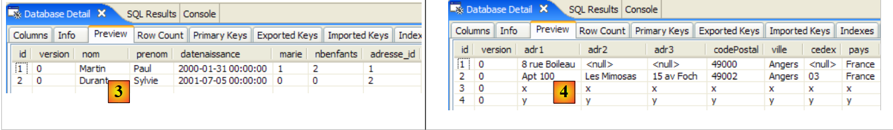 |
- [1]: console output
- [2]: the tables [jpa03_hb_*] in the SQL Explorer view
- [3]: the people table
- [4]: the addresses table. They are all there. Note also the relationship between column [adresse_id] in [3] and column [id] in [4] (foreign key).
2.3.6. Main
The [Main] class contains six tests, which we will review.
2.3.6.1. Test1
This test is as follows:
// object creation
public static void test1() throws ParseException {
// persistence context
EntityManager em = getEntityManager();
// creating people
p1 = new Personne("Martin", "Paul", new SimpleDateFormat("dd/MM/yy").parse("31/01/2000"), true, 2);
p2 = new Personne("Durant", "Sylvie", new SimpleDateFormat("dd/MM/yy").parse("05/07/2001"), false, 0);
// address creation
a1 = new Adresse("8 rue Boileau", null, null, "49000", "Angers", null, "France");
a2 = new Adresse("Apt 100", "Les Mimosas", "15 av Foch", "49002", "Angers", "03", "France");
a3 = new Adresse("x", "x", "x", "x", "x", "x", "x");
a4 = new Adresse("y", "y", "y", "y", "y", "y", "y");
// associations person <--> address
p1.setAdresse(a1);
a1.setPersonne(p1);
p2.setAdresse(a2);
a2.setPersonne(p2);
// start of transaction
EntityTransaction tx = em.getTransaction();
tx.begin();
// persistence of people
em.persist(p1);
em.persist(p2);
// and a3 and a4 addresses not linked to persons
em.persist(a3);
em.persist(a4);
// end transaction
tx.commit();
// tables are displayed
dumpPersonne();
dumpAdresse();
}
This code is taken from [InitDB]. The result is as follows:
Both tables have been filled.
2.3.6.2. Test2
This test is as follows:
// modify a context object
public static void test2() {
// persistence context
EntityManager em = getEntityManager();
// start of transaction
EntityTransaction tx = em.getTransaction();
tx.begin();
// increment the number of children in p1
p1.setNbenfants(p1.getNbenfants() + 1);
// change your marital status
p1.setMarie(false);
// object p1 is automatically saved (dirty checking)
// at next synchronization (commit or select)
// end transaction
tx.commit();
// the new table is displayed
dumpPersonne();
}
The result is as follows:
- line 4: person p1 saw their number of children increase by 1, and their version change from 0 to 1
2.3.6.3. Test4
This test is as follows:
// delete an object belonging to the persistence context
public static void test4() {
// persistence context
EntityManager em = getEntityManager();
// start of transaction
EntityTransaction tx = em.getTransaction();
tx.begin();
// delete attached object p2
em.remove(p2);
// end transaction
tx.commit();
// display the new tables
dumpPersonne();
dumpAdresse();
}
- Line 9: We delete the person p2. This person has a cascade relationship with the address a2. Therefore, the address a2 should also be deleted.
The result of test 4 is as follows:
- The person p2 in line 3 of test 1 is no longer present in test 4
- The same applies to their address a2, which appears in line 7 of test 1 but is absent from test 4.
2.3.6.4. Test5
This test is as follows:
// detach, reattach and modify
public static void test5() {
// new persistence context
EntityManager em = getNewEntityManager();
// start of transaction
EntityTransaction tx = em.getTransaction();
tx.begin();
// reattach p1 to the new context
p1 = em.find(Personne.class, p1.getId());
// change p1's address
p1.getAdresse().setVille("Paris");
// end transaction
tx.commit();
// display the new tables
dumpPersonne();
dumpAdresse();
}
- Line 4: We have a new persistence context, so it is empty.
- line 9: we put the person p1 into it. p1 is looked up in the database because it is not in the context. The elements dependent on p1 (its address) are not fetched from the database because we wrote:
@OneToOne(..., fetch=FetchType.LAZY)
This is the concept of "lazy loading": the dependencies of a persistent object are only loaded into memory when they are needed.
- Line 11: We modify the city field of p1’s address. Because of getAdresse, and if p1’s address was not already in the persistence context, it will be fetched from the database.
- Line 13: The transaction is committed, which will synchronize the persistence context with the database. The database will detect that the address of person p1 has been modified and will save it.
Running test5 yields the following results:
- Person p1 (line 3 of test4, line 10 of test5) did indeed see their city change from Angers (line 5 of test4) to Paris (line 12 of test5).
2.3.6.5. Test6
This test is as follows:
// delete an Address object
public static void test6() {
EntityTransaction tx = null;
// new persistence context
EntityManager em = getNewEntityManager();
// start of transaction
tx = em.getTransaction();
tx.begin();
// reattach address a3 to new context
a3 = em.find(Adresse.class, a3.getId());
System.out.println(a3);
// we delete it
em.remove(a3);
// end transaction
tx.commit();
// dump table Address
dumpAdresse();
}
- line 5: we are in a new persistence context, so it is empty.
- line 10: we put the address a3 into the persistence context
- line 13: we delete it. It was an orphaned address (not linked to a person). Deletion is therefore possible.
The result of the execution is as follows:
- The address a3 from test 5 (line 6) has disappeared from the addresses in test 6 (lines 11-12)
2.3.6.6. Test7
This test is as follows:
// rollback
public static void test7() {
EntityTransaction tx = null;
try {
// new persistence context
EntityManager em = getNewEntityManager();
// start of transaction
tx = em.getTransaction();
tx.begin();
// reattach address a1 to the new context
newa1 = em.find(Adresse.class, a1.getId());
// reattach the a4 address to the new context
newa4 = em.find(Adresse.class, a4.getId());
// we try to delete them - should throw an exception because we cannot delete an address linked to a person, which is the case with newa1
em.remove(newa4);
em.remove(newa1);
// end transaction
tx.commit();
} catch (RuntimeException e1) {
// we had a problem
System.out.format("Erreur dans transaction [%s%n%s%n%s%n%s]%n", e1.getClass().getName(), e1.getMessage(), e1.getCause(), e1.getCause()
.getCause());
try {
if (tx.isActive())
tx.rollback();
} catch (RuntimeException e2) {
System.out.format("Erreur au rollback [%s]%n", e2.getMessage());
}
// the current context is abandoned
em.clear();
}
// dump - Address table must not have changed due to rollback
dumpAdresse();
}
- test7: testing a transaction rollback
- line 6: we are in a new persistence context, so it is empty.
- line 11: we put the address a1 into the persistence context, under the reference newa1
- line 13: we place address a4 in the persistence context, under the reference newa4
- lines 15-16: we delete the two addresses newa1 and newa4. newa1 is the address of person p1 and is therefore referenced by p1 in the database via a foreign key. Deleting newa1 will therefore fail and throw an exception when the persistence context is synchronized upon transaction commit (line 18). The transaction will be rolled back (line 25), and thus both operations in the transaction will be canceled. We should therefore observe that the address newa4, which could have been legally deleted, was not deleted.
The execution yields the following result:
main : ----------- test6
A[3,0,x,x,x,x,x,x,x]
[adresses]
A[1,1,8 rue Boileau,null,null,49000,Paris,null,France]
A[4,0,y,y,y,y,y,y,y]
main : ----------- test7
Erreur dans transaction [javax.persistence.RollbackException
Error while commiting the transaction
org.hibernate.ObjectDeletedException: deleted entity passed to persist: [entites.Adresse#<null>]
null]
[adresses]
A[1,1,8 rue Boileau,null,null,49000,Paris,null,France]
A[4,0,y,y,y,y,y,y,y]
- The addresses table in Test 7 (lines 12–13) is identical to that in Test 6 (lines 4–5). The rollback appears to have occurred. That said, the error message on line 9 is a mystery and warrants further investigation. It seems that the exception that occurred is not the one expected. We need to pass the Hibernate logs through log4j.properties in DEBUG mode to get a clearer picture:
# Root logger option
log4j.rootLogger=ERROR, stdout
# Hibernate logging options (INFO only shows startup messages)
log4j.logger.org.hibernate=DEBUG
We can see that when the address a1 was placed in the persistence context, Hibernate also placed the person p1 there, likely due to the one-to-one relationship of the @Entity [Adresse]:
@OneToOne(mappedBy = "adresse", fetch=FetchType.LAZY)
private Personne personne;
Although we requested "LazyLoading" here, the dependency [Personne] is nevertheless loaded immediately. This likely means that the fetch=FetchType.LAZY attribute is meaningless here. We then see that upon committing the transaction, Hibernate has prepared to delete the addresses a1 and a4 but also to save the person p1. And this is where the exception occurs: because the person p1 has a cascade on its address, Hibernate also wants to persist the address a1 even though it has just been destroyed. It is Hibernate that throws the exception, not the JDBC driver. Hence the message on line 9 above. Furthermore, we can see that the rollback on line 25 is never executed because the transaction has become inactive. The test on line 24 therefore prevents the rollback.
We have therefore not achieved the desired objective: to demonstrate a rollback. No SQL command was actually issued to the database. Let’s note a few points:
- the value of enabling detailed logs to understand what ORM does
- while a ORM can make a developer’s life easier, it can also complicate it by hiding behaviors the developer needs to know. In this case, the way dependencies for an @Entity are loaded.
2.3.7. Eclipse / Hibernate Project 2
We copy and paste the Eclipse / Hibernate project to slightly modify the configuration of the @Entity objects:
 |
The project is named [3] and is located in the examples folder [4]. We will import it.
We modify only the @Entity [Adresse] so that it no longer has a one-to-one inverse relationship with the @Entity [Personne]:
package entites;
...
@Entity
@Table(name = "jpa04_hb_adresse")
public class Adresse implements Serializable {
// fields
@Id
@Column(nullable = false)
@GeneratedValue(strategy = GenerationType.AUTO)
private Long id;
@Column(nullable = false)
@Version
private int version;
@Column(length = 30, nullable = false)
private String adr1;
...
@Column(length = 20, nullable = false)
private String pays;
// @OneToOne(mappedBy = "address", fetch=FetchType.LAZY)
// private Person person;
// manufacturers
public Adresse() {
}
- lines 25-26: the inverse relationship @OneToOne is removed. It is important to understand that an inverse relationship is never essential. Only the main relationship is. The inverse relationship can be used for convenience. Here, it provided a simple way to find the owner of an address. An inverse relationship can always be replaced by a JPQL query. This is what we will demonstrate in the following example.
The test programs are identical. The one of interest to us is only Test 7, the one in which we saw the one-to-one inverse relationship in action. We are also adding Test 8 to show how, without the Address -> Person inverse relationship, we can still retrieve the person with a given address.
Test 7 remains unchanged. Running it now yields the following results (logs disabled):
main : ----------- test6
A[3,0,x,x,x,x,x,x,x]
[adresses]
A[1,1,8 rue Boileau,null,null,49000,Paris,null,France]
A[4,0,y,y,y,y,y,y,y]
main : ----------- test7
Erreur dans transaction [javax.persistence.RollbackException
Error while commiting the transaction
org.hibernate.exception.ConstraintViolationException: could not delete: [entites.Adresse#1]
java.sql.SQLException: Cannot delete or update a parent row: a foreign key constraint fails (`jpa/jpa04_hb_personne`, CONSTRAINT `FKEA3F04515FE379D0` FOREIGN KEY (`adresse_id`) REFERENCES `jpa04_hb_adresse` (`id`))]
[adresses]
A[1,1,8 rue Boileau,null,null,49000,Paris,null,France]
A[4,0,y,y,y,y,y,y,y]
- This time, we do get the expected exception: the one thrown by the JDBC driver because we attempted to delete a row in table [adresse] that is referenced by a foreign key from a row in table [personne]. The [10] row clearly indicates the cause of the error.
- The rollback was successful: at the end of Test 7, the [adresse] table (rows 12–13) is the same as it was at the end of Test 6 (rows 4–5).
What is the difference from test 7 of the previous Eclipse project? Why do we have a JDBC exception here that we didn’t encounter in the previous test? Because the @Entity [Adresse] no longer has a one-to-one inverse relationship with the @Entity [Personne]; it is managed in isolation by Hibernate. When the address newa1 was added to the persistence context, Hibernate did not also add the person p1 with that address to the context. The deletion of the addresses newa1 and newa4 therefore took place without any Person entities in the context.
Now, how could we use the address newa1 to find the person p1 with that address? That is a legitimate question. The following Test 8 answers it:
// inverse one-to-one relationship
// query JPQL
public static void test8() {
EntityTransaction tx = null;
// new persistence context
EntityManager em = getNewEntityManager();
// start of transaction
tx = em.getTransaction();
tx.begin();
// reattach address a1 to the new context
newa1 = em.find(Adresse.class, a1.getId());
// we retrieve the owner of this address
Personne p1 = (Personne) em.createQuery("select p from Personne p join p.adresse a where a.id=:adresseId").setParameter("adresseId", newa1.getId())
.getSingleResult();
// we display them
System.out.println("adresse=" + newa1);
System.out.println("personne=" + p1);
// end transaction
tx.commit();
}
- line 6: new empty persistence context
- lines 8-9: start transaction
- line 11: the address a1 is brought into the persistence context and referenced by newa1.
- line 13: the person p1 with address newa1 is retrieved via a JPQL query. We know that [Personne] and [Adresse] are linked by a foreign key relationship. In the [Personne] class, it is the [adresse] field that has the @OneToOne annotation, which represents this relationship. The statement JPQL "select p from Person p join p.adresse a" performs a join between the tables [personne] and [adresse]. The equivalent SQL generated in a Hibernate console (see examples in section 2.1.12) is as follows:
The join between the two tables is clearly visible. Each person is now linked to their address. It remains to be specified that we are only interested in the address newa1. The query becomes "select p from Person p join p.adresse a where a.id=:adresseId". Note the use of the aliases p and a. The JPQL queries make extensive use of aliases. Thus, the expression "from Person p join p.adresse a" means that a person is represented by the alias p and their address (p.adresse) by the alias a. The restriction operation "where a.id=:adresseId" restricts the requested rows to only those persons p whose address identifier a has the value :adresseId. :adresseId is called a parameter, and the command JPQL a parameterized command JPQL. At runtime, this parameter must be assigned a value. This is done using the method
which allows you to assign a value to a parameter identified by its name. Note that setParameter returns a Query object, just like the createQuery method. This means that calls to the [em.createQuery(...).setParameter(...).getSingleResult(...)] method can be chained together, since the [setParameter, getSingleResult] methods are methods of the Query interface. The [getSingleResult] method is used for SELECT queries that return only a single result. This is the case here.
- Lines 16–17: We display the address newa1 and the person p1 associated with that address, for verification.
The result obtained is as follows:
It is correct. The lesson from this example is that the one-to-one inverse relationship from @entity [Adresse] to @entity [Personne] was not essential. The experiment showed here that removing it resulted in more predictable code behavior. This is often the case.
2.3.8. Hibernate Console
The previous Test 8 used a JPQL command to perform a join between the Person and Address entities. Although similar to the SQL language, Hibernate’s JPQL, JPA, or HQL languages require learning, and the Hibernate console is excellent for this purpose. We already used it in Section 2.1.12 to query a single table. We’ll do it again here to query two tables linked by a foreign key relationship.
Let’s create a Hibernate console for our current Eclipse project:
 |
- [1]: we switch to the [Hibernate Console] perspective (Window / Open Perspective / Other)
- [2]: we create a new configuration
- using the button [4], we select the Java project for which the Hibernate configuration is being created. Its name appears in [3].
- In [5], we give this configuration the name we want. Here, we have used the name of the Java project.
- In [6], we specify that we are using a configuration named JPA so that the tool knows it must use the file [META-INF/persistence.xml]
- In [7]: we specify in this file that [META-INF/persistence.xml] must use the persistence unit named jpa.
- In [8], we validate the configuration.
Next, SGBD must be run. Here, it is MySQL5.
 |
- In [1]: the created configuration displays a three-branch tree
- In [2]: the [Configuration] branch lists the objects the console used to configure itself: here, the @Entity Person and Address.
- in [3]: the Session Factory is a Hibernate concept similar to EntityManager in JPA. It bridges the object-relational gap using the objects in the [Configuration] branch. In [3], the objects of the persistence context are presented, here again the @Entity Person and Address.
- In [4]: the database accessed using the configuration found in [persistence.xml]. Here we find the tables [jpa04_hb_*] generated by our current Eclipse project.
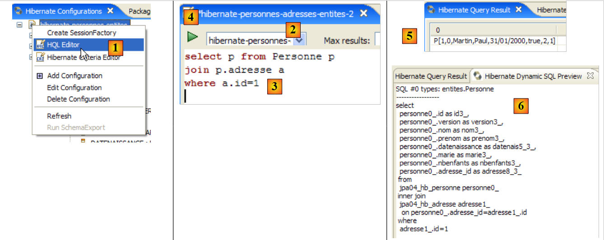 |
- In [1], we create an editor HQL
- In the HQL editor,
- in [2], we select the Hibernate configuration to use if there are multiple (which is the case here)
- in [3], enter the JPQL command you want to run; here, the JPQL command from test 8
- In [4], execute it
- In [5], the query results are displayed in the [Hibernate Query Result] window.
- In [6], the [Hibernate Dynamic SQL preview] window allows you to view the SQL query that was executed.
Another way to obtain the same result:
 |
- In [1]: the command JPQL performs a join between the Person and Address entities. [ref1] refers to this as a "theta join".
- in [2]: the equivalent of SQL
- In [3]: the result
A third form accepted only by Hibernate (HQL):
 |
- in [1]: the command HQL. JPQL does not accept the notation p.address.id. It accepts only one level of indirection.
- in [2]: the equivalent SQL. We can see that it avoids the join between tables.
- in [3]: the result
Here are some other examples:
 |
- in [1]: the list of people with their addresses
- in [2]: the equivalent of SQL.
- in [3]: the result
 |
- in [1]: the list of addresses with their owner if there is one, or none otherwise (right outer join: the Address entity, which will provide the rows with no relationship to Person, is on the right side of the join keyword).
- in [2]: the equivalent of SQL.
- in [3]: the result
Note that only the Person entity has a relationship with the Address entity. The reverse is no longer true since we removed the one-to-one inverse relationship called "person" in the Address entity. If this inverse relationship existed, we could have written:
 |
- in [1]: the list of addresses with their owner if there is one, or none otherwise (left outer join: the Address entity, which will provide the rows with no relationship to Person, is on the left side of the join keyword).
- in [2]: the equivalent of SQL.
- in [3]: the result
We strongly encourage the reader to practice the JPQL language using the Hibernate console.
2.3.9. JPA / Toplink Implementation
We are now using a JPA / Toplink implementation:
 |
The new Eclipse test project is as follows:
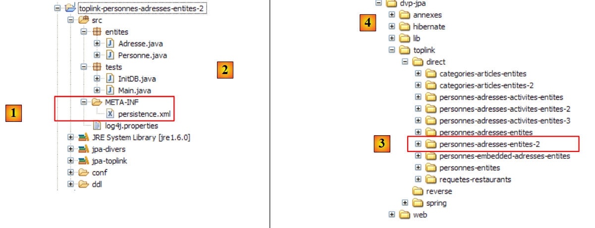 |
The Java code is identical to that of the previous Hibernate project. The environment (libraries – persistence.xml – DBMS – conf and ddl folders – Ant script) is the one discussed in Section 2.1.15.2. The Eclipse project is located in the examples folder. We will import it.
The <persistence.xml> file is modified in one place, specifically regarding the declared entities:
<persistence-unit name="jpa" transaction-type="RESOURCE_LOCAL">
<!-- provider -->
<provider>oracle.toplink.essentials.PersistenceProvider</provider>
<!-- persistent classes -->
<class>entites.Personne</class>
<class>entites.Adresse</class>
<!-- persistence unit properties -->
...
- lines 5 and 6: the two managed entities
Running [InitDB] with SGBD and MySQL5 yields the following results:
 |
In [1], the console output; in [2], the two generated tables; in [jpa04_tl], the generated scripts; and in [3], the generated scripts. Their contents are as follows:
create.sql
CREATE TABLE jpa04_tl_personne (ID BIGINT NOT NULL, PRENOM VARCHAR(30) NOT NULL, DATENAISSANCE DATE NOT NULL, VERSION INTEGER NOT NULL, MARIE TINYINT(1) default 0 NOT NULL, NBENFANTS INTEGER NOT NULL, NOM VARCHAR(30) UNIQUE NOT NULL, adresse_id BIGINT UNIQUE NOT NULL, PRIMARY KEY (ID))
CREATE TABLE jpa04_tl_adresse (ID BIGINT NOT NULL, ADR3 VARCHAR(30), CODEPOSTAL VARCHAR(5) NOT NULL, ADR1 VARCHAR(30) NOT NULL, VILLE VARCHAR(20) NOT NULL, VERSION INTEGER NOT NULL, CEDEX VARCHAR(3), ADR2 VARCHAR(30), PAYS VARCHAR(20) NOT NULL, PRIMARY KEY (ID))
ALTER TABLE jpa04_tl_personne ADD CONSTRAINT FK_jpa04_tl_personne_adresse_id FOREIGN KEY (adresse_id) REFERENCES jpa04_tl_adresse (ID)
CREATE TABLE SEQUENCE (SEQ_NAME VARCHAR(50) NOT NULL, SEQ_COUNT DECIMAL(38), PRIMARY KEY (SEQ_NAME))
INSERT INTO SEQUENCE(SEQ_NAME, SEQ_COUNT) values ('SEQ_GEN', 1)
drop.sql
ALTER TABLE jpa04_tl_personne DROP FOREIGN KEY FK_jpa04_tl_personne_adresse_id
DROP TABLE jpa04_tl_personne
DROP TABLE jpa04_tl_adresse
DELETE FROM SEQUENCE WHERE SEQ_NAME = 'SEQ_GEN'
2.4. Example 4: One-to-Many Relationship
2.4.1. The database schema
1  | 2 |
- in [1], the database, and in [2], its DDL (MySQL5)
An item A (id, version, name) belongs to exactly one category C (id, version, name). A category C can contain 0, 1, or more items. There is a one-to-many relationship (Category -> Item) and the inverse many-to-one relationship (Item -> Category). This relationship is represented by the foreign key that the table [article] has on the table [categorie] (lines 24–28 of DDL).
2.4.2. The @Entity objects representing the database
An article is represented by the following @Entity [Article]:
package entites;
...
@Entity
@Table(name="jpa05_hb_article")
public class Article implements Serializable {
// fields
@Id
@GeneratedValue(strategy = GenerationType.AUTO)
private Long id;
@SuppressWarnings("unused")
@Version
private int version;
@Column(length = 30)
private String nom;
// main relationship Article (many) -> Category (one)
// implemented by a foreign key (categorie_id) in Article
// 1 Article must have 1 Category (nullable=false)
@ManyToOne(fetch=FetchType.LAZY)
@JoinColumn(name = "categorie_id", nullable = false)
private Categorie categorie;
// manufacturers
public Article() {
}
// getters and setters
...
// toString
public String toString() {
return String.format("Article[%d,%d,%s,%d]", id, version, nom, categorie.getId());
}
}
- lines 9-11: primary key of the @Entity
- lines 13-15: its version number
- lines 17-18: name of the article
- lines 20-25: many-to-one relationship linking the @Entity Article to the @Entity Category:
- line 23: the annotation ManyToOne. The Many refers to the @Entity Article in which we are located, and the One to the @Entity Category (line 25). A category (One) can have multiple articles (Many).
- line 24: the annotation ManyToOne defines the foreign key column in the table [article]. It will be named (name) categorie_id, and each row must have a value in this column (nullable=false).
- Line 25: the category to which the article belongs. When an article is placed in the persistence context, we request that its category not be added immediately (fetch=FetchType.LAZY, line 23). We do not know if this request makes sense. We will see.
A category is represented by the following @Entity [Categorie]:
package entites;
...
@Entity
@Table(name="jpa05_hb_categorie")
public class Categorie implements Serializable {
// fields
@Id
@GeneratedValue(strategy = GenerationType.AUTO)
private Long id;
@SuppressWarnings("unused")
@Version
private int version;
@Column(length = 30)
private String nom;
// inverse relationship Category (one) -> Article (many) from relationship Article (many) -> Category (one)
// cascade insertion Category -> insertion Articles
// cascade maj Category -> maj Articles
// cascade delete Category -> delete Articles
@OneToMany(mappedBy = "categorie", cascade = { CascadeType.ALL })
private Set<Article> articles = new HashSet<Article>();
// manufacturers
public Categorie() {
}
// getters and setters
...
// toString
public String toString() {
return String.format("Categorie[%d,%d,%s]", id, version, nom);
}
// bidirectional association Category <--> Article
public void addArticle(Article article) {
// the item is added to the collection of items in the category
articles.add(article);
// article changes category
article.setCategorie(this);
}
}
- lines 8-11: the primary key of the @Entity
- lines 12-14: its version
- lines 16-17: the category name
- lines 19-24: the set of articles in the category
- line 23: the @OneToMany annotation denotes a one-to-many relationship. The "One" refers to the @Entity [Categorie] in which we are located, and the "Many" refers to the type [Article] on line 24: one (One) category has many (Many) items.
- Line 23: The annotation is the inverse (mappedBy) of the annotation ManyToOne placed on the category field of the @Entity Article: mappedBy=category. The relationship ManyToOne placed on the category field of the @Entity Article is the primary relationship. It is essential. It represents the foreign key relationship that links the @Entity Article to the @Entity Category. The relationship OneToMany on the articles field of the @Entity Category is the inverse relationship. It is not essential. It is a convenience for retrieving the articles in a category. Without this convenience, these articles would be retrieved via a JPQL query.
- Line 23: cascadeType.ALL specifies that operations (persist, merge, remove) performed on an @Entity Category should be cascaded to its articles.
- Line 24: Items in a category will be placed in an object of type `Set<Article>`. The `Set` type does not allow duplicates. Therefore, the same item cannot be added twice to the `Set<Article>` object. What does "the same item" mean? To indicate that item a is the same as item b, Java uses the expression `a.equals`(b). In the Object class, the parent of all classes, a.equals(b) is true if a==b, c.a.d, meaning that objects a and b have the same memory location. One might want to say that items a and b are the same if they have the same name. In this case, the developer must override two methods in the [Article] class:
- equals: which must return true if the two objects have the same name
- hashCode: must return an identical integer value for two objects [Article] that the equals method considers equal. Here, the value will therefore be constructed from the item’s name. The value returned by hashCode can be any integer. It is used in various object containers, notably dictionaries (Hashtable).
The OneToMany relationship can use types other than Set to store the Many, such as List objects. We will not cover these cases in this document. The reader can find them in [ref1].
- Line 38: The method [addArticle] allows us to add an article to a category. The method takes care of updating both ends of the OneToMany relationship that links [Categorie] to [Article].
2.4.3. The Eclipse / Hibernate 1 project
The JPA implementation used here is Hibernate’s. The Eclipse test project is as follows:
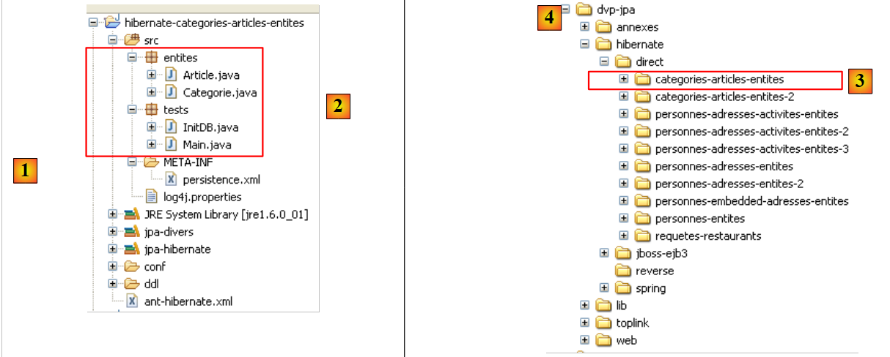 |
The project is located at [3] in the examples folder [4]. We will import it.
2.4.4. Generating the DDL from the database
Following the instructions in section 2.1.7, the DDL obtained for the SGBD MySQL5 is the one shown at the beginning of this example, in section 2.4.1.
2.4.5. InitDB
The code for [InitDB] is as follows:
package tests;
...
public class InitDB {
// constants
private final static String TABLE_ARTICLE = "jpa05_hb_article";
private final static String TABLE_CATEGORIE = "jpa05_hb_categorie";
public static void main(String[] args) {
// Persistence context
EntityManagerFactory emf = Persistence.createEntityManagerFactory("jpa");
EntityManager em = null;
// a EntityManager is retrieved from the previous EntityManagerFactory
em = emf.createEntityManager();
// start of transaction
EntityTransaction tx = em.getTransaction();
tx.begin();
// request
Query sql1;
// delete elements from the ARTICLE table
sql1 = em.createNativeQuery("delete from " + TABLE_ARTICLE);
sql1.executeUpdate();
// delete elements from the CATEGORIE table
sql1 = em.createNativeQuery("delete from " + TABLE_CATEGORIE);
sql1.executeUpdate();
// create three categories
Categorie categorieA = new Categorie();
categorieA.setNom("A");
Categorie categorieB = new Categorie();
categorieB.setNom("B");
Categorie categorieC = new Categorie();
categorieC.setNom("C");
// create 3 items
Article articleA1 = new Article();
articleA1.setNom("A1");
Article articleA2 = new Article();
articleA2.setNom("A2");
Article articleB1 = new Article();
articleB1.setNom("B1");
// link them to their category
categorieA.addArticle(articleA1);
categorieA.addArticle(articleA2);
categorieB.addArticle(articleB1);
// persist categories and cascade (insert) articles
em.persist(categorieA);
em.persist(categorieB);
em.persist(categorieC);
// category display
System.out.println("[categories]");
for (Object p : em.createQuery("select c from Categorie c order by c.nom asc").getResultList()) {
System.out.println(p);
}
// item display
System.out.println("[articles]");
for (Object p : em.createQuery("select a from Article a order by a.nom asc").getResultList()) {
System.out.println(p);
}
// end transaction
tx.commit();
// end EntityManager
em.close();
// end EntityMangerFactory
emf.close();
// log
System.out.println("terminé...");
}
}
- lines 22-27: the tables [article] and [categorie] are emptied. Note that we must start with the table that has the foreign key. If we started with table [categorie], we would delete categories referenced by rows in table [article], and SGBD would reject this.
- Lines 29–34: We create three categories A, B, C
- Lines 36–41: Create three items A1, A2, B1 (the letter indicates the category)
- Lines 43–45: The three items are placed in their respective categories
- lines 47-49: the 3 categories are placed in the persistence context. Because of the Category -> Item cascade, their items will be placed there as well. So all created objects are now in the persistence context.
- Lines 50-59: The persistence context is queried to obtain the list of categories and items. We know that this will trigger a synchronization of the context with the database. It is at this point that the categories and items will be saved to their respective tables.
Running [InitDB] with MySQL5 yields the following results:
 |
- [1]: the console output
- [2]: the tables [jpa05_hb_*] in the SQL Explorer view
- [3]: the category table
- [4]: the article table. Note the relationship between [categorie_id] in [4] and [id] in [3] (foreign key).
2.4.6. Main
The [Main] class runs a series of tests that we will review, except for tests 1 and 2, which reuse the code from [InitDB] to initialize the database.
2.4.6.1. Test3
This test is as follows:
// search for a particular item
public static void test3() {
// new persistence context
EntityManager em = getNewEntityManager();
// transaction
EntityTransaction tx = em.getTransaction();
tx.begin();
// loading category
Categorie categorie = em.find(Categorie.class, categorieA.getId());
// category display and related articles
System.out.format("Articles de la catégorie %s :%n", categorie);
for (Article a : categorie.getArticles()) {
System.out.println(a);
}
// end transaction
tx.commit();
}
- line 4: we have a new persistence context, so it is empty
- lines 6-7: start transaction
- line 9: category A is retrieved from the database into the persistence context
- line 11: we display category A
- lines 12-14: we display the items in category A. This demonstrates the value of the inverse relationship OneToMany for items of the @Entity Category. Its presence saves us from having to make a JPQL query to retrieve the items in category A. To obtain these, we use the get method of the items field.
The results are as follows:
- line 20: category A
- lines 21-22: the two items in category A
2.4.6.2. Test4
This test is as follows:
// delete an item
@SuppressWarnings("unchecked")
public static void test4() {
// new persistence context
EntityManager em = getNewEntityManager();
// transaction
EntityTransaction tx = em.getTransaction();
tx.begin();
// loading article A1
Article newarticle1 = em.find(Article.class, articleA1.getId());
// deletion of article A1 (no category currently loaded)
em.remove(newarticle1);
// toplink: the item must be removed from its category, otherwise test6 crashes
// hibernate: not necessary
newarticle1.getCategorie().getArticles().remove(newarticle1);
// end transaction
tx.commit();
// article dump
dumpArticles();
}
- Test 4 deletes article A1
- line 5: we start with a new, empty context
- line 10: article A1 is added to the persistence context. It will be referenced there as newarticle1.
- line 12: it is removed from the context
- line 15: categories A, B, and C, and items A1, A2, and B1, if no longer persistent, are nevertheless still in memory. They are simply detached from the persistence context. Article A1, which is part of the articles in category A, is removed from it. This will later make it possible to reattach category A to the persistence context. If this is not done, category A will be reattached with a set of articles, one of which has been deleted. This does not seem to bother Hibernate but causes Toplink to crash.
- Line 19: We display all items to verify that A1 is gone.
The results are as follows:
Item A1 has indeed disappeared.
2.4.6.3. Test5
This test is as follows:
// modification of 1 article
public static void test5() {
// new persistence context
EntityManager em = getNewEntityManager();
// transaction
EntityTransaction tx = em.getTransaction();
tx.begin();
// modification articleA2
articleA2.setNom(articleA2.getNom() + "-");
// articleA2 is put back into the persistence context
em.merge(articleA2);
// end transaction
tx.commit();
// article dump
dumpArticles();
}
- Test 5 changes the name of item A2
- line 4: we start with a new, empty context
- line 9: we change the name of the detached article A2, which becomes "A2-".
- line 11: the detached item A2 is reattached to the persistence context. Note that A2 remains a detached object. It is the object em.merge(articleA2) that is now part of the persistence context. This object has not been stored in a variable here, as is customary. It is therefore inaccessible.
- Line 13: Synchronization of the persistence context with the database. The A2 item will be modified in the database, and its ID version will change from N to N+1. The detached memory version is no longer valid. The same applies to the detached object representing category A because it contains articleA2 among its items.
- Line 15: All items are displayed to verify the name change of item A2
The results are as follows:
The name of item A2 has indeed changed.
2.4.6.4. Test6
This test is as follows:
// modification of 1 category and its articles
public static void test6() {
// new persistence context
EntityManager em = getNewEntityManager();
// transaction
EntityTransaction tx = em.getTransaction();
tx.begin();
// loading category
categorieA = em.find(Categorie.class, categorieA.getId());
// list of category A items
for (Article a : categorieA.getArticles()) {
a.setNom(a.getNom() + "-");
}
// change name category
categorieA.setNom(categorieA.getNom() + "-");
// end transaction
tx.commit();
// dump categories and articles
dumpCategories();
dumpArticles();
}
- Test 6 changes the name of category A and all its articles
- line 4: we start with a new, empty context
- line 9: we retrieve category A from the database. We do not merge the detached object categorieA because we know it has a reference to article A2, which has become obsolete. We therefore start from scratch.
- Lines 11–12: We change the names of all items in category A. Again, we use the inverse relationship OneToMany via the method getArticles.
- Line 15: The category name is also changed
- Line 17: End of the transaction. The context is synchronized with the database. All objects in the context that have been modified will be updated in the database.
- Lines 21–22: The items and categories are displayed for verification
The results are as follows:
Article A2 has changed its name again, as has category A.
2.4.6.5. Test7
This test is as follows:
// category deletion
public static void test7() {
// new persistence context
EntityManager em = getNewEntityManager();
// transaction
EntityTransaction tx = em.getTransaction();
tx.begin();
// persistance catégorieB et par cascade (merge) les articles associés
Categorie mergedcategorieB = em.merge(categorieB);
// category deletion and cascading (delete) of associated items
em.remove(mergedcategorieB);
// end transaction
tx.commit();
// dump categories and articles
dumpCategories();
dumpArticles();
}
- Test 7 deletes category B and, consequently, its articles
- line 4: we start with a new, empty context
- line 9: Category B exists in memory as an object detached from the persistence context. We merge it back into the persistence context. As a result, its articles (article B1) will undergo a merge and thus be reintegrated into the persistence context.
- line 11: now that category B is in the context, we can remove it. By cascade, its articles will also be removed. This operation is possible because the merge operation in line 9 reintegrated them into the persistence context.
- Line 13: End of the transaction. The context will be synchronized. Objects in the context that have been removed will be deleted from the database.
- Lines 15–16: We display the items and categories for verification
The results are as follows:
Category B and article B1 have indeed disappeared.
2.4.6.6. Test8
This test is as follows:
// requests
@SuppressWarnings("unchecked")
public static void test8() {
// new persistence context
EntityManager em = getNewEntityManager();
// transaction
EntityTransaction tx = em.getTransaction();
tx.begin();
// list of category A items
List articles = em
.createQuery(
"select a from Categorie c join c.articles a where c.nom like 'A%' order by a.nom asc")
.getResultList();
// item displays
System.out.println("Articles de la catégorie A");
for (Object a : articles) {
System.out.println(a);
}
// end transaction
tx.commit();
}
- Test 7 shows how to retrieve items from a category without using the inverse relationship. This demonstrates that the inverse relationship is not essential.
- line 4: we start with a new, empty context
- line 10: a query JPQL that retrieves all items in a category whose name starts with A
- Lines 15–17: Display the query results.
The results are as follows:
2.4.7. Eclipse / Hibernate Project 2
We copy and paste the Eclipse / Hibernate project to clarify a point regarding the primary relationship / inverse relationship that we created around the @ManyToOne (primary) of the @Entity [Article] and the inverse relationship @OneToMany (inverse) of the @Entity [Categorie]. We want to show that if this latter relationship is not declared as the inverse of the other, then the schema generated for the database is completely different from the one generated previously.
 |
In [1] is the new Eclipse project. In [2] is the Java code, and in [3] is the Ant script that will generate the database schema SQL. The project is located in [4] within the examples folder [5]. We will import it.
We will only modify the @Entity [Categorie] so that its relationship @OneToMany with the @Entity [Article] is no longer declared as the inverse of the @ManyToOne relationship that the @Entity [Article] has with the @Entity [Categorie]:
...
@Entity
@Table(name="jpa05_hb_categorie")
public class Categorie implements Serializable {
// fields
@Id
@GeneratedValue(strategy = GenerationType.AUTO)
private Long id;
@SuppressWarnings("unused")
@Version
private int version;
@Column(length = 30)
private String nom;
// relationship OneToMany not inverse (no mappedby) Category (one) -> Article (many)
// implemented by a Categorie_Article join table, so that, starting from a category
// you can reach the items in this category
@OneToMany(cascade=CascadeType.ALL, fetch=FetchType.LAZY)
private Set<Article> articles = new HashSet<Article>();
// manufacturers
...
- Lines 18–22: We still want to retain the ability to find items in a given category using the @OneToMany relationship on line 21. But we want to understand the effect of the mappedBy attribute, which makes a relationship the inverse of a primary relationship defined elsewhere, in another @Entity. Here, the mappedBy has been removed.
We run the ant-DLL task (see section 2.1.7) with SGBD and MySQL5. The resulting schema is as follows:
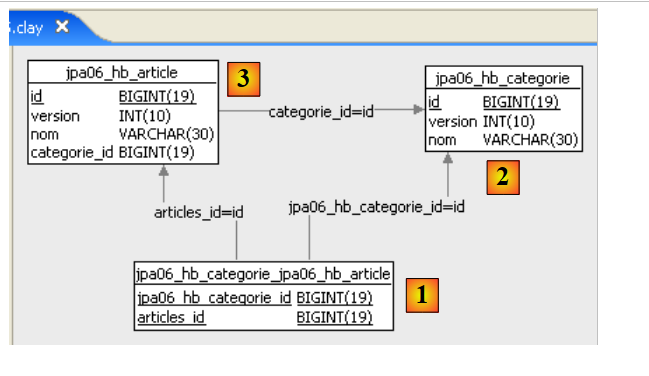 |
Note the following points:
- A new table, [categorie_article] [1], has been created. It did not exist previously.
- It is a join table between the tables [categorie] [2] and [article] [3]. If the Article objects a1 and a2 belong to category c1, the join table will contain the following rows:
where c1, a1, and a2 are the primary keys of the corresponding objects.
- The join table [categorie_article] [1] was created by Hibernate so that, given a Category object c, we can retrieve the Article objects a belonging to c. It is the @OneToMany relationship that forced the creation of this table. Because we did not declare it as the inverse of the primary relationship @ManyToOne of the @Entity Article, Hibernate did not know that it could use this primary relationship to retrieve the articles of a category c. It therefore found another way.
- With this example, we can better understand the concepts of primary and inverse relationships. One (the inverse) uses the properties of the other (the primary).
The schema SQL for this database, corresponding to MySQL5, is as follows:
alter table jpa05_hb_categorie_jpa06_hb_article
drop
foreign key FK79D4BA1D26D17756;
alter table jpa05_hb_categorie_jpa06_hb_article
drop
foreign key FK79D4BA1D424C61C9;
alter table jpa06_hb_article
drop
foreign key FK4547168FECCE8750;
drop table if exists jpa05_hb_categorie;
drop table if exists jpa05_hb_categorie_jpa06_hb_article;
drop table if exists jpa06_hb_article;
create table jpa05_hb_categorie (
id bigint not null auto_increment,
version integer not null,
nom varchar(30),
primary key (id)
) ENGINE=InnoDB;
create table jpa05_hb_categorie_jpa06_hb_article (
jpa05_hb_categorie_id bigint not null,
articles_id bigint not null,
primary key (jpa05_hb_categorie_id, articles_id),
unique (articles_id)
) ENGINE=InnoDB;
create table jpa06_hb_article (
id bigint not null auto_increment,
version integer not null,
nom varchar(30),
categorie_id bigint not null,
primary key (id)
) ENGINE=InnoDB;
alter table jpa05_hb_categorie_jpa06_hb_article
add index FK79D4BA1D26D17756 (jpa05_hb_categorie_id),
add constraint FK79D4BA1D26D17756
foreign key (jpa05_hb_categorie_id)
references jpa05_hb_categorie (id);
alter table jpa05_hb_categorie_jpa06_hb_article
add index FK79D4BA1D424C61C9 (articles_id),
add constraint FK79D4BA1D424C61C9
foreign key (articles_id)
references jpa06_hb_article (id);
alter table jpa06_hb_article
add index FK4547168FECCE8750 (categorie_id),
add constraint FK4547168FECCE8750
foreign key (categorie_id)
references jpa05_hb_categorie (id);
- Lines 19–24: creation of table [categorie]; lines 33–39: creation of table [article]. Note that these are identical to those in the previous example.
- Lines 26–31: creation of the join table [categorie_article] due to the presence of the non-inverse relationship @OneToMany of the @Entity Category. The rows in this table are of type [c,a], where c is the primary key of a category c and a is the primary key of an item a belonging to category c. The primary key of this join table consists of the two primary keys [c,a] concatenated (line 29).
- Lines 41–45: the foreign key constraint from table [categorie_article] to table [categorie]
- Lines 47–51: The foreign key constraint from table [categorie_article] to table [article]
- lines 53–57: the foreign key constraint from table [article] to table [categorie]
The reader is invited to run the tests [InitDB] and [Main]. They yield the same results as before. However, the database schema is redundant, and performance will be degraded compared to the previous version. We should probably investigate this issue of inverse/primary relationships further to see if the new configuration introduces additional conflicts due to the fact that we have two independent relationships representing the same thing: the many-to-one relationship between table [article] and table [categorie].
2.4.8. JPA / Toplink Implementation - 1
We are now using a JPA / Toplink implementation:
 |
The Eclipse project with Toplink is a copy of the Eclipse project with Hibernate, version 1:
 |
The Java code is identical to that of the previous Hibernate project—version 1. The environment (libraries—persistence.xml—DBMS—conf and DDL folders—Ant script) is the one discussed in section 2.1.15.2. The Eclipse project is located in the examples folder. We will import it.
The file <persistence.xml> [2] has been modified in one respect, namely the declared entities:
...
<!-- persistent classes -->
<class>entites.Categorie</class>
<class>entites.Article</class>
...
- lines 3 and 4: the two managed entities
Running [InitDB] with SGBD and MySQL5 yields the following results:
 |
In [1], the console output; in [2], the two generated tables; in [jpa05_tl], the generated scripts; and in [3], the generated scripts. Their contents are as follows:
create.sql
CREATE TABLE jpa05_tl_article (ID BIGINT NOT NULL, VERSION INTEGER, NOM VARCHAR(30), categorie_id BIGINT NOT NULL, PRIMARY KEY (ID))
CREATE TABLE jpa05_tl_categorie (ID BIGINT NOT NULL, VERSION INTEGER, NOM VARCHAR(30), PRIMARY KEY (ID))
ALTER TABLE jpa05_tl_article ADD CONSTRAINT FK_jpa05_tl_article_categorie_id FOREIGN KEY (categorie_id) REFERENCES jpa05_tl_categorie (ID)
CREATE TABLE SEQUENCE (SEQ_NAME VARCHAR(50) NOT NULL, SEQ_COUNT DECIMAL(38), PRIMARY KEY (SEQ_NAME))
INSERT INTO SEQUENCE(SEQ_NAME, SEQ_COUNT) values ('SEQ_GEN', 1)
drop.sql
ALTER TABLE jpa05_tl_article DROP FOREIGN KEY FK_jpa05_tl_article_categorie_id
DROP TABLE jpa05_tl_article
DROP TABLE jpa05_tl_categorie
DELETE FROM SEQUENCE WHERE SEQ_NAME = 'SEQ_GEN'
The execution of [Main] completes without errors.
2.4.9. Implementation JPA / Toplink - 2
This Eclipse project was created by cloning the previous one. Since it was built with Hibernate, we remove the mappedBy attribute from the @OneToMany relationship of the @Entity Categorie.
@Entity
@Table(name = "jpa06_tl_categorie")
public class Categorie implements Serializable {
// fields
@Id
@GeneratedValue(strategy = GenerationType.AUTO)
private Long id;
@Version
private int version;
@Column(length = 30)
private String nom;
// relation OneToMany not inverse (no mappedby) Category (one) ->
// Article (many)
// implemented by a Categorie_Article join table, so that from
// category
// several items can be reached
@OneToMany(cascade = CascadeType.ALL, fetch = FetchType.LAZY)
private Set<Article> articles = new HashSet<Article>();
The schema SQL generated for MySQL5 is as follows:
create.sql
CREATE TABLE jpa06_tl_categorie (ID BIGINT NOT NULL, VERSION INTEGER, NOM VARCHAR(30), PRIMARY KEY (ID))
CREATE TABLE jpa06_tl_categorie_jpa06_tl_article (Categorie_ID BIGINT NOT NULL, articles_ID BIGINT NOT NULL, PRIMARY KEY (Categorie_ID, articles_ID))
CREATE TABLE jpa06_tl_article (ID BIGINT NOT NULL, VERSION INTEGER, NOM VARCHAR(30), categorie_id BIGINT NOT NULL, PRIMARY KEY (ID))
ALTER TABLE jpa06_tl_categorie_jpa06_tl_article ADD CONSTRAINT FK_jpa06_tl_categorie_jpa06_tl_article_articles_ID FOREIGN KEY (articles_ID) REFERENCES jpa06_tl_article (ID)
ALTER TABLE jpa06_tl_categorie_jpa06_tl_article ADD CONSTRAINT jpa06_tl_categorie_jpa06_tl_article_Categorie_ID FOREIGN KEY (Categorie_ID) REFERENCES jpa06_tl_categorie (ID)
ALTER TABLE jpa06_tl_article ADD CONSTRAINT FK_jpa06_tl_article_categorie_id FOREIGN KEY (categorie_id) REFERENCES jpa06_tl_categorie (ID)
CREATE TABLE SEQUENCE (SEQ_NAME VARCHAR(50) NOT NULL, SEQ_COUNT DECIMAL(38), PRIMARY KEY (SEQ_NAME))
INSERT INTO SEQUENCE(SEQ_NAME, SEQ_COUNT) values ('SEQ_GEN', 1)
- Line 2: The join table that represents the previous non-inverse relationship @OneToMany.
The execution of [InitDB] completes without errors, but the execution of [Main] crashes at test 7 with the following logs (FINEST):
- line 3: the merge on category B
- line 4: the dependent article B1 is placed in the context
- line 5: same for category B itself
- line 6: the remove on category B
- line 7: remove on article B1 (by cascade)
- Line 8: The Java code requests a commit of the transaction
- line 9: a transaction starts—so it apparently hadn’t started yet.
- Line 10: Item B1 is about to be deleted by an operation DELETE on table [article]. This is where the problem lies. The join table [categorie_article] has a reference to row B1 in table [article]. Deleting B1 from [article] will violate a foreign key constraint.
- Lines 13 and beyond: the exception occurs
What can we conclude?
- Once again, we have a portability issue between Hibernate and Toplink: Hibernate passed this test
- TopLink does not handle well the situation where two relationships are actually inverse to each other, with one not declared as primary and the other as inverse. This is acceptable because this scenario actually represents a configuration error. In our example, the table [article] has no relationship with the join table [categorie_article]. It therefore seems natural that during an operation on table [article], Toplink does not attempt to work with table [categorie_article].
2.5. Example 5: Many-to-many relationship with an explicit join table
2.5.1. The database schema
|
- in [1], the database MySQL5
We are already familiar with the tables [personne], [2], [adresse], and [3]. These were discussed in Section 2.3.1. We will now consider version, where the person’s address is stored in a separate table, [adresse] and [3]. In the table [personne], the relationship linking a person to their address is represented by a foreign key constraint.
A person engages in activities. These are listed in the tables [activite] and [4]. A person may engage in multiple activities, and an activity may be engaged in by multiple people. A many-to-many relationship therefore links the tables [personne] and [activite]. This is implemented by the join table [personne_activite] [5].
2.5.2. The @Entity objects representing the database
The tables above will be represented by the following @Entity classes:
- the @Entity Person will represent the table [personne]
- the @Entity Address will represent the table [adresse]
- the @Entity Activity will represent the table [activite]
- the @Entity PersonneActivite will represent the table [personne_activite]
The relationships between these entities are as follows:
- A one-to-one relationship links the Person entity to the Address entity: a person p has an address a. The Person entity holding the foreign key will be the primary entity, and the Address entity will be the inverse entity.
- A many-to-many relationship connects the Person and Activity entities: a person has multiple activities, and an activity is performed by multiple people. This relationship could be implemented directly using an @ManyToMany annotation in each of the two entities, with one entity declared as the inverse of the other. This solution will be explored later. Here, we implement the many-to-many relationship using two one-to-many relationships:
- a one-to-many relationship linking the Person entity to the PersonneActivite entity: one (One) row in the [personne] table is referenced by many (Many) rows in the [personne_activite] table. The table [personne_activite], which holds the foreign key, will hold the primary relationship @ManyToOne, and the Person entity will hold the inverse relationship @OneToMany.
- A one-to-many relationship that links the Activity entity to the PersonneActivite entity: one row in the [activite] table is referenced by many rows in the [personne_activite] table. The table [personne_activite], which holds the foreign key, will hold the primary relationship @ManyToOne, and the Activity entity will hold the inverse relationship @OneToMany.
The @Entity Person is as follows:
@Entity
@Table(name = "jpa07_hb_personne")
public class Personne implements Serializable {
@Id
@Column(nullable = false)
@GeneratedValue(strategy = GenerationType.AUTO)
private Long id;
@Column(nullable = false)
@Version
private int version;
@Column(length = 30, nullable = false, unique = true)
private String nom;
@Column(length = 30, nullable = false)
private String prenom;
@Column(nullable = false)
@Temporal(TemporalType.DATE)
private Date datenaissance;
@Column(nullable = false)
private boolean marie;
@Column(nullable = false)
private int nbenfants;
// main relationship Person (one) -> Address (one)
// implemented by the foreign key Person(adresse_id) -> Address
// cascade insert Person -> insert Address
// cascade shift Person -> shift Address
// cascade deletion Person -> deletion Address
// a Person must have 1 Address (nullable=false)
// 1 Address belongs to 1 person only (unique=true)
@OneToOne(cascade = CascadeType.ALL)
@JoinColumn(name = "adresse_id", unique = true, nullable = false)
private Adresse adresse;
// relation Person (one) -> PersonneActivite (many)
// inverse of existing relationship PersonneActivite (many) -> Personne (one)
// cascade deletion Person -> supression PersonneActivite
@OneToMany(mappedBy = "personne", cascade = { CascadeType.REMOVE })
private Set<PersonneActivite> activites = new HashSet<PersonneActivite>();
// manufacturers
This @Entity is well-known. We will only comment on the relationships it has with other entities:
- lines 30–39: a one-to-one relationship @OneToOne with the @Entity Address, implemented by a foreign key [adresse_id] (line 38) that the table [personne] will have on the table [adresse].
- Lines 41–45: a one-to-many relationship @OneToMany with the @Entity PersonneActivite. One person is referenced by many rows in the join table [personne_activite] represented by the @Entity PersonneActivite. These PersonneActivite objects will be placed in a Set<PersonneActivite> type, where PersonneActivite is a type we will define shortly.
- Line 44: The one-to-many relationship defined here is the inverse of a primary relationship defined on the person field of the @Entity PersonneActivite (keyword mappedBy). We have a Person -> Activity cascade on deletions: deleting a person p will result in the deletion of persistent elements of type PersonneActivite found in the set p.activites.
The @Entity Address is as follows:
@Entity
@Table(name = "jpa07_hb_adresse")
public class Adresse implements Serializable {
// fields
@Id
@Column(nullable = false)
@GeneratedValue(strategy = GenerationType.AUTO)
private Long id;
@Column(nullable = false)
@Version
private int version;
@Column(length = 30, nullable = false)
private String adr1;
@Column(length = 30)
private String adr2;
@Column(length = 30)
private String adr3;
@Column(length = 5, nullable = false)
private String codePostal;
@Column(length = 20, nullable = false)
private String ville;
@Column(length = 3)
private String cedex;
@Column(length = 20, nullable = false)
private String pays;
@OneToOne(mappedBy = "adresse")
private Personne personne;
- Lines 28-29: the @OneToOne relationship, which is the inverse of the @OneToOne address relationship of the @Entity Person (lines 37-38 of Person).
The @Entity Activity is as follows
@Entity
@Table(name = "jpa07_hb_activite")
public class Activite implements Serializable {
// fields
@Id
@Column(nullable = false)
@GeneratedValue(strategy = GenerationType.AUTO)
private Long id;
@Column(nullable = false)
@Version
private int version;
@Column(length = 30, nullable = false, unique = true)
private String nom;
// relation Activite (one) -> PersonneActivite (many)
// inverse of existing relationship PersonneActivite (many) -> Activite (one)
// cascade suppression Activite -> supression PersonneActivite
@OneToMany(mappedBy = "activite", cascade = { CascadeType.REMOVE })
private Set<PersonneActivite> personnes = new HashSet<PersonneActivite>();
- lines 6-9: the primary key of the activity
- lines 11-13: the version number of the activity
- lines 15-16: the activity name
- lines 18-22: the one-to-many relationship linking the @Entity Activity to the @Entity PersonneActivite: an activity (One) is referenced by multiple (Many) rows in the join table [personne_activite] represented by the @Entity PersonneActivite. These PersonneActivite objects will be placed in a Set<PersonneActivite> type.
- Line 22: The one-to-many relationship defined here is the inverse of a primary relationship defined on the `activite` field in the @Entity PersonneActivite (keyword mappedBy). There is an Activity -> PersonneActivite cascade on deletes: Deleting an activity from the [activite] table will result in the deletion of the join table [personne_activite] of persistent elements of type PersonneActivite found in the set a.personnes.
The @Entity PersonneActivite is as follows:
@Entity
// join table
@Table(name = "jpa07_hb_personne_activite")
public class PersonneActivite {
@Embeddable
public static class Id implements Serializable {
// composite key components
// points to a Person
@Column(name = "PERSONNE_ID")
private Long personneId;
// on an Activity
@Column(name = "ACTIVITE_ID")
private Long activiteId;
// manufacturers
...
// getters and setters
...
// toString
public String toString() {
return String.format("[%d,%d]", getPersonneId(), getActiviteId());
}
}
// fields of the Personne_Activite class
// composite key
@EmbeddedId
private Id id = new Id();
// main relationship PersonneActivite (many) -> Nobody (one)
// implemented by the foreign key: personneId (PersonneActivite (many) -> Personne (one)
// personneId is also part of the composite primary key
// JPA does not need to manage this foreign key (insertable = false, updatable = false), as this is done by the application itself in its constructor
@ManyToOne
@JoinColumn(name = "PERSONNE_ID", insertable = false, updatable = false)
private Personne personne;
// main relationship PersonneActivite -> Activity
// implemented by the foreign key: activiteId (PersonneActivite (many) -> Activite (one)
// activiteId is also part of the composite primary key
// JPA does not need to manage this foreign key (insertable = false, updatable = false), as this is done by the application itself in its constructor
@ManyToOne()
@JoinColumn(name = "ACTIVITE_ID", insertable = false, updatable = false)
private Activite activite;
// manufacturers
public PersonneActivite() {
}
public PersonneActivite(Personne p, Activite a) {
// foreign keys are set by the application
getId().setPersonneId(p.getId());
getId().setActiviteId(a.getId());
// two-way associations
this.setPersonne(p);
this.setActivite(a);
p.getActivites().add(this);
a.getPersonnes().add(this);
}
// getters and setters
...
// toString
public String toString() {
return String.format("[%s,%s,%s]", getId(), getPersonne().getNom(), getActivite().getNom());
}
}
This class is more complex than the previous ones.
- The table [personne_activite] has rows of the form [p,a], where p is the primary key of a person and a is the primary key of an activity. Every table must have a primary key, and [personne_activite] is no exception. Up until now, we had defined primary keys dynamically generated by the SGBD. We could do the same here. Instead, we will use a different technique, one where the application itself defines the values of a table’s primary key. Here, a row [p1,a1] indicates that a person p1 engages in activity a1. This same row cannot appear a second time in the table. Thus, the pair (p,a) is a good candidate for a primary key. This is called a composite primary key.
- Lines 30–31: the composite primary key. The annotation @EmbeddedId (which used to be @Id) is analogous to the @Embedded notation applied to a person’s Address field. In the latter case, this meant that the Address field was an instance of an external class but had to be inserted into the same table as the person. Here the meaning is the same, except that to indicate we are dealing with the primary key, the notation becomes @EmbeddedId.
- Line 31: An empty object representing the primary key id is constructed as soon as the object [PersonneActivite] is constructed. The class representing the primary key is defined on lines 7–26 as a public static class internal to the class [PersonneActivite]. The fact that it is public and static is enforced by Hibernate. If we replace `public static` with `private`, an exception occurs, and the associated error message indicates that Hibernate attempted to execute the statement `new PersonneActivite$Id`. Therefore, the Id class must be both static and public.
- Line 6: The Id class of the primary key is declared @Embeddable. Recall that the primary key id from line 31 was declared @EmbeddedId. The corresponding class must therefore have the @Embeddable annotation.
- We stated that the primary key of the [personne_activite] table consists of the pair (p,a), where p is the primary key of a person and a is the primary key of an activity. We find the two elements (p,a) of the composite key in row 11 (personneId) and row 15 (activiteId). The columns associated with these two fields are named: PERSONNE_ID for the person, ACTIVITE_ID for the activity.
- Line 31: The primary key has been defined with its two columns (PERSONNE_ID, ACTIVITE_ID). There are no other columns in the [personne_activite] table. All that remains is to define the relationships between the @Entity PersonneActivite we are currently describing and the other @Entities in the relational schema. These relationships reflect the foreign key constraints that the table [personne_activite] has with the other tables.
- Lines 33–39: define the foreign key from the [personne_activite] table to the [personne] table
- Line 37: The relationship is of type @ManyToOne: one (One) row in the [personne] table is referenced by multiple (Many) rows in the [personne_activite] table.
- Line 38: The foreign key column is named. We use the same name as the one given for the "person" component of the foreign key (line 10). The attributes `insertable=false` and `updatable=false` are there to prevent Hibernate from managing the foreign key. This foreign key is actually a component of a primary key calculated by the application, and Hibernate should not intervene.
- Lines 41–47: define the foreign key from the [personne_activite] table to the [activite] table. The explanations are the same as those given previously.
- Lines 54–63: Constructor for a PersonneActivite object based on a person p and an activity a. Recall that when constructing a PersonneActivite object, the primary key id from line 31 pointed to an empty Id object. Lines 56–57 assign a value to each of the fields (personneId, activiteId) of the object Id. These values are, respectively, the primary keys of the person p and the activity a passed as parameters to the constructor. The primary key id (line 31) therefore now has a value.
- line 59: the person field in line 39 is assigned the value p
- line 60: the activity field in line 47 is assigned the value a
- An object [PersonneActivite] is now created and initialized. We update the inverse relationships between the @Entity Person (line 61) and Activity (line 62) with the @Entity PersonneActivite that has just been created.
We have completed the description of the database entities. We are in a complex but unfortunately common situation. We will see that there is another possible configuration of the JPA layer that hides part of this complexity: the join table becomes implicit, constructed and managed by the JPA layer. Here we have chosen the most complex solution, but one that allows the relational schema to evolve. It thus allows columns to be added to the join table, which is not possible in the configuration where the join table is not an explicit @Entity. [ref1] recommends the solution we are currently examining. The information that enabled the development of this solution was found in [ref1].
2.5.3. The Eclipse / Hibernate Project
The JPA implementation used here is that of Hibernate. The Eclipse project for the tests is as follows:
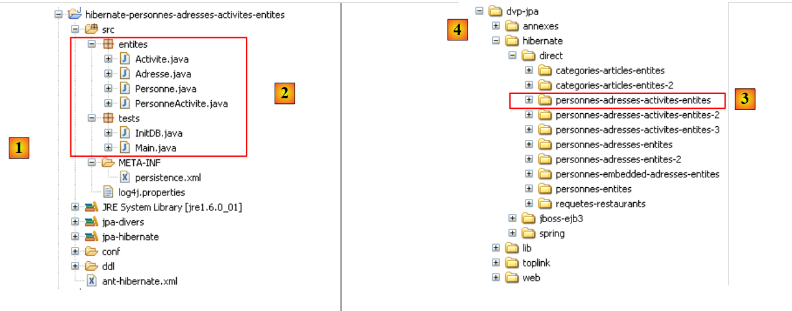
In [1], the Eclipse project; in [2], the Java code. The project is located in [3] within the [4] examples folder. We will import it.
2.5.4. Generating the DDL database
Following the instructions in section 2.1.7, the DDL obtained for the SGBD MySQL5 is as follows:
alter table jpa07_hb_personne
drop
foreign key FKB5C817D45FE379D0;
alter table jpa07_hb_personne_activite
drop
foreign key FKD3E49B06CD852024;
alter table jpa07_hb_personne_activite
drop
foreign key FKD3E49B0668C7A284;
drop table if exists jpa07_hb_activite;
drop table if exists jpa07_hb_adresse;
drop table if exists jpa07_hb_personne;
drop table if exists jpa07_hb_personne_activite;
create table jpa07_hb_activite (
id bigint not null auto_increment,
version integer not null,
nom varchar(30) not null unique,
primary key (id)
) ENGINE=InnoDB;
create table jpa07_hb_adresse (
id bigint not null auto_increment,
version integer not null,
adr1 varchar(30) not null,
adr2 varchar(30),
adr3 varchar(30),
codePostal varchar(5) not null,
ville varchar(20) not null,
cedex varchar(3),
pays varchar(20) not null,
primary key (id)
) ENGINE=InnoDB;
create table jpa07_hb_personne (
id bigint not null auto_increment,
version integer not null,
nom varchar(30) not null unique,
prenom varchar(30) not null,
datenaissance date not null,
marie bit not null,
nbenfants integer not null,
adresse_id bigint not null unique,
primary key (id)
) ENGINE=InnoDB;
create table jpa07_hb_personne_activite (
PERSONNE_ID bigint not null,
ACTIVITE_ID bigint not null,
primary key (PERSONNE_ID, ACTIVITE_ID)
) ENGINE=InnoDB;
alter table jpa07_hb_personne
add index FKB5C817D45FE379D0 (adresse_id),
add constraint FKB5C817D45FE379D0
foreign key (adresse_id)
references jpa07_hb_adresse (id);
alter table jpa07_hb_personne_activite
add index FKD3E49B06CD852024 (ACTIVITE_ID),
add constraint FKD3E49B06CD852024
foreign key (ACTIVITE_ID)
references jpa07_hb_activite (id);
alter table jpa07_hb_personne_activite
add index FKD3E49B0668C7A284 (PERSONNE_ID),
add constraint FKD3E49B0668C7A284
foreign key (PERSONNE_ID)
references jpa07_hb_personne (id);
- lines 21-26: table [activite]
- lines 28–39: table [adresse]
- lines 41–51: table [personne]
- lines 53-57: the join table [personne_activite]. Note the composite key (line 56)
- lines 59–63: the foreign key from table [personne] to table [adresse]
- lines 65-69: the foreign key from table [personne_activite] to table [activite]
- lines 71-75: the foreign key from table [personne_activite] to table [personne]
2.5.5. InitDB
The code for [InitDB] is as follows:
package tests;
...
public class InitDB {
// constants
private final static String TABLE_PERSONNE_ACTIVITE = "jpa07_hb_personne_activite";
private final static String TABLE_PERSONNE = "jpa07_hb_personne";
private final static String TABLE_ACTIVITE = "jpa07_hb_activite";
private final static String TABLE_ADRESSE = "jpa07_hb_adresse";
public static void main(String[] args) throws ParseException {
// Persistence context
EntityManagerFactory emf = Persistence.createEntityManagerFactory("jpa");
EntityManager em = null;
// we retrieve a EntityManager from the EntityManagerFactory
// previous
em = emf.createEntityManager();
// start of transaction
EntityTransaction tx = em.getTransaction();
tx.begin();
// request
Query sql1;
// delete elements from the PERSONNE_ACTIVITE table
sql1 = em.createNativeQuery("delete from " + TABLE_PERSONNE_ACTIVITE);
sql1.executeUpdate();
// delete elements from the PERSONNE table
sql1 = em.createNativeQuery("delete from " + TABLE_PERSONNE);
sql1.executeUpdate();
// delete elements from the ACTIVITE table
sql1 = em.createNativeQuery("delete from " + TABLE_ACTIVITE);
sql1.executeUpdate();
// delete elements from the ADRESSE table
sql1 = em.createNativeQuery("delete from " + TABLE_ADRESSE);
sql1.executeUpdate();
// creation activities
Activite act1 = new Activite();
act1.setNom("act1");
Activite act2 = new Activite();
act2.setNom("act2");
Activite act3 = new Activite();
act3.setNom("act3");
// persistence activities
em.persist(act1);
em.persist(act2);
em.persist(act3);
// creating people
Personne p1 = new Personne("p1", "Paul", new SimpleDateFormat("dd/MM/yy").parse("31/01/2000"), true, 2);
Personne p2 = new Personne("p2", "Sylvie", new SimpleDateFormat("dd/MM/yy").parse("05/07/2001"), false, 0);
Personne p3 = new Personne("p3", "Sylvie", new SimpleDateFormat("dd/MM/yy").parse("05/07/2001"), false, 0);
// address creation
Adresse adr1 = new Adresse("adr1", null, null, "49000", "Angers", null, "France");
Adresse adr2 = new Adresse("adr2", "Les Mimosas", "15 av Foch", "49002", "Angers", "03", "France");
Adresse adr3 = new Adresse("adr3", "x", "x", "x", "x", "x", "x");
Adresse adr4 = new Adresse("adr4", "y", "y", "y", "y", "y", "y");
// associations person <--> address
p1.setAdresse(adr1);
adr1.setPersonne(p1);
p2.setAdresse(adr2);
adr2.setPersonne(p2);
p3.setAdresse(adr3);
adr3.setPersonne(p3);
// persistence of persons and therefore of associated addresses
em.persist(p1);
em.persist(p2);
em.persist(p3);
// persistence of a4 address not linked to a person
em.persist(adr4);
// people display
System.out.println("[personnes]");
for (Object p : em.createQuery("select p from Personne p order by p.nom asc").getResultList()) {
System.out.println(p);
}
// address display
System.out.println("[adresses]");
for (Object a : em.createQuery("select a from Adresse a").getResultList()) {
System.out.println(a);
}
System.out.println("[activites]");
for (Object a : em.createQuery("select a from Activite a").getResultList()) {
System.out.println(a);
}
// associations person <-->activity
PersonneActivite p1act1 = new PersonneActivite(p1, act1);
PersonneActivite p1act2 = new PersonneActivite(p1, act2);
PersonneActivite p2act1 = new PersonneActivite(p2, act1);
PersonneActivite p2act3 = new PersonneActivite(p2, act3);
// persistence of person <--> activity associations
em.persist(p1act1);
em.persist(p1act2);
em.persist(p2act1);
em.persist(p2act3);
// people display
System.out.println("[personnes]");
for (Object p : em.createQuery("select p from Personne p order by p.nom asc").getResultList()) {
System.out.println(p);
}
// address display
System.out.println("[adresses]");
for (Object a : em.createQuery("select a from Adresse a").getResultList()) {
System.out.println(a);
}
System.out.println("[activites]");
for (Object a : em.createQuery("select a from Activite a").getResultList()) {
System.out.println(a);
}
System.out.println("[personnes/activites]");
for (Object pa : em.createQuery("select pa from PersonneActivite pa").getResultList()) {
System.out.println(pa);
}
// end transaction
tx.commit();
// end EntityManager
em.close();
// end EntityManagerFactory
emf.close();
// log
System.out.println("terminé...");
}
}
- Lines 27–38: The tables [personne_activite], [personne], [adresse], and [activite] are emptied. Note that we must start with the tables that have foreign keys.
- Lines 40–45: We create three activities: act1, act2, and act3
- Lines 47–49: They are placed in the persistence context.
- Lines 51–53: We create three people: p1, p2, and p3.
- Lines 55–58: Four addresses (adr1 through adr4) are created.
- Lines 60–65: The addresses adr1–adr4 are associated with the people p1–p3. There are two operations to perform each time because the Person <-> Address relationship is bidirectional.
- lines 67–69: the people p1 through p3 are placed in the persistence context. Because of the Person -> Address cascade, this will also be the case for the addresses adr1 through adr3.
- Line 71: The fourth address, adr4, which is not associated with a person, is explicitly placed in the persistence context.
- Lines 73–85: The persistence context is queried to retrieve the lists of entities of types [Personne], [Adresse], and [Activite]. We know that these queries will trigger the synchronization of the context with the database: the created entities will be inserted into the database and assigned their primary keys. It is important to understand this for what follows.
- Lines 87–90: We create 4 Person <-> Activity associations. Their names indicate which person is linked to which activity. You may recall that the primary key of an entity PersonneActivite is a composite key formed from the primary keys of a Person and an Activity. It is therefore because the Person and Activity entities obtained their primary keys during a previous synchronization that this operation is possible.
- lines 92-95: these 4 associations are placed in the persistence context.
- Lines 87–86: The persistence context is queried to retrieve the list of entities of types [Personne], [Adresse], [Activite], and [PersonneActivite]. We know that these queries will cause the context to synchronize with the database: the created PersonneActivite entities will be inserted into the database.
Executing [InitDB] with MySQL5 produces the following console output:
It may be surprising to see that in lines 15–16, individuals p1 and p2 have a version number of 1, and that the same is true in lines 24–26 for all three activities. Let’s try to understand.
In lines 2–4, the version IDs for people are 0, and in lines 11–13, the version IDs for activities are 0. These displays occur before the Person <-> Activity relationships are created. Lines 87–90 of the Java code create relationships between people p1 and p2 and activities act1, act2, and act3. These are created using the @Entity constructor PersonneActivite (see Section 2.5.2). Reading the code for this constructor shows that when a person p is linked to an activity a:
- the activity a is added to the set p.activites
- person p is added to the set a.personnes
Thus, when we write new PersonneActivite(p,a), person p and activity a are modified in memory. When lines 97–113 of [InitDB] are executed, the persistence context is synchronized with the database; JPA / Hibernate detects that the persistent entities p1, p2, act1, act2, and act3 have been modified. These changes must be made in the database. They are actually recorded in the join table [personne_activite], but JPA / Hibernate still increments the ID of each modified persistent element.
In the SQL Explorer view, the results are as follows:
 |
- [2]: the [jpa07_hb_*] tables
- [3]: the people table
- [4]: the addresses table.
- [5]: the activities table
- [6]: the person <-> activity join table
2.5.6. Main
The [Main] class contains a series of tests that we will review, except for test 1, which uses the code from [InitDB] to initialize the database.
2.5.6.1. Test2
This test is as follows:
// deletion Person p1
public static void test2() {
// persistence context
EntityManager em = getEntityManager();
// start of transaction
EntityTransaction tx = em.getTransaction();
tx.begin();
// remove dependencies on p1: not necessary for hibernate but
// essential for toplink
act1.getPersonnes().remove(p1act1);
act2.getPersonnes().remove(p1act2);
// delete person p1
em.remove(p1);
// end transaction
tx.commit();
// display the new tables
dumpPersonne();
dumpActivite();
dumpAdresse();
dumpPersonne_Activite();
}
- Line 4: We use the test1 persistence context, where person p1 is an object in the context.
- line 13: deletion of person p1. Because of the attribute:
- cascadeType.ALL on Address, the address of person p1 will be deleted
- cascadeType.REMOVE on PersonneActivite, the activities of person p1 will be deleted.
- Lines 10–11: We remove the dependencies that other entities have on person p1, who will be deleted in line 13. Activities act1 and act2 are performed by person p1. The links were created by the constructor of entity PersonneActivite, whose code is as follows:
public PersonneActivite(Personne p, Activite a) {
// foreign keys are set by the application
getId().setPersonneId(p.getId());
getId().setActiviteId(a.getId());
// two-way associations
setPersonne(p);
setActivite(a);
p.getActivites().add(this);
a.getPersonnes().add(this);
}
In line 9, activity a receives an additional element of type PersonneActivite in its people set. This element is of type (p,a) to indicate that person p performs activity a. In test1 of [Main], two links (p1,act1) and (p1,act2) were thus created. Lines 10 and 11 of test2 remove these dependencies. Note that Hibernate works without removing these dependencies on person p1, but Toplink does not.
- Lines 17–20: all tables are displayed
The results are as follows:
- Person p1, who is present in test1 (line 3), is no longer present at the end of test2 (lines 22–23)
- The address adr1 of person p1, present in test1 (line 11), is no longer present at the end of test2 (lines 29–31)
- the activities (p1,act1) (line 16) and (p1,act2) (line 18) of person p1, present in test1, are no longer present at the end of test2 (lines 33-34)
2.5.6.2. Test3
This test is as follows:
// delete act1 activity
public static void test3() {
// persistence context
EntityManager em = getEntityManager();
// start of transaction
EntityTransaction tx = em.getTransaction();
tx.begin();
// remove dependencies on act1: not necessary for hibernate but
// essential for toplink
p2.getActivites().remove(p2act1);
// delete act1 activity
em.remove(act1);
// end transaction
tx.commit();
// display the new tables
dumpPersonne();
dumpActivite();
dumpAdresse();
dumpPersonne_Activite();
}
- Line 4: We use the persistence context of test2
- line 12: deletion of activity act1. Due to the attribute:
- cascadeType.REMOVE on PersonneActivite, the rows (p, act1) in table [personne_activite] will be deleted.
- Line 10: Before removing act1 from the persistence context, we remove any dependencies that other entities may have on this persistent object. After deleting person p1 in the previous test, only person p2 performs activity act1.
- Lines 13–16: All tables are displayed
The results are as follows:
- In test2, activity act1 exists (line 6). In test3, it no longer exists (lines 21–22)
- In test2, the link (p2,act1) exists (line 14). In test3, it no longer exists (line 28)
2.5.6.3. Test4
This test is as follows:
// recovery of a person's activities
public static void test4() {
// persistence context
EntityManager em = getNewEntityManager();
// start of transaction
EntityTransaction tx = em.getTransaction();
tx.begin();
// we recover person p2
p2 = em.find(Personne.class, p2.getId());
System.out.format("1 - Activités de la personne p2 (JPQL) :%n");
// scan your activities
for (Object pa : em.createQuery("select a.nom from Activite a join a.personnes pa where pa.personne.nom='p2'").getResultList()) {
System.out.println(pa);
}
// we go through the inverse relation of p2
p2 = em.find(Personne.class, p2.getId());
System.out.format("2 - Activités de la personne p2 (relation inverse) :%n");
// scan your activities
for (PersonneActivite pa : p2.getActivites()) {
System.out.println(pa.getActivite().getNom());
}
// end transaction
tx.commit();
}
- Test 4 displays the activities of person p2.
- Line 4: We start with a new, empty context
- Lines 12–14: We display the names of the activities performed by person p2 using a query JPQL.
- A join between Activity (a) and PersonneActivite (pa) is performed (join a.personnes)
- In the rows of this join (a, pa), the activity name (a.nom) is displayed for person p2 (pa.personne.nom='p2').
- Lines 16–21: We do the same as before, but using the relationship OneToMany p2.activites for person p2. The query JPQL will be generated by JPA. Here we see the benefit of the inverse relationship OneToMany: it avoids a query JPQL.
The results are as follows:
2.5.6.4. Test5
This test is as follows:
// recovery of people doing a given activity
public static void test5() {
// persistence context
EntityManager em = getNewEntityManager();
// start of transaction
EntityTransaction tx = em.getTransaction();
tx.begin();
System.out.format("1 - Personnes pratiquant l'activité act3 (JPQL) :%n");
// p2 activities are requested
for (Object pa : em.createQuery("select p.nom from Personne p join p.activites pa where pa.activite.nom='act3'").getResultList()) {
System.out.println(pa);
}
// we use the inverse relationship of act3
System.out.format("2 - Personnes pratiquant l'activité act3 (relation inverse) :%n");
act3 = em.find(Activite.class, act3.getId());
for (PersonneActivite pa : act3.getPersonnes()) {
System.out.println(pa.getPersonne().getNom());
}
// end transaction
tx.commit();
}
- Test 6 displays the people performing activity act3. The approach is similar to that of Test 6. We leave it to the reader to draw the connection between the two code snippets.
The results are as follows:
Tests 4 and 5 were intended to demonstrate once again that a reverse relationship is never essential and can always be replaced by a JPQL query.
2.5.7. JPA / Toplink implementation
We are now using a JPA / Toplink implementation:
 |
The Eclipse project with Toplink is a copy of the Eclipse project with Hibernate:
 |
The Java code is identical to that of the previous Hibernate project, with a few minor differences that we will discuss. The environment (libraries – persistence.xml – DBMS – conf and ddl folders – Ant script) is the one described in section 2.1.15.2. The Eclipse project is located in the [3] folder within the xml examples folder. We will import it.
The file <persistence.xml> [2] is modified in one place, namely the declared entities:
<!-- persistent classes -->
<class>entites.Activite</class>
<class>entites.Adresse</class>
<class>entites.Personne</class>
<class>entites.PersonneActivite</class>
- lines 2-5: the four managed entities
Running [InitDB] with SGBD and MySQL5 yields the following results:
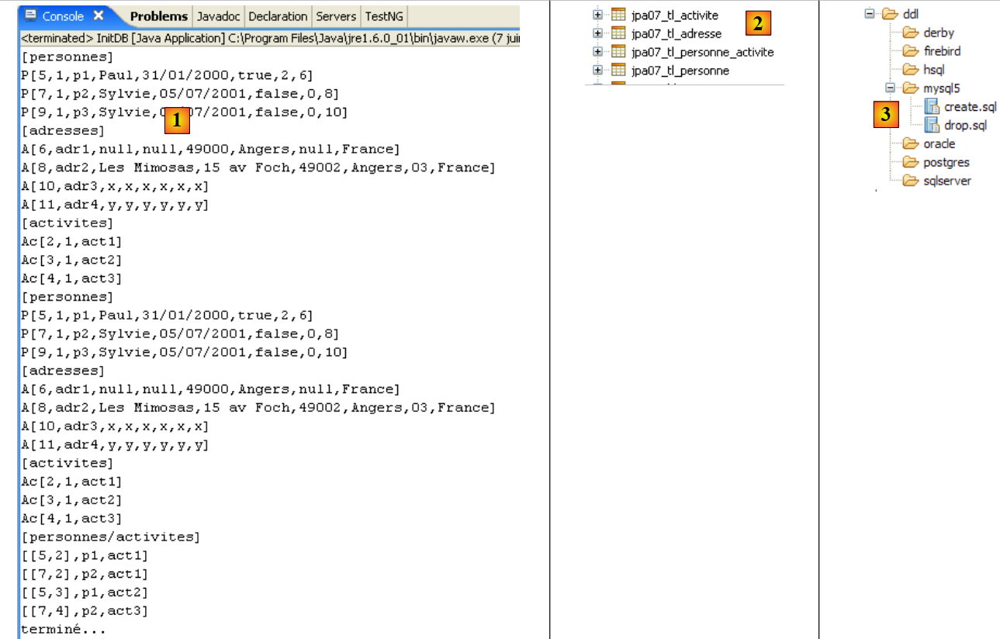 |
In [1], the console output; in [2], the generated tables; in [jpa07_tl], the generated scripts; and in [3], the generated scripts. Their contents are as follows:
create.sql
CREATE TABLE jpa07_tl_activite (ID BIGINT NOT NULL, VERSION INTEGER NOT NULL, NOM VARCHAR(30) UNIQUE NOT NULL, PRIMARY KEY (ID))
CREATE TABLE jpa07_tl_adresse (ID BIGINT NOT NULL, ADR3 VARCHAR(30), CODEPOSTAL VARCHAR(5) NOT NULL, VERSION INTEGER NOT NULL, VILLE VARCHAR(20) NOT NULL, ADR2 VARCHAR(30), CEDEX VARCHAR(3), ADR1 VARCHAR(30) NOT NULL, PAYS VARCHAR(20) NOT NULL, PRIMARY KEY (ID))
CREATE TABLE jpa07_tl_personne_activite (PERSONNE_ID BIGINT NOT NULL, ACTIVITE_ID BIGINT NOT NULL, PRIMARY KEY (PERSONNE_ID, ACTIVITE_ID))
CREATE TABLE jpa07_tl_personne (ID BIGINT NOT NULL, DATENAISSANCE DATE NOT NULL, MARIE TINYINT(1) default 0 NOT NULL, NOM VARCHAR(30) UNIQUE NOT NULL, NBENFANTS INTEGER NOT NULL, VERSION INTEGER NOT NULL, PRENOM VARCHAR(30) NOT NULL, adresse_id BIGINT UNIQUE NOT NULL, PRIMARY KEY (ID))
ALTER TABLE jpa07_tl_personne_activite ADD CONSTRAINT FK_jpa07_tl_personne_activite_ACTIVITE_ID FOREIGN KEY (ACTIVITE_ID) REFERENCES jpa07_tl_activite (ID)
ALTER TABLE jpa07_tl_personne_activite ADD CONSTRAINT FK_jpa07_tl_personne_activite_PERSONNE_ID FOREIGN KEY (PERSONNE_ID) REFERENCES jpa07_tl_personne (ID)
ALTER TABLE jpa07_tl_personne ADD CONSTRAINT FK_jpa07_tl_personne_adresse_id FOREIGN KEY (adresse_id) REFERENCES jpa07_tl_adresse (ID)
CREATE TABLE SEQUENCE (SEQ_NAME VARCHAR(50) NOT NULL, SEQ_COUNT DECIMAL(38), PRIMARY KEY (SEQ_NAME))
INSERT INTO SEQUENCE(SEQ_NAME, SEQ_COUNT) values ('SEQ_GEN', 1)
The execution of [InitDB] and [Main] completes without errors.
2.6. Example 6: Many-to-many relationship with an implicit join table
We return to Example 4 but now process it with an implicit join table generated by the JPA layer itself.
2.6.1. The database schema
 |
- in [1], the database MySQL5 - in [2]: the table [personne] – in [3]: the associated table [adresse] – in [4]: the [activite] table of activities – to [5]: the [personne_activite] join table that links people and activities.
2.6.2. The @Entity objects representing the database
The tables above will be represented by the following @Entity objects:
- the @Entity Person will represent the table [personne]
- the @Entity Address will represent the table [adresse]
- the @Entity Activity will represent the table [activite]
- The table [personne_activite] is no longer represented by an @Entity
The relationships between these entities are as follows:
- A one-to-one relationship links the Person entity to the Address entity: a person p has an address a. The Person entity holding the foreign key will have the primary relationship, and the Address entity will have the inverse relationship.
- A many-to-many relationship connects the Person and Activity entities: a person has multiple activities, and an activity is practiced by multiple people. This relationship will be implemented using a @ManyToMany annotation in each of the two entities, with one declared as the inverse of the other.
The @Entity Person is as follows:
@Entity
@Table(name = "jpa08_hb_personne")
public class Personne implements Serializable {
@Id
@Column(nullable = false)
@GeneratedValue(strategy = GenerationType.AUTO)
// toplink sqlserver :@GeneratedValue(strategy = GenerationType.IDENTITY)
private Long id;
@Column(nullable = false)
@Version
private int version;
@Column(length = 30, nullable = false, unique = true)
private String nom;
@Column(length = 30, nullable = false)
private String prenom;
@Column(nullable = false)
@Temporal(TemporalType.DATE)
private Date datenaissance;
@Column(nullable = false)
private boolean marie;
@Column(nullable = false)
private int nbenfants;
// main relationship Person (one) -> Address (one)
// implemented by the foreign key Person(adresse_id) -> Address
// cascade insert Person -> insert Address
// cascade shift Person -> shift Address
// cascade delete Person -> delete Address
// a Person must have 1 Address (nullable=false)
// 1 Address belongs to 1 person only (unique=true)
@OneToOne(cascade = CascadeType.ALL)
@JoinColumn(name = "adresse_id", unique = true, nullable = false)
private Adresse adresse;
// relationship Person (many) -> Activity (many) via a personne_activite join table
// personne_activite(PERSONNE_ID) is a foreign key on Personne(id)
// personne_activite(ACTIVITE_ID) is a foreign key on Activite(id)
// cascade=CascadeType.PERSIST: persistence of 1 person leads to persistence of their activities
@ManyToMany(cascade={CascadeType.PERSIST})
@JoinTable(name="jpa08_hb_personne_activite",joinColumns = @JoinColumn(name = "PERSONNE_ID"), inverseJoinColumns = @JoinColumn(name = "ACTIVITE_ID"))
private Set<Activite> activites = new HashSet<Activite>();
// manufacturers
public Personne() {
}
We will only comment on the @ManyToMany relationship in lines 46–48, which links the @Entity Person to the @Entity Activity:
- line 48: a person has activities. The activities field will represent these. In the previous version, the type of the elements in the activities set was PersonneActivite. Here, it is Activity. We therefore access a person’s activities directly, whereas in the previous version we had to go through the intermediate entity PersonneActivite.
- Line 46: The relationship linking the @Entity Person we are examining to the @Entity Activity in the activities set on line 48 is a many-to-many relationship (ManyToMany):
- one person (One) has multiple activities (Many)
- an activity (One) is practiced by several people (Many)
- Ultimately, the @Entity Person and Activity are linked by a ManyToMany relationship. As with the OneToOne relationship, the entities in this relationship are symmetrical. We can freely choose which @Entity will hold the primary relationship and which will hold the inverse relationship. Here, we decide that the @Entity Person will have the primary relationship.
- As we saw in the previous example, the @ManyToMany relationship requires a join table. Whereas previously we defined this using an @Entity, the join table here is defined using the @JoinTable annotation on line 47.
- The name attribute gives the table a name.
- The join table consists of the foreign keys from the tables it joins. Here, there are two foreign keys: one on the [personne] table, the other on the [activite] table. These foreign key columns are defined by the joinColumns and inverseJoinColumns attributes.
- The @JoinColumn annotation on the joinColumns attribute defines the foreign key on the table of the @Entity holding the primary relationship @ManyToMany, in this case the table [personne]. This foreign key column will be named PERSONNE_ID.
- The @JoinColumn annotation on the inverseJoinColumns attribute defines the foreign key on the table of the @Entity holding the inverse relationship @ManyToMany, in this case the table [activite]. This foreign key column will be named ACTIVITE_ID.
The @Entity Address is as follows:
@Entity
@Table(name = "jpa07_hb_adresse")
public class Adresse implements Serializable {
// fields
@Id
@Column(nullable = false)
@GeneratedValue(strategy = GenerationType.AUTO)
private Long id;
@Column(nullable = false)
@Version
private int version;
@Column(length = 30, nullable = false)
private String adr1;
@Column(length = 30)
private String adr2;
@Column(length = 30)
private String adr3;
@Column(length = 5, nullable = false)
private String codePostal;
@Column(length = 20, nullable = false)
private String ville;
@Column(length = 3)
private String cedex;
@Column(length = 20, nullable = false)
private String pays;
@OneToOne(mappedBy = "adresse")
private Personne personne;
- Lines 28-29: the @OneToOne relationship, which is the inverse of the @OneToOne address relationship of the @Entity Person (lines 37-38 of Person).
The @Entity Activity is as follows
@Entity
@Table(name = "jpa08_hb_activite")
public class Activite implements Serializable {
// fields
@Id()
@Column(nullable = false)
@GeneratedValue(strategy = GenerationType.AUTO)
// toplink sqlserver : @GeneratedValue(strategy = GenerationType.IDENTITY)
private Long id;
@Column(nullable = false)
@Version
private int version;
@Column(length = 30, nullable = false, unique = true)
private String nom;
// inverse relationship Activity -> Person
@ManyToMany(mappedBy = "activites")
private Set<Personne> personnes = new HashSet<Personne>();
...
- Lines 20–21: The many-to-many relationship linking the @Entity Activity to the @Entity Person. This relationship has already been defined in the @Entity Person. Here, we simply state that the relationship is the inverse (mappedBy) of the @ManyToMany relationship existing on the activites field (mappedBy = "activites") of the @Entity Person.
- Remember that a reverse relationship is always optional. Here, we use it to retrieve the people participating in the current activity. The Set<Person> people collection will be used to retrieve them. The loading mode for the Person dependencies of the @Entity Activity is not specified. We did not specify it in the previous example either. By default, this mode is fetch=FetchType.LAZY.
We have completed the description of the database entities. It was simpler than in the case where the join table [personne_activite] is an explicit table. This simpler solution may present drawbacks over time: it does not allow columns to be added to the join table. However, this may prove necessary to meet new requirements, such as adding a column to the [personne_activite] table indicating the date the person registered for the activity.
2.6.3. The Eclipse / Hibernate Project
The JPA implementation used here is Hibernate’s. The Eclipse project for the tests is as follows:
 |
In [1], the Eclipse project; in [2], the Java code. The project is located in [3] within the [4] examples folder. We will import it.
2.6.4. Generating the DDL database
Following the instructions in section 2.1.7, the SQL statement generated for the SGBD table is as follows:
alter table jpa08_hb_personne
drop
foreign key FKA44B1E555FE379D0;
alter table jpa08_hb_personne_activite
drop
foreign key FK5A6A55A5CD852024;
alter table jpa08_hb_personne_activite
drop
foreign key FK5A6A55A568C7A284;
drop table if exists jpa08_hb_activite;
drop table if exists jpa08_hb_adresse;
drop table if exists jpa08_hb_personne;
drop table if exists jpa08_hb_personne_activite;
create table jpa08_hb_activite (
id bigint not null auto_increment,
version integer not null,
nom varchar(30) not null unique,
primary key (id)
) ENGINE=InnoDB;
create table jpa08_hb_adresse (
id bigint not null auto_increment,
version integer not null,
adr1 varchar(30) not null,
adr2 varchar(30),
adr3 varchar(30),
codePostal varchar(5) not null,
ville varchar(20) not null,
cedex varchar(3),
pays varchar(20) not null,
primary key (id)
) ENGINE=InnoDB;
create table jpa08_hb_personne (
id bigint not null auto_increment,
version integer not null,
nom varchar(30) not null unique,
prenom varchar(30) not null,
datenaissance date not null,
marie bit not null,
nbenfants integer not null,
adresse_id bigint not null unique,
primary key (id)
) ENGINE=InnoDB;
create table jpa08_hb_personne_activite (
PERSONNE_ID bigint not null,
ACTIVITE_ID bigint not null,
primary key (PERSONNE_ID, ACTIVITE_ID)
) ENGINE=InnoDB;
alter table jpa08_hb_personne
add index FKA44B1E555FE379D0 (adresse_id),
add constraint FKA44B1E555FE379D0
foreign key (adresse_id)
references jpa08_hb_adresse (id);
alter table jpa08_hb_personne_activite
add index FK5A6A55A5CD852024 (ACTIVITE_ID),
add constraint FK5A6A55A5CD852024
foreign key (ACTIVITE_ID)
references jpa08_hb_activite (id);
alter table jpa08_hb_personne_activite
add index FK5A6A55A568C7A284 (PERSONNE_ID),
add constraint FK5A6A55A568C7A284
foreign key (PERSONNE_ID)
references jpa08_hb_personne (id);
This DDL is analogous to the one obtained with the explicit join table and corresponds to the schema already presented:
 |
2.6.5. InitDB
We will not comment much on the class [InitDB], which is identical to its predecessor version and yields the same results. Instead, let’s focus on the following code that displays the Person <-> Activity join:
// people/activities display
System.out.println("[personnes/activites]");
Iterator iterator = em.createQuery("select p.id,a.id from Personne p join p.activites a").getResultList().iterator();
while (iterator.hasNext()) {
Object[] row = (Object[]) iterator.next();
System.out.format("[%d,%d]%n", (Long) row[0], (Long) row[1]);
}
- Line 3: the JPQL order that performs the join. The result of the SELECT statement returns the IDs of the Person and Activity entities linked together by the join table. The list returned by the SELECT statement consists of rows containing two objects of type Long. To iterate through this list, line 3 requests an Iterator object for the list.
- Lines 4–7: Using the Iterator object from the previous step, the list is traversed.
- Line 5: Each element of the list is an array containing a row resulting from the SELECT statement
- Line 6: The elements of the current row resulting from the SELECT statement are retrieved by making the appropriate type conversions.
The result of [InitDB] is as follows:
2.6.6. Main
The [Main] class runs a series of tests, some of which we will review.
2.6.6.1. Test3
This test is as follows:
// delete act1 activity
public static void test3() {
// persistence context
EntityManager em = getEntityManager();
// start of transaction
EntityTransaction tx = em.getTransaction();
tx.begin();
// delete act1 activity from p2
p2.getActivites().remove(act1);
// act1 is removed from the persistence context
em.remove(act1);
// end transactions
tx.commit();
// display the new tables
dumpPersonne();
dumpActivite();
dumpAdresse();
dumpPersonne_Activite();
}
- line 11: activity act1 is removed from the persistence context
- line 9: activity act1 is one of the activities of the only person remaining in the context, person p2. Line 9 removes activity act1 from person p2’s activities. We do this to keep the persistence context consistent, as we will retain it for later use.
The results are as follows:
- The activity act1 on line 26 in test2 has disappeared from the activities in test3 (lines 40-41)
- Person p2 had activity act1 in test2 (line 33). At the end of test3, they no longer have it (line 47)
2.6.6.2. Test6
This test is as follows:
// modification of a person's activities
public static void test6() {
// persistence context
EntityManager em = getNewEntityManager();
// start of transaction
EntityTransaction tx = em.getTransaction();
tx.begin();
// we recover person p2
p2 = em.find(Personne.class, p2.getId());
// recover act2 activity
act2 = em.find(Activite.class, act2.getId());
// p2 now only does act2
p2.getActivites().clear();
p2.getActivites().add(act2);
// end transaction
tx.commit();
// display the new tables
dumpPersonne();
dumpActivite();
dumpPersonne_Activite();
}
- line 4: we use a new, empty persistence context
- line 9: person p2 is retrieved from the database into the persistence context
- line 11: activity act2 is retrieved from the database into the persistence context
- line 13: the activities of person p2 (act3) are loaded from the database into the context (fetchType.LAZY). This loading is triggered by the call [getActivites]. The activities of p2 are removed. This is not an actual removal of activities (remove) but a change in the status of person p2. They no longer engage in any activities.
- Line 14: We add activity act2 to person p2. Ultimately, the set of new activities for person p2 is the set {act2}.
- Line 16: End of transaction. Synchronization will review the objects in the context (p2, act2, act3) and will detect that the state of p2 has changed. The SQL commands reflecting this change in the database will be executed.
- Lines 18–20: All tables are displayed
The results are as follows:
- At the end of test 4, person p2 was performing activity act3 (line 3).
- At the end of test 6 (row 19), person p2 is no longer performing activity act3 (row 3) and is performing activity act2.
2.6.7. Implementation JPA / Toplink
We are now using an implementation JPA / Toplink:
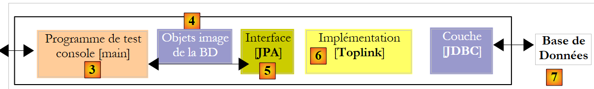 |
The Eclipse project with TopLink is a copy of the Eclipse project with Hibernate:
 |
The file <persistence.xml> [2] has been modified in one place, specifically in the declared entities:
<!-- provider -->
<provider>oracle.toplink.essentials.PersistenceProvider</provider>
<!-- persistent classes -->
<class>entites.Activite</class>
<class>entites.Adresse</class>
<class>entites.Personne</class>
...
- lines 4-6: managed entities
Running [InitDB] with SGBD and MySQL5 yields the following results:
 |
In [1], the console output; in [2], the generated tables; in [jpa07_tl], the generated scripts; and in [3], the generated scripts. Their contents are as follows:
create.sql
CREATE TABLE jpa08_tl_personne_activite (PERSONNE_ID BIGINT NOT NULL, ACTIVITE_ID BIGINT NOT NULL, PRIMARY KEY (PERSONNE_ID, ACTIVITE_ID))
CREATE TABLE jpa08_tl_activite (ID BIGINT NOT NULL, VERSION INTEGER NOT NULL, NOM VARCHAR(30) UNIQUE NOT NULL, PRIMARY KEY (ID))
CREATE TABLE jpa08_tl_personne (ID BIGINT NOT NULL, DATENAISSANCE DATE NOT NULL, MARIE TINYINT(1) default 0 NOT NULL, NOM VARCHAR(30) UNIQUE NOT NULL, NBENFANTS INTEGER NOT NULL, VERSION INTEGER NOT NULL, PRENOM VARCHAR(30) NOT NULL, adresse_id BIGINT UNIQUE NOT NULL, PRIMARY KEY (ID))
CREATE TABLE jpa08_tl_adresse (ID BIGINT NOT NULL, ADR3 VARCHAR(30), CODEPOSTAL VARCHAR(5) NOT NULL, VERSION INTEGER NOT NULL, VILLE VARCHAR(20) NOT NULL, ADR2 VARCHAR(30), CEDEX VARCHAR(3), ADR1 VARCHAR(30) NOT NULL, PAYS VARCHAR(20) NOT NULL, PRIMARY KEY (ID))
ALTER TABLE jpa08_tl_personne_activite ADD CONSTRAINT FK_jpa08_tl_personne_activite_ACTIVITE_ID FOREIGN KEY (ACTIVITE_ID) REFERENCES jpa08_tl_activite (ID)
ALTER TABLE jpa08_tl_personne_activite ADD CONSTRAINT FK_jpa08_tl_personne_activite_PERSONNE_ID FOREIGN KEY (PERSONNE_ID) REFERENCES jpa08_tl_personne (ID)
ALTER TABLE jpa08_tl_personne ADD CONSTRAINT FK_jpa08_tl_personne_adresse_id FOREIGN KEY (adresse_id) REFERENCES jpa08_tl_adresse (ID)
CREATE TABLE SEQUENCE (SEQ_NAME VARCHAR(50) NOT NULL, SEQ_COUNT DECIMAL(38), PRIMARY KEY (SEQ_NAME))
INSERT INTO SEQUENCE(SEQ_NAME, SEQ_COUNT) values ('SEQ_GEN', 1)
The execution of [InitDB] and that of [Main] proceed without errors.
2.6.8. The Eclipse / Hibernate 2 Project
We create an Eclipse project based on the previous one by copying it:
 |
In [1], the Eclipse project; in [2], the Java code. The project is located in [3] within the [4] examples folder. We will import it.
We modify the relationship linking Person to Activity as follows:
Person
// relationship Person (many) -> Activity (many) via a personne_activite join table
// personne_activite(PERSONNE_ID) is a foreign key on Personne(id)
// personne_activite(ACTIVITE_ID) is a foreign key on Activite(id)
// more cascading of activities
// @ManyToMany(cascade={CascadeType.PERSIST})
@ManyToMany()
@JoinTable(name = "jpa09_hb_personne_activite", joinColumns = @JoinColumn(name = "PERSONNE_ID"), inverseJoinColumns = @JoinColumn(name = "ACTIVITE_ID"))
private Set<Activite> activites = new HashSet<Activite>();
- line 6: the main relationship @ManyToMany no longer has a Person -> Activity persistence cascade (see previous version line 5)
Activity
// no more inverse relationship with Personne
// @ManyToMany(mappedBy = "activities")
// private Set<Person> persons = new HashSet<Person>();
- lines 2-3: the inverse relationship @ManyToMany Activity -> Person is removed
We aim to demonstrate that the removed attributes (cascade and inverse relationship) are not essential. The first change introduced by this new configuration is found in [InitDB]:
// associations people <--> activities
p1.getActivites().add(act1);
p1.getActivites().add(act2);
p2.getActivites().add(act1);
p2.getActivites().add(act3);
// business as usual
em.persist(act1);
em.persist(act2);
em.persist(act3);
// persistence of people
em.persist(p1);
em.persist(p2);
em.persist(p3);
// and a4 address not linked to a person
em.persist(adr4);
- lines 7–9: we are required to explicitly place activities act1 through act3 in the persistence context. When the Person -> Activity persistence cascade existed, lines 11–13 persisted both persons p1 through p3 and those persons’ activities act1 through act3.
A second change is visible in [Main]:
// recovery of people doing a given activity
public static void test5() {
// persistence context
EntityManager em = getNewEntityManager();
// start of transaction
EntityTransaction tx = em.getTransaction();
tx.begin();
System.out.format("1 - Personnes pratiquant l'activité act3 (JPQL) :%n");
// p2 activities are requested
for (Object pa : em.createQuery("select p.nom from Personne p join p.activites a where a.nom='act3'").getResultList()) {
System.out.println(pa);
}
// end transaction
tx.commit();
}
- lines 9-12: the query JPQL retrieving people participating in activity act3
- In the previous version, the same result was also obtained via the inverse relationship Activity -> Person, which has now been removed:
// we use the inverse relationship of act3
System.out.format("2 - Personnes pratiquant l'activité act3 (relation inverse) :%n");
act3 = em.find(Activite.class, act3.getId());
for (Personne p : act3.getPersonnes()) {
System.out.println(p.getNom());
}
2.6.9. The Eclipse / Toplink 2 Project
We are creating an Eclipse project based on the previous Eclipse / Toplink project by copying it:
 |
In [1], the Eclipse project; in [2], the Java code. The project is located in [3] within the [4] examples folder. We will import it.
The Java code is identical to that in version Hibernate.
2.7. Example 7: Using Named Queries
We conclude this lengthy overview of JPA entities, which began in paragraph 2, with a final example demonstrating the use of JPQL queries externalized in a configuration file. This example is taken from the following source:
[ref2]: "Getting Started With JPA in Spring 2.0" by Mark Fisher at the url
[http://blog.springframework.com/markf/archives/2006/05/30/getting-started-with-jpa-in-spring-20/].
2.7.1. The sample database
The database is as follows:
 |
- in [1]: a list of restaurants with their names and addresses
- in [2]: the table of restaurant addresses, limited to the street number and street name. There is a one-to-one relationship between the restaurant and address tables: a restaurant has one and only one address.
- in [3]: a table of dishes with their names and a true/false indicator to specify whether the dish is vegetarian or not
- in [4]: the restaurant/dish join table: a restaurant serves multiple dishes, and the same dish can be served by multiple restaurants. There is a many-to-many relationship between the restaurant and dish tables.
2.7.2. The @Entity objects representing the database
The previous tables will be represented by the following @Entitys:
- the @Entity Restaurant will represent the table [restaurant]
- the @Entity Address will represent the table [adresse]
- the @Entity Dish will represent the table [plat]
The relationships between these entities are as follows:
- a one-to-one relationship links the Restaurant entity to the Address entity: a restaurant r has an address a. The Restaurant entity, which holds the foreign key, will be the primary entity. The Address entity will not have a reverse relationship.
- A many-to-many relationship connects the Restaurant and Dish entities: a restaurant serves multiple dishes, and a single dish can be served by multiple restaurants. This relationship will be represented by an @ManyToMany annotation in the Restaurant entity. The Dish entity will not have a reverse relationship.
The @Entity Restaurant is as follows:
package entites;
...
@Entity
@Table(name = "jpa10_hb_restaurant")
public class Restaurant implements java.io.Serializable {
private static final long serialVersionUID = 1L;
@Id
@GeneratedValue(strategy = GenerationType.AUTO)
private long id;
@Column(unique = true, length = 30, nullable = false)
private String nom;
@OneToOne(cascade = CascadeType.ALL)
private Adresse adresse;
@ManyToMany(cascade = { CascadeType.PERSIST, CascadeType.MERGE })
@JoinTable(name = "jpa10_hb_restaurant_plat", inverseJoinColumns = @JoinColumn(name = "plat_id"))
private Set<Plat> plats = new HashSet<Plat>();
// manufacturers
public Restaurant() {
}
public Restaurant(String name, Adresse address, Set<Plat> entrees) {
...
}
// getters and setters
...
// toString
public String toString() {
String signature = "R[" + getNom() + "," + getAdresse();
for (Plat e : getPlats()) {
signature += "," + e;
}
return signature + "]";
}
}
- line 17: the one-to-one relationship between the Restaurant entity and the Address entity. All persistence operations on a restaurant are cascaded to its address.
- line 20: the relationship linking the @Entity Restaurant to the @Entity Dish in the dishes set on line 22 is of the many-to-many type (ManyToMany):
- a restaurant (One) has multiple dishes (Many)
- a dish (One) can be served by multiple restaurants (Many)
- Ultimately, the @Entity Restaurant and @Entity Dish are linked by a ManyToMany relationship. We decide that the @Entity Restaurant will be the primary relationship and that the @Entity Dish will not have a reverse relationship.
- The @ManyToMany relationship requires a join table. This is defined using the @JoinTable annotation on line 47.
- The name attribute gives the table a name.
- The join table consists of the foreign keys from the tables it joins. Here, there are two foreign keys: one on the table [restaurant], the other on the table [plat]. These foreign key columns are defined by the attributes joinColumns and inverseJoinColumns.
- The attribute joinColumns defines the foreign key on the table of the @Entity holding the primary relationship @ManyToMany, in this case the table [restaurant]. The attribute joinColumns is missing here. JPA has a default value in this case: [table]_[clé_primaire_de_table], here [jpa10_hb_restaurant_id].
- The annotation @JoinColumn on the attribute inverseJoinColumns defines the foreign key on the @Entity table holding the inverse relationship @ManyToMany, here the table [plat]. This foreign key column will be named plat_id.
The @Entity Address is as follows:
package entites;
...
@Entity
@Table(name="jpa10_hb_adresse")
public class Adresse implements java.io.Serializable {
@Id
@GeneratedValue(strategy = GenerationType.AUTO)
private long id;
@Column(name = "NUMERO_RUE")
private int numeroRue;
@Column(name = "NOM_RUE", length=30, nullable=false)
private String nomRue;
// getters and setters
...
// manufacturers
public Adresse(int streetNumber, String streetName){
...
}
public Adresse(){
}
// toString
public String toString(){
return "A["+getNumeroRue()+","+getNomRue()+"]";
}
}
- The @Entity Address is an entity with no direct relationship to other entities. It can only be persisted through a Restaurant entity.
- An address is defined by a street name (line 16) and a house number (line 13).
The @Entity Dish is as follows
package entites;
...
@Entity
@Table(name="jpa10_hb_plat")
public class Plat implements java.io.Serializable {
@Id
@GeneratedValue(strategy = GenerationType.AUTO)
private long id;
@Column(unique=true, length=50, nullable=false)
private String nom;
private boolean vegetarien;
// manufacturers
public Plat() {
}
public Plat(String name, boolean vegetarian) {
...
}
// getters and setters
...
// toString
public String toString() {
return "E[" + getNom() + "," + isVegetarien() + "]";
}
}
- The @Entity Dish is an entity with no direct relationship to other entities. It can only be persisted through a Restaurant entity.
- A dish is defined by a name (line 12) and whether it is vegetarian or not (line 14).
2.7.3. The Eclipse / Hibernate Project
The JPA implementation used here is that of Hibernate. The Eclipse test project is as follows:
 |
In [1], the Eclipse project; in [2], the Java code; and in JPA, the configuration of the layer. Note the presence of a file named [orm.xml] that has not been encountered before. The project is located in [3] within the examples folder [4]. We will import it.
2.7.4. Generating the DDL from the database
Following the instructions in section 2.1.7, the DDL file generated for SGBD and MySQL5 is as follows:
alter table jpa10_hb_restaurant
drop
foreign key FK3E8E4F5D5FE379D0;
alter table jpa10_hb_restaurant_plat
drop
foreign key FK1D2D06D11F0F78A4;
alter table jpa10_hb_restaurant_plat
drop
foreign key FK1D2D06D1AFAC3E44;
drop table if exists jpa10_hb_adresse;
drop table if exists jpa10_hb_plat;
drop table if exists jpa10_hb_restaurant;
drop table if exists jpa10_hb_restaurant_plat;
create table jpa10_hb_adresse (
id bigint not null auto_increment,
NUMERO_RUE integer,
NOM_RUE varchar(30) not null,
primary key (id)
) ENGINE=InnoDB;
create table jpa10_hb_plat (
id bigint not null auto_increment,
nom varchar(50) not null unique,
vegetarien bit not null,
primary key (id)
) ENGINE=InnoDB;
create table jpa10_hb_restaurant (
id bigint not null auto_increment,
nom varchar(30) not null unique,
adresse_id bigint,
primary key (id)
) ENGINE=InnoDB;
create table jpa10_hb_restaurant_plat (
jpa10_hb_restaurant_id bigint not null,
plat_id bigint not null,
primary key (jpa10_hb_restaurant_id, plat_id)
) ENGINE=InnoDB;
alter table jpa10_hb_restaurant
add index FK3E8E4F5D5FE379D0 (adresse_id),
add constraint FK3E8E4F5D5FE379D0
foreign key (adresse_id)
references jpa10_hb_adresse (id);
alter table jpa10_hb_restaurant_plat
add index FK1D2D06D11F0F78A4 (plat_id),
add constraint FK1D2D06D11F0F78A4
foreign key (plat_id)
references jpa10_hb_plat (id);
alter table jpa10_hb_restaurant_plat
add index FK1D2D06D1AFAC3E44 (jpa10_hb_restaurant_id),
add constraint FK1D2D06D1AFAC3E44
foreign key (jpa10_hb_restaurant_id)
references jpa10_hb_restaurant (id);
- lines 21-26: table [adresse]
- lines 28-33: table [plat]
- lines 35-40: table [restaurant]
- lines 42-46: the join table [restaurant_plat]. Note the composite key (line 45)
- lines 48–52: the foreign key from table [restaurant] to table [adresse]
- lines 54–58: the foreign key from table [restaurant_plat] to table [plat]
- lines 60-64: the foreign key from table [restaurant_plat] to table [restaurant]
This DDL corresponds to the schema already presented:
 |
In the SQL Explorer view, the database is organized as follows:
 |
- in [1]: the database’s 4 tables
- in [2]: the addresses
- in [3]: the dishes
- in [4]: the restaurants. [adresse_id] references the addresses from [2].
- in [5]: the join table [restaurant,plat]. [jpa10_hb_restaurant_id] references the restaurants in [4], and [plat_id] references the dishes in [3]. Thus, [1,1] means that the restaurant "Burger Barn" serves the dish "CheeseBurger".
To obtain the above data, the [QueryDB] program from the Eclipse project was executed.
2.7.5. Queries JPQL with a Hibernate console
We create a Hibernate console linked to the previous Eclipse project. We will follow the procedure already described twice, notably in section 2.1.12.
 |
- in [1] and [2]: the configuration of the Hibernate console
 |
- in [3]: a query JPQL and in [4] the result.
- in [5]: the equivalent query SQL
We now present a series of queries JPQL. The reader is invited to run them and discover the SQL order generated by Hibernate to execute them.
Get all restaurants with their dishes:
 |  |
Get restaurants serving at least one vegetarian dish:
 | 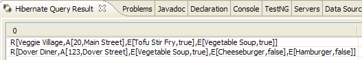 |
Get the names of restaurants that serve only vegetarian dishes:
 |  |
Get the restaurants that serve burgers:
 |  |
2.7.6. QueryDB
We are now looking at the [QueryDB] program from the Eclipse project, which:
- populates the database
- and issues a number of queries JPQL against it. These are recorded in the file [META-INF/orm.xml] of the Eclipse project:
 |
The [orm.xml] file can be used to configure the JPA layer instead of Java annotations. This provides flexibility in configuring the JPA layer. It can be modified without recompiling the Java code. Both methods can be used simultaneously: Java annotations and the [orm.xml] file. The JPA configuration is first set up using Java annotations and then using the [orm.xml] file. Therefore, if you want to modify a configuration made via a Java annotation without recompiling, simply place that configuration in [orm.xml]. That configuration will take precedence.
In our example, the file [orm.xml] is used to store query texts from JPQL. Its content is as follows:
<?xml version="1.0" encoding="UTF-8" ?>
<entity-mappings xmlns="http://java.sun.com/xml/ns/persistence/orm" xmlns:xsi="http://www.w3.org/2001/XMLSchema-instance"
xsi:schemaLocation="http://java.sun.com/xml/ns/persistence/orm http://java.sun.com/xml/ns/persistence/orm_1_0.xsd" version="1.0">
<description>Restaurants</description>
<named-query name="supprimer le contenu de la table restaurant">
<query>delete from Restaurant</query>
</named-query>
<named-query name="supprimer le contenu de la table plat">
<query>delete from Plat</query>
</named-query>
<named-query name="obtenir tous les restaurants">
<query>select r from Restaurant r order by r.nom asc</query>
</named-query>
<named-query name="obtenir toutes les adresses">
<query>select a from Adresse a order by a.nomRue asc</query>
</named-query>
<named-query name="obtenir tous les plats">
<query>select p from Plat p order by p.nom asc</query>
</named-query>
<named-query name="obtenir tous les restaurants avec leurs plats">
<query>select r.nom,p.nom from Restaurant r join r.plats p</query>
</named-query>
<named-query name="obtenir les restaurants ayant au moins un plat vegetarien">
<query>select distinct r from Restaurant r join r.plats p where p.vegetarien=true</query>
</named-query>
<named-query name="obtenir les restaurants avec uniquement des plats vegetariens">
<query>
select distinct r1.nom from Restaurant r1 where not exists (select p1 from Restaurant r2 join r2.plats p1 where r2.id=r1.id and
p1.vegetarien=false)
</query>
</named-query>
<named-query name="obtenir les restaurants d'une certaine rue">
<query>select r from Restaurant r where r.adresse.nomRue=:nomRue</query>
</named-query>
<named-query name="obtenir les restaurants qui servent des burgers">
<query>select r.nom,r.adresse.numeroRue, r.adresse.nomRue, p.nom from Restaurant r join r.plats p where p.nom like '%burger'</query>
</named-query>
<named-query name="obtenir les plats du restaurant untel">
<query>select p.nom from Restaurant r join r.plats p where r.nom=:nomRestaurant</query>
</named-query>
</entity-mappings>
- The root of the [orm.xml] file is <entity-mappings> (line 2).
- Lines 5–7: The named queries JPQL are enclosed in <named-query name= "... ">text</namedquery> tags.
- The name attribute of the tag is the name of the query.
- The text content of the tag is the query text.
QueryDB will execute the preceding queries. Its code is as follows:
package tests;
...
public class QueryDB {
// Persistence context
private static EntityManagerFactory emf = Persistence.createEntityManagerFactory("jpa");
private static EntityManager em = emf.createEntityManager();
public static void main(String[] args) {
// start of transaction
EntityTransaction tx = em.getTransaction();
tx.begin();
// delete [restaurant] table items
em.createNamedQuery("supprimer le contenu de la table restaurant").executeUpdate();
// delete table items [flat]
em.createNamedQuery("supprimer le contenu de la table plat").executeUpdate();
// creation of Address objects
Adresse adr1 = new Adresse(10, "Main Street");
Adresse adr2 = new Adresse(20, "Main Street");
Adresse adr3 = new Adresse(123, "Dover Street");
// creation of Entree objects
Plat ent1 = new Plat("Hamburger", false);
Plat ent2 = new Plat("Cheeseburger", false);
Plat ent3 = new Plat("Tofu Stir Fry", true);
Plat ent4 = new Plat("Vegetable Soup", true);
// creation of Restaurant objects
Restaurant restaurant1 = new Restaurant();
restaurant1.setNom("Burger Barn");
restaurant1.setAdresse(adr1);
restaurant1.getPlats().add(ent1);
restaurant1.getPlats().add(ent2);
Restaurant restaurant2 = new Restaurant();
restaurant2.setNom("Veggie Village");
restaurant2.setAdresse(adr2);
restaurant2.getPlats().add(ent3);
restaurant2.getPlats().add(ent4);
Restaurant restaurant3 = new Restaurant();
restaurant3.setNom("Dover Diner");
restaurant3.setAdresse(adr3);
restaurant3.getPlats().add(ent1);
restaurant3.getPlats().add(ent2);
restaurant3.getPlats().add(ent4);
// persistence of Restaurant objects (and other objects through cascading)
em.persist(restaurant1);
em.persist(restaurant2);
em.persist(restaurant3);
// end transaction
tx.commit();
// dump base
dumpDataBase();
// end EntityManager
em.close();
// end EntityManagerFactory
emf.close();
}
// database content display
@SuppressWarnings("unchecked")
private static void dumpDataBase() {
// test2
log("données de la base");
// start of transaction
EntityTransaction tx = em.getTransaction();
tx.begin();
// restaurant displays
log("[restaurants]");
for (Object restaurant : em.createNamedQuery("obtenir tous les restaurants").getResultList()) {
System.out.println(restaurant);
}
// address display
log("[adresses]");
for (Object adresse : em.createNamedQuery("obtenir toutes les adresses").getResultList()) {
System.out.println(adresse);
}
// flat displays
log("[plats]");
for (Object plat : em.createNamedQuery("obtenir tous les plats").getResultList()) {
System.out.println(plat);
}
// displays links restaurants <--> dishes
log("[restaurants/plats]");
Iterator record = em.createNamedQuery("obtenir tous les restaurants avec leurs plats").getResultList().iterator();
while (record.hasNext()) {
Object[] currentRecord = (Object[]) record.next();
System.out.format("[%s,%s]%n", currentRecord[0], currentRecord[1]);
}
log("[Liste des restaurants avec au moins un plat végétarien]");
for (Object r : em.createNamedQuery("obtenir les restaurants ayant au moins un plat vegetarien").getResultList()) {
System.out.println(r);
}
// query
log("[Liste des restaurants avec seulement des plats végétariens]");
for (Object r : em.createNamedQuery("obtenir les restaurants avec uniquement des plats vegetariens").getResultList()) {
System.out.println(r);
}
// query
log("[Liste des restaurants dans Dover Street]");
for (Object r : em.createNamedQuery("obtenir les restaurants d'une certaine rue").setParameter("nomRue", "Dover Street").getResultList()) {
System.out.println(r);
}
// query
log("[Liste des restaurants ayant un plat de type burger]");
record = em.createNamedQuery("obtenir les restaurants qui servent des burgers").getResultList().iterator();
while (record.hasNext()) {
Object[] currentRecord = (Object[]) record.next();
System.out.format("[%s,%d,%s,%s]%n", currentRecord[0], currentRecord[1], currentRecord[2], currentRecord[3]);
}
// query
log("[Plats de Veggie Village]");
for (Object r : em.createNamedQuery("obtenir les plats du restaurant untel").setParameter("nomRestaurant", "Veggie Village").getResultList()) {
System.out.println(r);
}
// end transaction
tx.commit();
}
// logs
private static void log(String message) {
System.out.println(" -----------" + message);
}
}
The result of running [QueryDB] is as follows:
We leave it to the reader to make the connection between the code and the results. To do so, we recommend running the queries JPQL in the Hibernate console and examining the corresponding code SQL.
2.7.7. The Eclipse / Toplink Project
Interested readers will find the previous project implemented with Toplink in the examples available for download with this tutorial:
 |
The Eclipse project with Toplink is a copy of the Eclipse project with Hibernate:
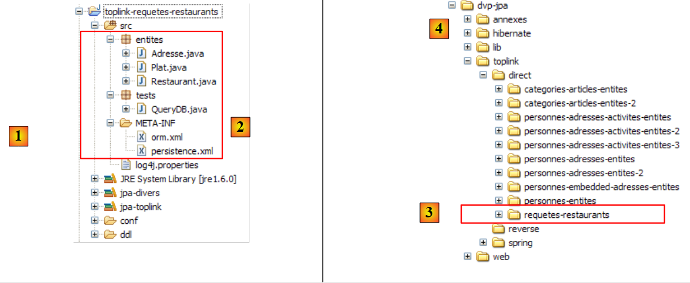 |
The file <persistence.xml> [2] declares the managed entities:
<!-- provider -->
<provider>oracle.toplink.essentials.PersistenceProvider</provider>
<!-- persistent classes -->
<class>entites.Restaurant</class>
<class>entites.Adresse</class>
<class>entites.Plat</class>
...
- lines 4-6: managed entities
The JPQL queries stored in [orm.xml] are executed correctly by Toplink. To ensure this, in the previous project we took care not to use HQL (Hibernate Query Language) queries, which are in fact a superset of JPQL and whose syntax is not accepted by JPQL.
2.8. Conclusion
We conclude here our study of JPA entities. This was long, and yet important aspects (for the advanced developer) were not covered. Once again, it is advisable to read a reference book such as the one used for this tutorial:
[ref1]: Java Persistence with Hibernate, by Christian Bauer and Gavin King, published by Manning.